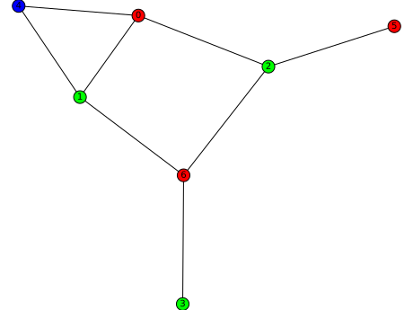
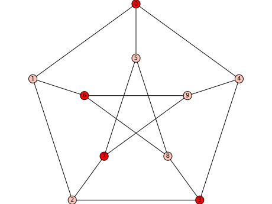
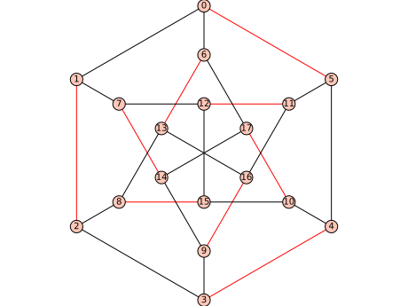
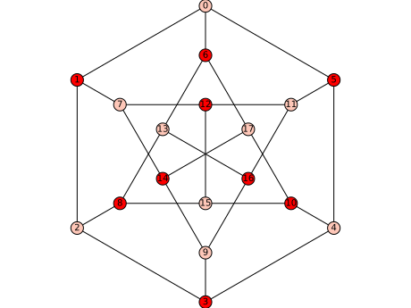

Undirected graphs¶
This module implements functions and operations involving undirected graphs.
Algorithmically hard stuff
chromatic_index() |
Return the chromatic index of the graph. |
chromatic_number() |
Return the minimal number of colors needed to color the vertices of the graph. |
chromatic_polynomial() |
Compute the chromatic polynomial of the graph G. |
chromatic_quasisymmetric_function() |
Return the chromatic quasisymmetric function of self. |
chromatic_symmetric_function() |
Return the chromatic symmetric function of self. |
coloring() |
Return the first (optimal) proper vertex-coloring found. |
convexity_properties() |
Return a ConvexityProperties object corresponding to self. |
has_homomorphism_to() |
Checks whether there is a homomorphism between two graphs. |
independent_set() |
Return a maximum independent set. |
independent_set_of_representatives() |
Return an independent set of representatives. |
is_perfect() |
Tests whether the graph is perfect. |
matching_polynomial() |
Computes the matching polynomial of the graph \(G\). |
minor() |
Return the vertices of a minor isomorphic to \(H\) in the current graph. |
pathwidth() |
Compute the pathwidth of self (and provides a decomposition) |
rank_decomposition() |
Compute an optimal rank-decomposition of the given graph. |
topological_minor() |
Return a topological \(H\)-minor from self if one exists. |
treewidth() |
Computes the tree-width of \(G\) (and provides a decomposition) |
tutte_polynomial() |
Return the Tutte polynomial of the graph \(G\). |
vertex_cover() |
Return a minimum vertex cover of self represented by a set of vertices. |
Basic methods
bipartite_color() |
Return a dictionary with vertices as the keys and the color class as the values. |
bipartite_sets() |
Return \((X,Y)\) where \(X\) and \(Y\) are the nodes in each bipartite set of graph \(G\). |
graph6_string() |
Return the graph6 representation of the graph as an ASCII string. |
is_directed() |
Since graph is undirected, returns False. |
join() |
Return the join of self and other. |
sparse6_string() |
Return the sparse6 representation of the graph as an ASCII string. |
to_directed() |
Return a directed version of the graph. |
to_undirected() |
Since the graph is already undirected, simply returns a copy of itself. |
write_to_eps() |
Write a plot of the graph to filename in eps format. |
Clique-related methods
clique_complex() |
Return the clique complex of self. |
clique_maximum() |
Return the vertex set of a maximal order complete subgraph. |
clique_number() |
Return the order of the largest clique of the graph |
clique_polynomial() |
Return the clique polynomial of self. |
cliques_containing_vertex() |
Return the cliques containing each vertex, represented as a dictionary of lists of lists, keyed by vertex. |
cliques_get_clique_bipartite() |
Return a bipartite graph constructed such that maximal cliques are the right vertices and the left vertices are retained from the given graph. Right and left vertices are connected if the bottom vertex belongs to the clique represented by a top vertex. |
cliques_get_max_clique_graph() |
Return the clique graph. |
cliques_maximal() |
Return the list of all maximal cliques. |
cliques_maximum() |
Returns the vertex sets of ALL the maximum complete subgraphs. |
cliques_number_of() |
Return a dictionary of the number of maximal cliques containing each vertex, keyed by vertex. |
cliques_vertex_clique_number() |
Return a dictionary of sizes of the largest maximal cliques containing each vertex, keyed by vertex. |
Connectivity, orientations, trees
bounded_outdegree_orientation() |
Computes an orientation of self such that every vertex \(v\) has out-degree less than \(b(v)\) |
bridges() |
Return a list of the bridges (or cut edges). |
cleave() |
Return the connected subgraphs separated by the input vertex cut. |
degree_constrained_subgraph() |
Returns a degree-constrained subgraph. |
ear_decomposition() |
Return an Ear decomposition of the graph. |
gomory_hu_tree() |
Return a Gomory-Hu tree of self. |
is_triconnected() |
Check whether the graph is triconnected. |
minimum_outdegree_orientation() |
Returns an orientation of self with the smallest possible maximum outdegree. |
orientations() |
Return an iterator over orientations of self. |
random_orientation() |
Return a random orientation of a graph \(G\). |
random_spanning_tree() |
Return a random spanning tree of the graph. |
spanning_trees() |
Returns a list of all spanning trees. |
spqr_tree() |
Return an SPQR-tree representing the triconnected components of the graph. |
strong_orientation() |
Returns a strongly connected orientation of the current graph. |
strong_orientations_iterator() |
Returns an iterator over all strong orientations of a graph \(G\). |
Distances
centrality_degree() |
Return the degree centrality of a vertex. |
Graph properties
apex_vertices() |
Return the list of apex vertices. |
is_apex() |
Test if the graph is apex. |
is_arc_transitive() |
Check if self is an arc-transitive graph |
is_asteroidal_triple_free() |
Test if the input graph is asteroidal triple-free |
is_biconnected() |
Test if the graph is biconnected. |
is_block_graph() |
Return whether this graph is a block graph. |
is_cactus() |
Check whether the graph is cactus graph. |
is_cartesian_product() |
Test whether the graph is a Cartesian product. |
is_circumscribable() |
Test whether the graph is the graph of a circumscribed polyhedron. |
is_cograph() |
Check whether the graph is cograph. |
is_comparability() |
Tests whether the graph is a comparability graph |
is_distance_regular() |
Test if the graph is distance-regular |
is_edge_transitive() |
Check if self is an edge transitive graph. |
is_even_hole_free() |
Tests whether self contains an induced even hole. |
is_forest() |
Tests if the graph is a forest, i.e. a disjoint union of trees. |
is_half_transitive() |
Check if self is a half-transitive graph. |
is_inscribable() |
Test whether the graph is the graph of an inscribed polyhedron. |
is_line_graph() |
Tests wether the graph is a line graph. |
is_long_antihole_free() |
Tests whether the given graph contains an induced subgraph that is isomorphic to the complement of a cycle of length at least 5. |
is_long_hole_free() |
Tests whether g contains an induced cycle of length at least 5. |
is_odd_hole_free() |
Tests whether self contains an induced odd hole. |
is_overfull() |
Tests whether the current graph is overfull. |
is_partial_cube() |
Test whether the given graph is a partial cube. |
is_permutation() |
Tests whether the graph is a permutation graph. |
is_polyhedral() |
Check whether the graph is the graph of the polyhedron. |
is_prime() |
Test whether the current graph is prime. |
is_semi_symmetric() |
Check if self is semi-symmetric. |
is_split() |
Returns True if the graph is a Split graph, False otherwise. |
is_strongly_regular() |
Check whether the graph is strongly regular. |
is_tree() |
Tests if the graph is a tree |
is_triangle_free() |
Returns whether self is triangle-free |
is_weakly_chordal() |
Tests whether the given graph is weakly chordal, i.e., the graph and its complement have no induced cycle of length at least 5. |
Leftovers
common_neighbors_matrix() |
Return a matrix of numbers of common neighbors between each pairs. |
cores() |
Return the core number for each vertex in an ordered list. |
effective_resistance() |
Return the effective resistance between nodes \(i\) and \(j\). |
effective_resistance_matrix() |
Return a matrix whose (\(i\) , \(j\)) entry gives the effective resistance between vertices \(i\) and \(j\). |
fractional_chromatic_index() |
Return the fractional chromatic index of the graph. |
has_perfect_matching() |
Return whether this graph has a perfect matching. |
ihara_zeta_function_inverse() |
Compute the inverse of the Ihara zeta function of the graph. |
kirchhoff_symanzik_polynomial() |
Return the Kirchhoff-Symanzik polynomial of a graph. |
least_effective_resistance() |
Return a list of pairs of nodes with the least effective resistance. |
lovasz_theta() |
Return the value of Lovász theta-function of graph |
magnitude_function() |
Return the magnitude function of the graph as a rational function. |
matching() |
Return a maximum weighted matching of the graph represented by the list of its edges. |
maximum_average_degree() |
Return the Maximum Average Degree (MAD) of the current graph. |
modular_decomposition() |
Return the modular decomposition of the current graph. |
most_common_neighbors() |
Return vertex pairs with maximal number of common neighbors. |
perfect_matchings() |
Return an iterator over all perfect matchings of the graph. |
seidel_adjacency_matrix() |
Return the Seidel adjacency matrix of self. |
seidel_switching() |
Return the Seidel switching of self w.r.t. subset of vertices s. |
two_factor_petersen() |
Return a decomposition of the graph into 2-factors. |
twograph() |
Return the two-graph of self |
AUTHORS:
- Robert L. Miller (2006-10-22): initial version
- William Stein (2006-12-05): Editing
- Robert L. Miller (2007-01-13): refactoring, adjusting for NetworkX-0.33, fixed
- plotting bugs (2007-01-23): basic tutorial, edge labels, loops, multiple edges and arcs (2007-02-07): graph6 and sparse6 formats, matrix input
- Emily Kirkmann (2007-02-11): added graph_border option to plot and show
- Robert L. Miller (2007-02-12): vertex color-maps, graph boundaries, graph6
- helper functions in Cython
- Robert L. Miller Sage Days 3 (2007-02-17-21): 3d plotting in Tachyon
- Robert L. Miller (2007-02-25): display a partition
- Robert L. Miller (2007-02-28): associate arbitrary objects to vertices, edge
- and arc label display (in 2d), edge coloring
- Robert L. Miller (2007-03-21): Automorphism group, isomorphism check,
- canonical label
- Robert L. Miller (2007-06-07-09): NetworkX function wrapping
- Michael W. Hansen (2007-06-09): Topological sort generation
- Emily Kirkman, Robert L. Miller Sage Days 4: Finished wrapping NetworkX
- Emily Kirkman (2007-07-21): Genus (including circular planar, all embeddings
- and all planar embeddings), all paths, interior paths
- Bobby Moretti (2007-08-12): fixed up plotting of graphs with edge colors
- differentiated by label
- Jason Grout (2007-09-25): Added functions, bug fixes, and general enhancements
- Robert L. Miller (Sage Days 7): Edge labeled graph isomorphism
- Tom Boothby (Sage Days 7): Miscellaneous awesomeness
- Tom Boothby (2008-01-09): Added graphviz output
- David Joyner (2009-2): Fixed docstring bug related to GAP.
- Stephen Hartke (2009-07-26): Fixed bug in blocks_and_cut_vertices() that
- caused an incorrect result when the vertex 0 was a cut vertex.
- Stephen Hartke (2009-08-22): Fixed bug in blocks_and_cut_vertices() where the
- list of cut_vertices is not treated as a set.
- Anders Jonsson (2009-10-10): Counting of spanning trees and out-trees added.
- Nathann Cohen (2009-09) : Cliquer, Connectivity, Flows and everything that
- uses Linear Programming and class numerical.MIP
- Nicolas M. Thiery (2010-02): graph layout code refactoring, dot2tex/graphviz interface
- David Coudert (2012-04) : Reduction rules in vertex_cover.
- Birk Eisermann (2012-06): added recognition of weakly chordal graphs and
- long-hole-free / long-antihole-free graphs
- Alexandre P. Zuge (2013-07): added join operation.
- Amritanshu Prasad (2014-08): added clique polynomial
- Julian Rüth (2018-06-21): upgrade to NetworkX 2
- David Coudert (2018-10-07): cleaning
- Amanda Francis, Caitlin Lienkaemper, Kate Collins, Rajat Mittal (2019-03-10): methods for computing effective resistance
- Amanda Francis, Caitlin Lienkaemper, Kate Collins, Rajat Mittal (2019-03-19): most_common_neighbors and common_neighbors_matrix added.
Graph Format¶
Supported formats¶
Sage Graphs can be created from a wide range of inputs. A few examples are covered here.
NetworkX dictionary format:
sage: d = {0: [1,4,5], 1: [2,6], 2: [3,7], 3: [4,8], 4: [9], \ 5: [7, 8], 6: [8,9], 7: [9]} sage: G = Graph(d); G Graph on 10 vertices sage: G.plot().show() # or G.show()
A NetworkX graph:
sage: import networkx sage: K = networkx.complete_bipartite_graph(12,7) sage: G = Graph(K) sage: G.degree() [7, 7, 7, 7, 7, 7, 7, 7, 7, 7, 7, 7, 12, 12, 12, 12, 12, 12, 12]
graph6 or sparse6 format:
sage: s = ':I`AKGsaOs`cI]Gb~' sage: G = Graph(s, sparse=True); G Looped multi-graph on 10 vertices sage: G.plot().show() # or G.show()
Note that the
\character is an escape character in Python, and also a character used by graph6 strings:sage: G = Graph('Ihe\n@GUA') Traceback (most recent call last): ... RuntimeError: the string (Ihe) seems corrupt: for n = 10, the string is too short
In Python, the escaped character
\is represented by\\:sage: G = Graph('Ihe\\n@GUA') sage: G.plot().show() # or G.show()
- adjacency matrix: In an adjacency matrix, each column and each row represent a
vertex. If a 1 shows up in row \(i\), column \(j\), there is an edge \((i,j)\).
sage: M = Matrix([(0,1,0,0,1,1,0,0,0,0),(1,0,1,0,0,0,1,0,0,0), \ (0,1,0,1,0,0,0,1,0,0), (0,0,1,0,1,0,0,0,1,0),(1,0,0,1,0,0,0,0,0,1), \ (1,0,0,0,0,0,0,1,1,0), (0,1,0,0,0,0,0,0,1,1),(0,0,1,0,0,1,0,0,0,1), \ (0,0,0,1,0,1,1,0,0,0), (0,0,0,0,1,0,1,1,0,0)]) sage: M [0 1 0 0 1 1 0 0 0 0] [1 0 1 0 0 0 1 0 0 0] [0 1 0 1 0 0 0 1 0 0] [0 0 1 0 1 0 0 0 1 0] [1 0 0 1 0 0 0 0 0 1] [1 0 0 0 0 0 0 1 1 0] [0 1 0 0 0 0 0 0 1 1] [0 0 1 0 0 1 0 0 0 1] [0 0 0 1 0 1 1 0 0 0] [0 0 0 0 1 0 1 1 0 0] sage: G = Graph(M); G Graph on 10 vertices sage: G.plot().show() # or G.show()
- incidence matrix: In an incidence matrix, each row represents a vertex and
each column represents an edge.
sage: M = Matrix([(-1, 0, 0, 0, 1, 0, 0, 0, 0, 0,-1, 0, 0, 0, 0), ....: ( 1,-1, 0, 0, 0, 0, 0, 0, 0, 0, 0,-1, 0, 0, 0), ....: ( 0, 1,-1, 0, 0, 0, 0, 0, 0, 0, 0, 0,-1, 0, 0), ....: ( 0, 0, 1,-1, 0, 0, 0, 0, 0, 0, 0, 0, 0,-1, 0), ....: ( 0, 0, 0, 1,-1, 0, 0, 0, 0, 0, 0, 0, 0, 0,-1), ....: ( 0, 0, 0, 0, 0,-1, 0, 0, 0, 1, 1, 0, 0, 0, 0), ....: ( 0, 0, 0, 0, 0, 0, 0, 1,-1, 0, 0, 1, 0, 0, 0), ....: ( 0, 0, 0, 0, 0, 1,-1, 0, 0, 0, 0, 0, 1, 0, 0), ....: ( 0, 0, 0, 0, 0, 0, 0, 0, 1,-1, 0, 0, 0, 1, 0), ....: ( 0, 0, 0, 0, 0, 0, 1,-1, 0, 0, 0, 0, 0, 0, 1)]) sage: M [-1 0 0 0 1 0 0 0 0 0 -1 0 0 0 0] [ 1 -1 0 0 0 0 0 0 0 0 0 -1 0 0 0] [ 0 1 -1 0 0 0 0 0 0 0 0 0 -1 0 0] [ 0 0 1 -1 0 0 0 0 0 0 0 0 0 -1 0] [ 0 0 0 1 -1 0 0 0 0 0 0 0 0 0 -1] [ 0 0 0 0 0 -1 0 0 0 1 1 0 0 0 0] [ 0 0 0 0 0 0 0 1 -1 0 0 1 0 0 0] [ 0 0 0 0 0 1 -1 0 0 0 0 0 1 0 0] [ 0 0 0 0 0 0 0 0 1 -1 0 0 0 1 0] [ 0 0 0 0 0 0 1 -1 0 0 0 0 0 0 1] sage: G = Graph(M); G Graph on 10 vertices sage: G.plot().show() # or G.show() sage: DiGraph(matrix(2,[0,0,-1,1]), format="incidence_matrix") Traceback (most recent call last): ... ValueError: there must be two nonzero entries (-1 & 1) per column
a list of edges:
sage: g = Graph([(1,3),(3,8),(5,2)]) sage: g Graph on 5 vertices
an igraph Graph:
sage: import igraph # optional - python_igraph sage: g = Graph(igraph.Graph([(1,3),(3,2),(0,2)])) # optional - python_igraph sage: g # optional - python_igraph Graph on 4 vertices
Generators¶
Use graphs(n) to iterate through all non-isomorphic graphs of given size:
sage: for g in graphs(4):
....: print(g.degree_sequence())
[0, 0, 0, 0]
[1, 1, 0, 0]
[2, 1, 1, 0]
[3, 1, 1, 1]
[1, 1, 1, 1]
[2, 2, 1, 1]
[2, 2, 2, 0]
[3, 2, 2, 1]
[2, 2, 2, 2]
[3, 3, 2, 2]
[3, 3, 3, 3]
Similarly graphs() will iterate through all graphs. The complete graph of 4
vertices is of course the smallest graph with chromatic number bigger than
three:
sage: for g in graphs():
....: if g.chromatic_number() > 3:
....: break
sage: g.is_isomorphic(graphs.CompleteGraph(4))
True
For some commonly used graphs to play with, type:
sage: graphs.[tab] # not tested
and hit {tab}. Most of these graphs come with their own custom plot, so you can see how people usually visualize these graphs.
sage: G = graphs.PetersenGraph()
sage: G.plot().show() # or G.show()
sage: G.degree_histogram()
[0, 0, 0, 10]
sage: G.adjacency_matrix()
[0 1 0 0 1 1 0 0 0 0]
[1 0 1 0 0 0 1 0 0 0]
[0 1 0 1 0 0 0 1 0 0]
[0 0 1 0 1 0 0 0 1 0]
[1 0 0 1 0 0 0 0 0 1]
[1 0 0 0 0 0 0 1 1 0]
[0 1 0 0 0 0 0 0 1 1]
[0 0 1 0 0 1 0 0 0 1]
[0 0 0 1 0 1 1 0 0 0]
[0 0 0 0 1 0 1 1 0 0]
sage: S = G.subgraph([0,1,2,3])
sage: S.plot().show() # or S.show()
sage: S.density()
1/2
sage: G = GraphQuery(display_cols=['graph6'], num_vertices=7, diameter=5)
sage: L = G.get_graphs_list()
sage: graphs_list.show_graphs(L)
Labels¶
Each vertex can have any hashable object as a label. These are things like
strings, numbers, and tuples. Each edge is given a default label of None,
but if specified, edges can have any label at all. Edges between vertices \(u\)
and \(v\) are represented typically as (u, v, l), where l is the label for
the edge.
Note that vertex labels themselves cannot be mutable items:
sage: M = Matrix( [[0,0],[0,0]] )
sage: G = Graph({ 0 : { M : None } })
Traceback (most recent call last):
...
TypeError: mutable matrices are unhashable
However, if one wants to define a dictionary, with the same keys and arbitrary objects for entries, one can make that association:
sage: d = {0 : graphs.DodecahedralGraph(), 1 : graphs.FlowerSnark(), \
2 : graphs.MoebiusKantorGraph(), 3 : graphs.PetersenGraph() }
sage: d[2]
Moebius-Kantor Graph: Graph on 16 vertices
sage: T = graphs.TetrahedralGraph()
sage: T.vertices()
[0, 1, 2, 3]
sage: T.set_vertices(d)
sage: T.get_vertex(1)
Flower Snark: Graph on 20 vertices
Database¶
There is a database available for searching for graphs that satisfy a certain set of parameters, including number of vertices and edges, density, maximum and minimum degree, diameter, radius, and connectivity. To see a list of all search parameter keywords broken down by their designated table names, type
sage: graph_db_info()
{...}
For more details on data types or keyword input, enter
sage: GraphQuery? # not tested
The results of a query can be viewed with the show method, or can be viewed individually by iterating through the results
sage: Q = GraphQuery(display_cols=['graph6'],num_vertices=7, diameter=5)
sage: Q.show()
Graph6
--------------------
F?`po
F?gqg
F@?]O
F@OKg
F@R@o
FA_pW
FEOhW
FGC{o
FIAHo
Show each graph as you iterate through the results:
sage: for g in Q:
....: show(g)
Visualization¶
To see a graph \(G\) you are working with, there are three main options. You can
view the graph in two dimensions via matplotlib with show().
sage: G = graphs.RandomGNP(15,.3)
sage: G.show()
And you can view it in three dimensions via jmol with show3d().
sage: G.show3d()
Or it can be rendered with \(\LaTeX\). This requires the right additions to a
standard \(\mbox{\rm\TeX}\) installation. Then standard Sage commands, such as
view(G) will display the graph, or latex(G) will produce a string
suitable for inclusion in a \(\LaTeX\) document. More details on this are at the
sage.graphs.graph_latex module.
sage: from sage.graphs.graph_latex import check_tkz_graph
sage: check_tkz_graph() # random - depends on TeX installation
sage: latex(G)
\begin{tikzpicture}
...
\end{tikzpicture}
Mutability¶
Graphs are mutable, and thus unusable as dictionary keys, unless
data_structure="static_sparse" is used:
sage: G = graphs.PetersenGraph()
sage: {G:1}[G]
Traceback (most recent call last):
...
TypeError: This graph is mutable, and thus not hashable. Create an immutable copy by `g.copy(immutable=True)`
sage: G_immutable = Graph(G, immutable=True)
sage: G_immutable == G
True
sage: {G_immutable:1}[G_immutable]
1
Methods¶
-
class
sage.graphs.graph.Graph(data=None, pos=None, loops=None, format=None, weighted=None, data_structure='sparse', vertex_labels=True, name=None, multiedges=None, convert_empty_dict_labels_to_None=None, sparse=True, immutable=False)¶ Bases:
sage.graphs.generic_graph.GenericGraphUndirected graph.
A graph is a set of vertices connected by edges. See the Wikipedia article Graph_(mathematics) for more information. For a collection of pre-defined graphs, see the
graph_generatorsmodule.A
Graphobject has many methods whose list can be obtained by typingg.<tab>(i.e. hit the ‘tab’ key) or by reading the documentation ofgraph,generic_graph, anddigraph.INPUT:
By default, a
Graphobject is simple (i.e. no loops nor multiple edges) and unweighted. This can be easily tuned with the appropriate flags (see below).data– can be any of the following (see theformatargument):Graph()– build a graph on 0 vertices.Graph(5)– return an edgeless graph on the 5 vertices 0,…,4.Graph([list_of_vertices, list_of_edges])– returns a graph with given vertices/edges.To bypass auto-detection, prefer the more explicit
Graph([V, E], format='vertices_and_edges').Graph(list_of_edges)– return a graph with a given list of edges (see documentation ofadd_edges()).To bypass auto-detection, prefer the more explicit
Graph(L, format='list_of_edges').Graph({1: [2, 3, 4], 3: [4]})– return a graph by associating to each vertex the list of its neighbors.To bypass auto-detection, prefer the more explicit
Graph(D, format='dict_of_lists').Graph({1: {2: 'a', 3:'b'} ,3:{2:'c'}})– return a graph by associating a list of neighbors to each vertex and providing its edge label.To bypass auto-detection, prefer the more explicit
Graph(D, format='dict_of_dicts').For graphs with multiple edges, you can provide a list of labels instead, e.g.:
Graph({1: {2: ['a1', 'a2'], 3:['b']} ,3:{2:['c']}}).Graph(a_symmetric_matrix)– return a graph with given (weighted) adjacency matrix (see documentation ofadjacency_matrix()).To bypass auto-detection, prefer the more explicit
Graph(M, format='adjacency_matrix'). To take weights into account, useformat='weighted_adjacency_matrix'instead.Graph(a_nonsymmetric_matrix)– return a graph with given incidence matrix (see documentation ofincidence_matrix()).To bypass auto-detection, prefer the more explicit
Graph(M, format='incidence_matrix').Graph([V, f])– return a graph from a vertex setVand a symmetric functionf. The graph contains an edge \(u,v\) wheneverf(u,v)isTrue.. Example:Graph([ [1..10], lambda x,y: abs(x-y).is_square()])Graph(':I`ES@obGkqegW~')– return a graph from a graph6 or sparse6 string (see documentation ofgraph6_string()orsparse6_string()).Graph(a_seidel_matrix, format='seidel_adjacency_matrix')– return a graph with a given Seidel adjacency matrix (see documentation ofseidel_adjacency_matrix()).Graph(another_graph)– return a graph from a Sage (di)graph, pygraphviz graph, NetworkX graph, or igraph graph.
pos– a positioning dictionary (cf. documentation oflayout()). For example, to draw 4 vertices on a square:{0: [-1,-1], 1: [ 1,-1], 2: [ 1, 1], 3: [-1, 1]}
name– (must be an explicitly named parameter, i.e.,name="complete")gives the graph a name
loops– boolean (default:None); whether to allow loops (ignoredif data is an instance of the
Graphclass)
multiedges– boolean (default:None); whether to allow multipleedges (ignored if data is an instance of the
Graphclass).
weighted– boolean (default:None); whether graph thinks of itself as weighted or not. Seeweighted().format– if set toNone(default),Graphtries to guess input’s format. To avoid this possibly time-consuming step, one of the following values can be specified (see description above):"int","graph6","sparse6","rule","list_of_edges","dict_of_lists","dict_of_dicts","adjacency_matrix","weighted_adjacency_matrix","seidel_adjacency_matrix","incidence_matrix","NX","igraph".sparse– boolean (default:True);sparse=Trueis an alias fordata_structure="sparse", andsparse=Falseis an alias fordata_structure="dense".data_structure– one of the following (for more information, seeoverview)"dense"– selects thedense_graphbackend."sparse"– selects thesparse_graphbackend."static_sparse"– selects thestatic_sparse_backend(this backend is faster than the sparse backend and smaller in memory, and it is immutable, so that the resulting graphs can be used as dictionary keys).
immutable– boolean (default:False); whether to create a immutable graph. Note thatimmutable=Trueis actually a shortcut fordata_structure='static_sparse'. Set toFalseby default.vertex_labels– boolean (default:True); whether to allow any object as a vertex (slower), or only the integers \(0,...,n-1\), where \(n\) is the number of vertices.convert_empty_dict_labels_to_None– this arguments sets the defaultedge labels used by NetworkX (empty dictionaries) to be replaced by
None, the default Sage edge label. It is set toTrueiff a NetworkX graph is on the input.
EXAMPLES:
We illustrate the first seven input formats (the other two involve packages that are currently not standard in Sage):
An integer giving the number of vertices:
sage: g = Graph(5); g Graph on 5 vertices sage: g.vertices() [0, 1, 2, 3, 4] sage: g.edges() []
A dictionary of dictionaries:
sage: g = Graph({0:{1:'x',2:'z',3:'a'}, 2:{5:'out'}}); g Graph on 5 vertices
The labels (‘x’, ‘z’, ‘a’, ‘out’) are labels for edges. For example, ‘out’ is the label for the edge on 2 and 5. Labels can be used as weights, if all the labels share some common parent.:
sage: a,b,c,d,e,f = sorted(SymmetricGroup(3)) sage: Graph({b:{d:'c',e:'p'}, c:{d:'p',e:'c'}}) Graph on 4 vertices
A dictionary of lists:
sage: g = Graph({0:[1,2,3], 2:[4]}); g Graph on 5 vertices
A list of vertices and a function describing adjacencies. Note that the list of vertices and the function must be enclosed in a list (i.e., [list of vertices, function]).
Construct the Paley graph over GF(13).:
sage: g=Graph([GF(13), lambda i,j: i!=j and (i-j).is_square()]) sage: g.vertices() [0, 1, 2, 3, 4, 5, 6, 7, 8, 9, 10, 11, 12] sage: g.adjacency_matrix() [0 1 0 1 1 0 0 0 0 1 1 0 1] [1 0 1 0 1 1 0 0 0 0 1 1 0] [0 1 0 1 0 1 1 0 0 0 0 1 1] [1 0 1 0 1 0 1 1 0 0 0 0 1] [1 1 0 1 0 1 0 1 1 0 0 0 0] [0 1 1 0 1 0 1 0 1 1 0 0 0] [0 0 1 1 0 1 0 1 0 1 1 0 0] [0 0 0 1 1 0 1 0 1 0 1 1 0] [0 0 0 0 1 1 0 1 0 1 0 1 1] [1 0 0 0 0 1 1 0 1 0 1 0 1] [1 1 0 0 0 0 1 1 0 1 0 1 0] [0 1 1 0 0 0 0 1 1 0 1 0 1] [1 0 1 1 0 0 0 0 1 1 0 1 0]
Construct the line graph of a complete graph.:
sage: g=graphs.CompleteGraph(4) sage: line_graph=Graph([g.edges(labels=false), \ lambda i,j: len(set(i).intersection(set(j)))>0], \ loops=False) sage: line_graph.vertices() [(0, 1), (0, 2), (0, 3), (1, 2), (1, 3), (2, 3)] sage: line_graph.adjacency_matrix() [0 1 1 1 1 0] [1 0 1 1 0 1] [1 1 0 0 1 1] [1 1 0 0 1 1] [1 0 1 1 0 1] [0 1 1 1 1 0]
A graph6 or sparse6 string: Sage automatically recognizes whether a string is in graph6 or sparse6 format:
sage: s = ':I`AKGsaOs`cI]Gb~' sage: Graph(s,sparse=True) Looped multi-graph on 10 vertices
sage: G = Graph('G?????') sage: G = Graph("G'?G?C") Traceback (most recent call last): ... RuntimeError: the string seems corrupt: valid characters are ?@ABCDEFGHIJKLMNOPQRSTUVWXYZ[\]^_`abcdefghijklmnopqrstuvwxyz{|}~ sage: G = Graph('G??????') Traceback (most recent call last): ... RuntimeError: the string (G??????) seems corrupt: for n = 8, the string is too long
sage: G = Graph(":I'AKGsaOs`cI]Gb~") Traceback (most recent call last): ... RuntimeError: the string seems corrupt: valid characters are ?@ABCDEFGHIJKLMNOPQRSTUVWXYZ[\]^_`abcdefghijklmnopqrstuvwxyz{|}~
There are also list functions to take care of lists of graphs:
sage: s = ':IgMoqoCUOqeb\n:I`AKGsaOs`cI]Gb~\n:I`EDOAEQ?PccSsge\\N\n' sage: graphs_list.from_sparse6(s) [Looped multi-graph on 10 vertices, Looped multi-graph on 10 vertices, Looped multi-graph on 10 vertices]
A Sage matrix: Note: If format is not specified, then Sage assumes a symmetric square matrix is an adjacency matrix, otherwise an incidence matrix.
an adjacency matrix:
sage: M = graphs.PetersenGraph().am(); M [0 1 0 0 1 1 0 0 0 0] [1 0 1 0 0 0 1 0 0 0] [0 1 0 1 0 0 0 1 0 0] [0 0 1 0 1 0 0 0 1 0] [1 0 0 1 0 0 0 0 0 1] [1 0 0 0 0 0 0 1 1 0] [0 1 0 0 0 0 0 0 1 1] [0 0 1 0 0 1 0 0 0 1] [0 0 0 1 0 1 1 0 0 0] [0 0 0 0 1 0 1 1 0 0] sage: Graph(M) Graph on 10 vertices
sage: Graph(matrix([[1,2],[2,4]]),loops=True,sparse=True) Looped multi-graph on 2 vertices sage: M = Matrix([[0,1,-1],[1,0,-1/2],[-1,-1/2,0]]); M [ 0 1 -1] [ 1 0 -1/2] [ -1 -1/2 0] sage: G = Graph(M,sparse=True); G Graph on 3 vertices sage: G.weighted() True
an incidence matrix:
sage: M = Matrix(6, [-1,0,0,0,1, 1,-1,0,0,0, 0,1,-1,0,0, 0,0,1,-1,0, 0,0,0,1,-1, 0,0,0,0,0]); M [-1 0 0 0 1] [ 1 -1 0 0 0] [ 0 1 -1 0 0] [ 0 0 1 -1 0] [ 0 0 0 1 -1] [ 0 0 0 0 0] sage: Graph(M) Graph on 6 vertices sage: Graph(Matrix([[1],[1],[1]])) Traceback (most recent call last): ... ValueError: there must be one or two nonzero entries per column in an incidence matrix, got entries [1, 1, 1] in column 0 sage: Graph(Matrix([[1],[1],[0]])) Graph on 3 vertices sage: M = Matrix([[0,1,-1],[1,0,-1],[-1,-1,0]]); M [ 0 1 -1] [ 1 0 -1] [-1 -1 0] sage: Graph(M,sparse=True) Graph on 3 vertices sage: M = Matrix([[0,1,1],[1,0,1],[-1,-1,0]]); M [ 0 1 1] [ 1 0 1] [-1 -1 0] sage: Graph(M) Traceback (most recent call last): ... ValueError: there must be one or two nonzero entries per column in an incidence matrix, got entries [1, 1] in column 2
Check that trac ticket #9714 is fixed:
sage: MA = Matrix([[1,2,0], [0,2,0], [0,0,1]]) sage: GA = Graph(MA, format='adjacency_matrix') sage: MI = GA.incidence_matrix(oriented=False) sage: MI [2 1 1 0 0 0] [0 1 1 2 2 0] [0 0 0 0 0 2] sage: Graph(MI).edges(labels=None) [(0, 0), (0, 1), (0, 1), (1, 1), (1, 1), (2, 2)] sage: M = Matrix([[1], [-1]]); M [ 1] [-1] sage: Graph(M).edges() [(0, 1, None)]
A Seidel adjacency matrix:
sage: from sage.combinat.matrices.hadamard_matrix import \ ....: regular_symmetric_hadamard_matrix_with_constant_diagonal as rshcd sage: m=rshcd(16,1)- matrix.identity(16) sage: Graph(m,format="seidel_adjacency_matrix").is_strongly_regular(parameters=True) (16, 6, 2, 2)
List of edges, or labelled edges:
sage: g = Graph([(1,3),(3,8),(5,2)]) sage: g Graph on 5 vertices sage: g = Graph([(1,2,"Peace"),(7,-9,"and"),(77,2, "Love")]) sage: g Graph on 5 vertices sage: g = Graph([(0, 2, '0'), (0, 2, '1'), (3, 3, '2')], loops=True, multiedges=True) sage: g.loops() [(3, 3, '2')]
A NetworkX MultiGraph:
sage: import networkx sage: g = networkx.MultiGraph({0:[1,2,3], 2:[4]}) sage: Graph(g) Graph on 5 vertices
A NetworkX graph:
sage: import networkx sage: g = networkx.Graph({0:[1,2,3], 2:[4]}) sage: DiGraph(g) Digraph on 5 vertices
An igraph Graph (see also
igraph_graph()):sage: import igraph # optional - python_igraph sage: g = igraph.Graph([(0, 1), (0, 2)]) # optional - python_igraph sage: Graph(g) # optional - python_igraph Graph on 3 vertices
If
vertex_labelsisTrue, the names of the vertices are given by the vertex attribute'name', if available:sage: g = igraph.Graph([(0,1),(0,2)], vertex_attrs={'name':['a','b','c']}) # optional - python_igraph sage: Graph(g).vertices() # optional - python_igraph ['a', 'b', 'c'] sage: g = igraph.Graph([(0,1),(0,2)], vertex_attrs={'label':['a','b','c']}) # optional - python_igraph sage: Graph(g).vertices() # optional - python_igraph [0, 1, 2]
If the igraph Graph has edge attributes, they are used as edge labels:
sage: g = igraph.Graph([(0,1),(0,2)], edge_attrs={'name':['a','b'], 'weight':[1,3]}) # optional - python_igraph sage: Graph(g).edges() # optional - python_igraph [(0, 1, {'name': 'a', 'weight': 1}), (0, 2, {'name': 'b', 'weight': 3})]
When defining an undirected graph from a function
f, it is very important thatfbe symmetric. If it is not, anything can happen:sage: f_sym = lambda x,y: abs(x-y) == 1 sage: f_nonsym = lambda x,y: (x-y) == 1 sage: G_sym = Graph([[4,6,1,5,3,7,2,0], f_sym]) sage: G_sym.is_isomorphic(graphs.PathGraph(8)) True sage: G_nonsym = Graph([[4,6,1,5,3,7,2,0], f_nonsym]) sage: G_nonsym.size() 4 sage: G_nonsym.is_isomorphic(G_sym) False
By default, graphs are mutable and can thus not be used as a dictionary key:
sage: G = graphs.PetersenGraph() sage: {G:1}[G] Traceback (most recent call last): ... TypeError: This graph is mutable, and thus not hashable. Create an immutable copy by `g.copy(immutable=True)`
When providing the optional arguments
data_structure="static_sparse"orimmutable=True(both mean the same), then an immutable graph results.sage: G_imm = Graph(G, immutable=True) sage: H_imm = Graph(G, data_structure='static_sparse') sage: G_imm == H_imm == G True sage: {G_imm:1}[H_imm] 1
-
apex_vertices(k=None)¶ Return the list of apex vertices.
A graph is apex if it can be made planar by the removal of a single vertex. The deleted vertex is called
an apexof the graph, and a graph may have more than one apex. For instance, in the minimal nonplanar graphs \(K_5\) or \(K_{3,3}\), every vertex is an apex. The apex graphs include graphs that are themselves planar, in which case again every vertex is an apex. The null graph is also counted as an apex graph even though it has no vertex to remove. If the graph is not connected, we say that it is apex if it has at most one non planar connected component and that this component is apex. See the Wikipedia article Apex_graph for more information.See also
INPUT:
k– integer (default:None); when set toNone, the method returns the list of all apex of the graph, possibly empty if the graph is not apex. When set to a positive integer, the method ends as soon as \(k\) apex vertices are found.
OUTPUT:
By default, the method returns the list of all apex of the graph. When parameter
kis set to a positive integer, the returned list is bounded to \(k\) apex vertices.EXAMPLES:
\(K_5\) and \(K_{3,3}\) are apex graphs, and each of their vertices is an apex:
sage: G = graphs.CompleteGraph(5) sage: G.apex_vertices() [0, 1, 2, 3, 4] sage: G = graphs.CompleteBipartiteGraph(3,3) sage: G.is_apex() True sage: G.apex_vertices() [0, 1, 2, 3, 4, 5] sage: G.apex_vertices(k=3) [0, 1, 2]
A \(4\\times 4\)-grid is apex and each of its vertices is an apex. When adding a universal vertex, the resulting graph is apex and the universal vertex is the unique apex vertex
sage: G = graphs.Grid2dGraph(4,4) sage: set(G.apex_vertices()) == set(G.vertices()) True sage: G.add_edges([('universal',v) for v in G]) sage: G.apex_vertices() ['universal']
The Petersen graph is not apex:
sage: G = graphs.PetersenGraph() sage: G.apex_vertices() []
A graph is apex if all its connected components are apex, but at most one is not planar:
sage: M = graphs.Grid2dGraph(3,3) sage: K5 = graphs.CompleteGraph(5) sage: (M+K5).apex_vertices() [9, 10, 11, 12, 13] sage: (M+K5+K5).apex_vertices() []
Neighbors of an apex of degree 2 are apex:
sage: G = graphs.Grid2dGraph(5,5) sage: v = (666, 666) sage: G.add_path([(1, 1), v, (3, 3)]) sage: G.is_planar() False sage: G.degree(v) 2 sage: sorted(G.apex_vertices()) [(1, 1), (2, 2), (3, 3), (666, 666)]
-
bipartite_color()¶ Return a dictionary with vertices as the keys and the color class as the values.
Fails with an error if the graph is not bipartite.
EXAMPLES:
sage: graphs.CycleGraph(4).bipartite_color() {0: 1, 1: 0, 2: 1, 3: 0} sage: graphs.CycleGraph(5).bipartite_color() Traceback (most recent call last): ... RuntimeError: Graph is not bipartite.
-
bipartite_sets()¶ Return \((X,Y)\) where \(X\) and \(Y\) are the nodes in each bipartite set of graph \(G\).
Fails with an error if graph is not bipartite.
EXAMPLES:
sage: graphs.CycleGraph(4).bipartite_sets() ({0, 2}, {1, 3}) sage: graphs.CycleGraph(5).bipartite_sets() Traceback (most recent call last): ... RuntimeError: Graph is not bipartite.
-
bounded_outdegree_orientation(bound, solver=None, verbose=False)¶ Computes an orientation of
selfsuch that every vertex \(v\) has out-degree less than \(b(v)\)INPUT:
bound– Maximum bound on the out-degree. Can be of three different types :
- An integer \(k\). In this case, computes an orientation whose maximum out-degree is less than \(k\).
- A dictionary associating to each vertex its associated maximum out-degree.
- A function associating to each vertex its associated maximum out-degree.
solver– (default:None); specify a Linear Program (LP) solver to be used. If set toNone, the default one is used. For more information on LP solvers and which default solver is used, see the methodsolveof the classMixedIntegerLinearProgram.verbose– integer (default:0); sets the level of verbosity. Set to 0 by default, which means quiet.
OUTPUT:
A DiGraph representing the orientation if it exists. A
ValueErrorexception is raised otherwise.ALGORITHM:
The problem is solved through a maximum flow :
Given a graph \(G\), we create a
DiGraph\(D\) defined on \(E(G)\cup V(G)\cup \{s,t\}\). We then link \(s\) to all of \(V(G)\) (these edges having a capacity equal to the bound associated to each element of \(V(G)\)), and all the elements of \(E(G)\) to \(t\) . We then link each \(v \in V(G)\) to each of its incident edges in \(G\). A maximum integer flow of value \(|E(G)|\) corresponds to an admissible orientation of \(G\). Otherwise, none exists.EXAMPLES:
There is always an orientation of a graph \(G\) such that a vertex \(v\) has out-degree at most \(\lceil \frac {d(v)} 2 \rceil\):
sage: g = graphs.RandomGNP(40, .4) sage: b = lambda v: ceil(g.degree(v)/2) sage: D = g.bounded_outdegree_orientation(b) sage: all( D.out_degree(v) <= b(v) for v in g ) True
Chvatal’s graph, being 4-regular, can be oriented in such a way that its maximum out-degree is 2:
sage: g = graphs.ChvatalGraph() sage: D = g.bounded_outdegree_orientation(2) sage: max(D.out_degree()) 2
For any graph \(G\), it is possible to compute an orientation such that the maximum out-degree is at most the maximum average degree of \(G\) divided by 2. Anything less, though, is impossible.
sage: g = graphs.RandomGNP(40, .4) sage: mad = g.maximum_average_degree()Hence this is possible
sage: d = g.bounded_outdegree_orientation(ceil(mad/2))
While this is not:
sage: try: ....: g.bounded_outdegree_orientation(ceil(mad/2-1)) ....: print("Error") ....: except ValueError: ....: pass
-
bridges(G, labels=True)¶ Return a list of the bridges (or cut edges).
A bridge is an edge whose deletion disconnects the undirected graph. A disconnected graph has no bridge.
INPUT:
labels– boolean (default:True); ifFalse, each bridge is a tuple \((u, v)\) of vertices
EXAMPLES:
sage: from sage.graphs.connectivity import bridges sage: from sage.graphs.connectivity import is_connected sage: g = 2 * graphs.PetersenGraph() sage: g.add_edge(1, 10) sage: is_connected(g) True sage: bridges(g) [(1, 10, None)] sage: g.bridges() [(1, 10, None)]
-
centrality_degree(v=None)¶ Return the degree centrality of a vertex.
The degree centrality of a vertex \(v\) is its degree, divided by \(|V(G)|-1\). For more information, see the Wikipedia article Centrality.
INPUT:
v– a vertex (default:None); set toNone(default) to get a dictionary associating each vertex with its centrality degree.
EXAMPLES:
sage: (graphs.ChvatalGraph()).centrality_degree() {0: 4/11, 1: 4/11, 2: 4/11, 3: 4/11, 4: 4/11, 5: 4/11, 6: 4/11, 7: 4/11, 8: 4/11, 9: 4/11, 10: 4/11, 11: 4/11} sage: D = graphs.DiamondGraph() sage: D.centrality_degree() {0: 2/3, 1: 1, 2: 1, 3: 2/3} sage: D.centrality_degree(v=1) 1
-
chromatic_index(solver=None, verbose=0)¶ Return the chromatic index of the graph.
The chromatic index is the minimal number of colors needed to properly color the edges of the graph.
INPUT:
solver– (default:None); specify the Linear Program (LP) solver to be used. If set toNone, the default one is used. For more information on LP solvers and which default solver is used, see the methodsolveof the classMixedIntegerLinearProgram.verbose– integer (default:0); sets the level of verbosity. Set to 0 by default, which means quiet.
This method is a frontend for method
sage.graphs.graph_coloring.edge_coloring()that uses a mixed integer-linear programming formulation to compute the chromatic index.See also
- Wikipedia article Edge_coloring for further details on edge coloring
sage.graphs.graph_coloring.edge_coloring()fractional_chromatic_index()chromatic_number()
EXAMPLES:
The clique \(K_n\) has chromatic index \(n\) when \(n\) is odd and \(n-1\) when \(n\) is even:
sage: graphs.CompleteGraph(4).chromatic_index() 3 sage: graphs.CompleteGraph(5).chromatic_index() 5 sage: graphs.CompleteGraph(6).chromatic_index() 5
The path \(P_n\) with \(n \geq 2\) has chromatic index 2:
sage: graphs.PathGraph(5).chromatic_index() 2
The windmill graph with parameters \(k,n\) has chromatic index \((k-1)n\):
sage: k,n = 3,4 sage: G = graphs.WindmillGraph(k,n) sage: G.chromatic_index() == (k-1)*n True
-
chromatic_number(algorithm='DLX', solver=None, verbose=0)¶ Return the minimal number of colors needed to color the vertices of the graph.
INPUT:
algorithm– Select an algorithm from the following supported algorithms:- If
algorithm="DLX"(default), the chromatic number is computed using the dancing link algorithm. It is inefficient speedwise to compute the chromatic number through the dancing link algorithm because this algorithm computes all the possible colorings to check that one exists. - If
algorithm="CP", the chromatic number is computed using the coefficients of the chromatic polynomial. Again, this method is inefficient in terms of speed and it only useful for small graphs. - If
algorithm="MILP", the chromatic number is computed using a mixed integer linear program. The performance of this implementation is affected by whether optional MILP solvers have been installed (see theMILP module, or Sage’s tutorial on Linear Programming).
- If
solver– (default:None); specify a Linear Program (LP) solver to be used. If set toNone, the default one is used. For more information on LP solvers and which default solver is used, see the methodsolve()of the classMixedIntegerLinearProgram.verbose– integer (default:0); sets the level of verbosity for the MILP algorithm. Its default value is 0, which means quiet.
See also
For more functions related to graph coloring, see the module
sage.graphs.graph_coloring.EXAMPLES:
sage: G = Graph({0: [1, 2, 3], 1: [2]}) sage: G.chromatic_number(algorithm="DLX") 3 sage: G.chromatic_number(algorithm="MILP") 3 sage: G.chromatic_number(algorithm="CP") 3
A bipartite graph has (by definition) chromatic number 2:
sage: graphs.RandomBipartite(50,50,0.7).chromatic_number() 2
A complete multipartite graph with k parts has chromatic number \(k\):
sage: all(graphs.CompleteMultipartiteGraph([5]*i).chromatic_number() == i for i in range(2,5)) True
The complete graph has the largest chromatic number from all the graphs of order \(n\). Namely its chromatic number is \(n\):
sage: all(graphs.CompleteGraph(i).chromatic_number() == i for i in range(10)) True
The Kneser graph with parameters \((n, 2)\) for \(n > 3\) has chromatic number \(n-2\):
sage: all(graphs.KneserGraph(i,2).chromatic_number() == i-2 for i in range(4,6)) True
The Flower Snark graph has chromatic index 4 hence its line graph has chromatic number 4:
sage: graphs.FlowerSnark().line_graph().chromatic_number() 4
-
chromatic_polynomial(G, return_tree_basis=False)¶ Compute the chromatic polynomial of the graph G.
The algorithm used is a recursive one, based on the following observations of Read:
- The chromatic polynomial of a tree on n vertices is x(x-1)^(n-1).
- If e is an edge of G, G’ is the result of deleting the edge e, and G’’ is the result of contracting e, then the chromatic polynomial of G is equal to that of G’ minus that of G’‘.
EXAMPLES:
sage: graphs.CycleGraph(4).chromatic_polynomial() x^4 - 4*x^3 + 6*x^2 - 3*x sage: graphs.CycleGraph(3).chromatic_polynomial() x^3 - 3*x^2 + 2*x sage: graphs.CubeGraph(3).chromatic_polynomial() x^8 - 12*x^7 + 66*x^6 - 214*x^5 + 441*x^4 - 572*x^3 + 423*x^2 - 133*x sage: graphs.PetersenGraph().chromatic_polynomial() x^10 - 15*x^9 + 105*x^8 - 455*x^7 + 1353*x^6 - 2861*x^5 + 4275*x^4 - 4305*x^3 + 2606*x^2 - 704*x sage: graphs.CompleteBipartiteGraph(3,3).chromatic_polynomial() x^6 - 9*x^5 + 36*x^4 - 75*x^3 + 78*x^2 - 31*x sage: for i in range(2,7): ....: graphs.CompleteGraph(i).chromatic_polynomial().factor() (x - 1) * x (x - 2) * (x - 1) * x (x - 3) * (x - 2) * (x - 1) * x (x - 4) * (x - 3) * (x - 2) * (x - 1) * x (x - 5) * (x - 4) * (x - 3) * (x - 2) * (x - 1) * x sage: graphs.CycleGraph(5).chromatic_polynomial().factor() (x - 2) * (x - 1) * x * (x^2 - 2*x + 2) sage: graphs.OctahedralGraph().chromatic_polynomial().factor() (x - 2) * (x - 1) * x * (x^3 - 9*x^2 + 29*x - 32) sage: graphs.WheelGraph(5).chromatic_polynomial().factor() (x - 2) * (x - 1) * x * (x^2 - 5*x + 7) sage: graphs.WheelGraph(6).chromatic_polynomial().factor() (x - 3) * (x - 2) * (x - 1) * x * (x^2 - 4*x + 5) sage: C(x)=graphs.LCFGraph(24, [12,7,-7], 8).chromatic_polynomial() # long time (6s on sage.math, 2011) sage: C(2) # long time 0
By definition, the chromatic number of a graph G is the least integer k such that the chromatic polynomial of G is strictly positive at k:
sage: G = graphs.PetersenGraph() sage: P = G.chromatic_polynomial() sage: min(i for i in range(11) if P(i) > 0) == G.chromatic_number() True sage: G = graphs.RandomGNP(10,0.7) sage: P = G.chromatic_polynomial() sage: min(i for i in range(11) if P(i) > 0) == G.chromatic_number() True
-
chromatic_quasisymmetric_function(t=None, R=None)¶ Return the chromatic quasisymmetric function of
self.Let \(G\) be a graph whose vertex set is totally ordered. The chromatic quasisymmetric function \(X_G(t)\) was first described in [SW2012]. We use the equivalent definition given in [BC2018]:
\[X_G(t) = \sum_{\sigma=(\sigma_1,\ldots,\sigma_n)} t^{\operatorname{asc}(\sigma)} M_{|\sigma_1|,\ldots,|\sigma_n|},\]where we sum over all ordered set partitions of the vertex set of \(G\) such that each block \(\sigma_i\) is an independent (i.e., stable) set of \(G\), and where \(\operatorname{asc}(\sigma)\) denotes the number of edges \(\{u, v\}\) of \(G\) such that \(u < v\) and \(v\) appears in a later part of \(\sigma\) than \(u\).
INPUT:
t– (optional) the parameter \(t\); uses the variable \(t\) in \(\ZZ[t]\) by defaultR– (optional) the base ring for the quasisymmetric functions; uses the parent of \(t\) by default
EXAMPLES:
sage: G = Graph([[1,2,3], [[1,3], [2,3]]]) sage: G.chromatic_quasisymmetric_function() (2*t^2+2*t+2)*M[1, 1, 1] + M[1, 2] + t^2*M[2, 1] sage: G = graphs.PathGraph(4) sage: XG = G.chromatic_quasisymmetric_function(); XG (t^3+11*t^2+11*t+1)*M[1, 1, 1, 1] + (3*t^2+3*t)*M[1, 1, 2] + (3*t^2+3*t)*M[1, 2, 1] + (3*t^2+3*t)*M[2, 1, 1] + (t^2+t)*M[2, 2] sage: XG.to_symmetric_function() (t^3+11*t^2+11*t+1)*m[1, 1, 1, 1] + (3*t^2+3*t)*m[2, 1, 1] + (t^2+t)*m[2, 2] sage: G = graphs.CompleteGraph(4) sage: G.chromatic_quasisymmetric_function() (t^6+3*t^5+5*t^4+6*t^3+5*t^2+3*t+1)*M[1, 1, 1, 1]
Not all chromatic quasisymmetric functions are symmetric:
sage: G = Graph([[1,2], [1,5], [3,4], [3,5]]) sage: G.chromatic_quasisymmetric_function().is_symmetric() False
We check that at \(t = 1\), we recover the usual chromatic symmetric function:
sage: p = SymmetricFunctions(QQ).p() sage: G = graphs.CycleGraph(5) sage: XG = G.chromatic_quasisymmetric_function(t=1); XG 120*M[1, 1, 1, 1, 1] + 30*M[1, 1, 1, 2] + 30*M[1, 1, 2, 1] + 30*M[1, 2, 1, 1] + 10*M[1, 2, 2] + 30*M[2, 1, 1, 1] + 10*M[2, 1, 2] + 10*M[2, 2, 1] sage: p(XG.to_symmetric_function()) p[1, 1, 1, 1, 1] - 5*p[2, 1, 1, 1] + 5*p[2, 2, 1] + 5*p[3, 1, 1] - 5*p[3, 2] - 5*p[4, 1] + 4*p[5] sage: G = graphs.ClawGraph() sage: XG = G.chromatic_quasisymmetric_function(t=1); XG 24*M[1, 1, 1, 1] + 6*M[1, 1, 2] + 6*M[1, 2, 1] + M[1, 3] + 6*M[2, 1, 1] + M[3, 1] sage: p(XG.to_symmetric_function()) p[1, 1, 1, 1] - 3*p[2, 1, 1] + 3*p[3, 1] - p[4]
-
chromatic_symmetric_function(R=None)¶ Return the chromatic symmetric function of
self.Let \(G\) be a graph. The chromatic symmetric function \(X_G\) was described in [Sta1995], specifically Theorem 2.5 states that
\[X_G = \sum_{F \subseteq E(G)} (-1)^{|F|} p_{\lambda(F)},\]where \(\lambda(F)\) is the partition of the sizes of the connected components of the subgraph induced by the edges \(F\) and \(p_{\mu}\) is the powersum symmetric function.
INPUT:
R– (optional) the base ring for the symmetric functions; this uses \(\ZZ\) by default
EXAMPLES:
sage: s = SymmetricFunctions(ZZ).s() sage: G = graphs.CycleGraph(5) sage: XG = G.chromatic_symmetric_function(); XG p[1, 1, 1, 1, 1] - 5*p[2, 1, 1, 1] + 5*p[2, 2, 1] + 5*p[3, 1, 1] - 5*p[3, 2] - 5*p[4, 1] + 4*p[5] sage: s(XG) 30*s[1, 1, 1, 1, 1] + 10*s[2, 1, 1, 1] + 10*s[2, 2, 1]
Not all graphs have a positive Schur expansion:
sage: G = graphs.ClawGraph() sage: XG = G.chromatic_symmetric_function(); XG p[1, 1, 1, 1] - 3*p[2, 1, 1] + 3*p[3, 1] - p[4] sage: s(XG) 8*s[1, 1, 1, 1] + 5*s[2, 1, 1] - s[2, 2] + s[3, 1]
We show that given a triangle \(\{e_1, e_2, e_3\}\), we have \(X_G = X_{G - e_1} + X_{G - e_2} - X_{G - e_1 - e_2}\):
sage: G = Graph([[1,2],[1,3],[2,3]]) sage: XG = G.chromatic_symmetric_function() sage: G1 = copy(G) sage: G1.delete_edge([1,2]) sage: XG1 = G1.chromatic_symmetric_function() sage: G2 = copy(G) sage: G2.delete_edge([1,3]) sage: XG2 = G2.chromatic_symmetric_function() sage: G3 = copy(G1) sage: G3.delete_edge([1,3]) sage: XG3 = G3.chromatic_symmetric_function() sage: XG == XG1 + XG2 - XG3 True
-
cleave(G, cut_vertices=None, virtual_edges=True, solver=None, verbose=0)¶ Return the connected subgraphs separated by the input vertex cut.
Given a connected (multi)graph \(G\) and a vertex cut \(X\), this method computes the list of subgraphs of \(G\) induced by each connected component \(c\) of \(G\setminus X\) plus \(X\), i.e., \(G[c\cup X]\).
INPUT:
G– a Graph.cut_vertices– iterable container of vertices (default:None); a set of vertices representing a vertex cut ofG. If no vertex cut is given, the method will compute one via a call tovertex_connectivity().virtual_edges– boolean (default:True); whether to add virtual edges to the sides of the cut or not. A virtual edge is an edge between a pair of vertices of the cut that are not connected by an edge inG.solver– string (default:None); specifies a Linear Program (LP) solver to be used. If set toNone, the default one is used. For more information on LP solvers and which default solver is used, see the methodsage.numerical.mip.MixedIntegerLinearProgram.solve()of the classsage.numerical.mip.MixedIntegerLinearProgram.verbose– integer (default:0); sets the level of verbosity. Set to 0 by default, which means quiet.
OUTPUT: A triple \((S, C, f)\), where
- \(S\) is a list of the graphs that are sides of the vertex cut.
- \(C\) is the graph of the cocycles. For each pair of vertices of the cut,
if there exists an edge between them, \(C\) has one copy of each edge
connecting them in
Gper sides of the cut plus one extra copy. Furthermore, whenvirtual_edges == True, if a pair of vertices of the cut is not connected by an edge inG, then it has one virtual edge between them per sides of the cut. - \(f\) is the complement of the subgraph of
Ginduced by the vertex cut. Hence, its vertex set is the vertex cut, and its edge set is the set of virtual edges (i.e., edges between pairs of vertices of the cut that are not connected by an edge inG). Whenvirtual_edges == False, the edge set is empty.
EXAMPLES:
If there is an edge between cut vertices:
sage: from sage.graphs.connectivity import cleave sage: G = Graph(2) sage: for _ in range(3): ....: G.add_clique([0, 1, G.add_vertex(), G.add_vertex()]) sage: S1,C1,f1 = cleave(G, cut_vertices=[0, 1]) sage: [g.order() for g in S1] [4, 4, 4] sage: C1.order(), C1.size() (2, 4) sage: f1.vertices(), f1.edges() ([0, 1], [])
If
virtual_edges == Falseand there is an edge between cut vertices:sage: G.subgraph([0, 1]).complement() == Graph([[0, 1], []]) True sage: S2,C2,f2 = cleave(G, cut_vertices=[0, 1], virtual_edges=False) sage: (S1 == S2, C1 == C2, f1 == f2) (True, True, True)
If cut vertices doesn’t have edge between them:
sage: G.delete_edge(0, 1) sage: S1,C1,f1 = cleave(G, cut_vertices=[0, 1]) sage: [g.order() for g in S1] [4, 4, 4] sage: C1.order(), C1.size() (2, 3) sage: f1.vertices(), f1.edges() ([0, 1], [(0, 1, None)])
If
virtual_edges == Falseand the cut vertices are not connected by an edge:sage: G.subgraph([0, 1]).complement() == Graph([[0, 1], []]) False sage: S2,C2,f2 = cleave(G, cut_vertices=[0, 1], virtual_edges=False) sage: [g.order() for g in S2] [4, 4, 4] sage: C2.order(), C2.size() (2, 0) sage: f2.vertices(), f2.edges() ([0, 1], []) sage: (S1 == S2, C1 == C2, f1 == f2) (False, False, False)
If \(G\) is a biconnected multigraph:
sage: G = graphs.CompleteBipartiteGraph(2, 3) sage: G.add_edge(2, 3) sage: G.allow_multiple_edges(True) sage: G.add_edges(G.edge_iterator()) sage: G.add_edges([(0, 1), (0, 1), (0, 1)]) sage: S,C,f = cleave(G, cut_vertices=[0, 1]) sage: for g in S: ....: print(g.edges(labels=0)) [(0, 1), (0, 1), (0, 1), (0, 2), (0, 2), (0, 3), (0, 3), (1, 2), (1, 2), (1, 3), (1, 3), (2, 3), (2, 3)] [(0, 1), (0, 1), (0, 1), (0, 4), (0, 4), (1, 4), (1, 4)]
-
clique_complex()¶ Return the clique complex of self.
This is the largest simplicial complex on the vertices of self whose 1-skeleton is self.
This is only makes sense for undirected simple graphs.
EXAMPLES:
sage: g = Graph({0:[1,2],1:[2],4:[]}) sage: g.clique_complex() Simplicial complex with vertex set (0, 1, 2, 4) and facets {(4,), (0, 1, 2)} sage: h = Graph({0:[1,2,3,4],1:[2,3,4],2:[3]}) sage: x = h.clique_complex() sage: x Simplicial complex with vertex set (0, 1, 2, 3, 4) and facets {(0, 1, 4), (0, 1, 2, 3)} sage: i = x.graph() sage: i==h True sage: x==i.clique_complex() True
-
clique_maximum(algorithm='Cliquer', solver=None, verbose=0)¶ Return the vertex set of a maximal order complete subgraph.
INPUT:
algorithm– the algorithm to be used :If
algorithm = "Cliquer"(default), wraps the C program Cliquer [NO2003].If
algorithm = "MILP", the problem is solved through a Mixed Integer Linear Program.If
algorithm = "mcqd", uses the MCQD solver (http://www.sicmm.org/~konc/maxclique/). Note that the MCQD package must be installed.
solver– (default:None); specify a Linear Program (LP) solver to be used. If set toNone, the default one is used. For more information on LP solvers and which default solver is used, see the methodsolveof the classMixedIntegerLinearProgram.verbose– integer (default:0); sets the level of verbosity. Set to 0 by default, which means quiet.
Parameters
solverandverboseare used only whenalgorithm="MILP".Note
Currently only implemented for undirected graphs. Use to_undirected to convert a digraph to an undirected graph.
ALGORITHM:
This function is based on Cliquer [NO2003].
EXAMPLES:
Using Cliquer (default):
sage: C = graphs.PetersenGraph() sage: C.clique_maximum() [7, 9] sage: C = Graph('DJ{') sage: C.clique_maximum() [1, 2, 3, 4]
Through a Linear Program:
sage: len(C.clique_maximum(algorithm="MILP")) 4
-
clique_number(algorithm='Cliquer', cliques=None, solver=None, verbose=0)¶ Return the order of the largest clique of the graph
This is also called as the clique number.
Note
Currently only implemented for undirected graphs. Use
to_undirectedto convert a digraph to an undirected graph.INPUT:
algorithm– the algorithm to be used :If
algorithm = "Cliquer", wraps the C program Cliquer [NO2003].If
algorithm = "networkx", uses the NetworkX’s implementation of the Bron and Kerbosch Algorithm [BK1973].If
algorithm = "MILP", the problem is solved through a Mixed Integer Linear Program.If
algorithm = "mcqd", uses the MCQD solver (http://www.sicmm.org/~konc/maxclique/). Note that the MCQD package must be installed.
cliques– an optional list of cliques that can be input if already computed. Ignored unlessalgorithm=="networkx".solver– (default:None); specify a Linear Program (LP) solver to be used. If set toNone, the default one is used. For more information on LP solvers and which default solver is used, see the methodsolveof the classMixedIntegerLinearProgram.verbose– integer (default:0); sets the level of verbosity. Set to 0 by default, which means quiet.
ALGORITHM:
This function is based on Cliquer [NO2003] and [BK1973].
EXAMPLES:
sage: C = Graph('DJ{') sage: C.clique_number() 4 sage: G = Graph({0:[1,2,3], 1:[2], 3:[0,1]}) sage: G.show(figsize=[2,2]) sage: G.clique_number() 3
By definition the clique number of a complete graph is its order:
sage: all(graphs.CompleteGraph(i).clique_number() == i for i in range(1,15)) True
A non-empty graph without edges has a clique number of 1:
sage: all((i*graphs.CompleteGraph(1)).clique_number() == 1 for i in range(1,15)) True
A complete multipartite graph with k parts has clique number k:
sage: all((i*graphs.CompleteMultipartiteGraph(i*[5])).clique_number() == i for i in range(1,6)) True
-
clique_polynomial(t=None)¶ Return the clique polynomial of self.
This is the polynomial where the coefficient of \(t^n\) is the number of cliques in the graph with \(n\) vertices. The constant term of the clique polynomial is always taken to be one.
EXAMPLES:
sage: g = Graph() sage: g.clique_polynomial() 1 sage: g = Graph({0:[1]}) sage: g.clique_polynomial() t^2 + 2*t + 1 sage: g = graphs.CycleGraph(4) sage: g.clique_polynomial() 4*t^2 + 4*t + 1
-
cliques_containing_vertex(vertices=None, cliques=None)¶ Return the cliques containing each vertex, represented as a dictionary of lists of lists, keyed by vertex.
Returns a single list if only one input vertex.
Note
Currently only implemented for undirected graphs. Use to_undirected to convert a digraph to an undirected graph.
INPUT:
vertices– the vertices to inspect (default is entire graph)cliques– list of cliques (if already computed)
EXAMPLES:
sage: C = Graph('DJ{') sage: C.cliques_containing_vertex() {0: [[4, 0]], 1: [[4, 1, 2, 3]], 2: [[4, 1, 2, 3]], 3: [[4, 1, 2, 3]], 4: [[4, 0], [4, 1, 2, 3]]} sage: E = C.cliques_maximal() sage: E [[0, 4], [1, 2, 3, 4]] sage: C.cliques_containing_vertex(cliques=E) {0: [[0, 4]], 1: [[1, 2, 3, 4]], 2: [[1, 2, 3, 4]], 3: [[1, 2, 3, 4]], 4: [[0, 4], [1, 2, 3, 4]]} sage: G = Graph({0:[1,2,3], 1:[2], 3:[0,1]}) sage: G.show(figsize=[2,2]) sage: G.cliques_containing_vertex() {0: [[0, 1, 2], [0, 1, 3]], 1: [[0, 1, 2], [0, 1, 3]], 2: [[0, 1, 2]], 3: [[0, 1, 3]]}
Since each clique of a 2 dimensional grid corresponds to an edge, the number of cliques in which a vertex is involved equals its degree:
sage: F = graphs.Grid2dGraph(2,3) sage: d = F.cliques_containing_vertex() sage: all(F.degree(u) == len(cliques) for u,cliques in d.items()) True sage: F.cliques_containing_vertex(vertices=[(0, 1)]) {(0, 1): [[(0, 1), (0, 0)], [(0, 1), (0, 2)], [(0, 1), (1, 1)]]}
-
cliques_get_clique_bipartite(**kwds)¶ Return a bipartite graph constructed such that maximal cliques are the right vertices and the left vertices are retained from the given graph. Right and left vertices are connected if the bottom vertex belongs to the clique represented by a top vertex.
Note
Currently only implemented for undirected graphs. Use to_undirected to convert a digraph to an undirected graph.
EXAMPLES:
sage: (graphs.ChvatalGraph()).cliques_get_clique_bipartite() Bipartite graph on 36 vertices sage: ((graphs.ChvatalGraph()).cliques_get_clique_bipartite()).show(figsize=[2,2], vertex_size=20, vertex_labels=False) sage: G = Graph({0:[1,2,3], 1:[2], 3:[0,1]}) sage: G.show(figsize=[2,2]) sage: G.cliques_get_clique_bipartite() Bipartite graph on 6 vertices sage: (G.cliques_get_clique_bipartite()).show(figsize=[2,2])
-
cliques_get_max_clique_graph()¶ Return the clique graph.
Vertices of the result are the maximal cliques of the graph, and edges of the result are between maximal cliques with common members in the original graph.
For more information, see the Wikipedia article Clique_graph.
Note
Currently only implemented for undirected graphs. Use to_undirected to convert a digraph to an undirected graph.
EXAMPLES:
sage: (graphs.ChvatalGraph()).cliques_get_max_clique_graph() Graph on 24 vertices sage: ((graphs.ChvatalGraph()).cliques_get_max_clique_graph()).show(figsize=[2,2], vertex_size=20, vertex_labels=False) sage: G = Graph({0:[1,2,3], 1:[2], 3:[0,1]}) sage: G.show(figsize=[2,2]) sage: G.cliques_get_max_clique_graph() Graph on 2 vertices sage: (G.cliques_get_max_clique_graph()).show(figsize=[2,2])
-
cliques_maximal(algorithm='native')¶ Return the list of all maximal cliques.
Each clique is represented by a list of vertices. A clique is an induced complete subgraph, and a maximal clique is one not contained in a larger one.
INPUT:
algorithm– can be set to"native"(default) to use Sage’s own implementation, or to"NetworkX"to use NetworkX’ implementation of the Bron and Kerbosch Algorithm [BK1973].
Note
This method sorts its output before returning it. If you prefer to save the extra time, you can call
sage.graphs.independent_sets.IndependentSetsdirectly.Note
Sage’s implementation of the enumeration of maximal independent sets is not much faster than NetworkX’ (expect a 2x speedup), which is surprising as it is written in Cython. This being said, the algorithm from NetworkX appears to be sligthly different from this one, and that would be a good thing to explore if one wants to improve the implementation.
ALGORITHM:
This function is based on NetworkX’s implementation of the Bron and Kerbosch Algorithm [BK1973].
EXAMPLES:
sage: graphs.ChvatalGraph().cliques_maximal() [[0, 1], [0, 4], [0, 6], [0, 9], [1, 2], [1, 5], [1, 7], [2, 3], [2, 6], [2, 8], [3, 4], [3, 7], [3, 9], [4, 5], [4, 8], [5, 10], [5, 11], [6, 10], [6, 11], [7, 8], [7, 11], [8, 10], [9, 10], [9, 11]] sage: G = Graph({0:[1,2,3], 1:[2], 3:[0,1]}) sage: G.show(figsize=[2, 2]) sage: G.cliques_maximal() [[0, 1, 2], [0, 1, 3]] sage: C = graphs.PetersenGraph() sage: C.cliques_maximal() [[0, 1], [0, 4], [0, 5], [1, 2], [1, 6], [2, 3], [2, 7], [3, 4], [3, 8], [4, 9], [5, 7], [5, 8], [6, 8], [6, 9], [7, 9]] sage: C = Graph('DJ{') sage: C.cliques_maximal() [[0, 4], [1, 2, 3, 4]]
Comparing the two implementations:
sage: g = graphs.RandomGNP(20,.7) sage: s1 = Set(map(Set, g.cliques_maximal(algorithm="NetworkX"))) sage: s2 = Set(map(Set, g.cliques_maximal(algorithm="native"))) sage: s1 == s2 True
-
cliques_maximum(graph)¶ Returns the vertex sets of ALL the maximum complete subgraphs.
Returns the list of all maximum cliques, with each clique represented by a list of vertices. A clique is an induced complete subgraph, and a maximum clique is one of maximal order.
Note
Currently only implemented for undirected graphs. Use
to_undirected()to convert a digraph to an undirected graph.ALGORITHM:
This function is based on Cliquer [NO2003].
EXAMPLES:
sage: graphs.ChvatalGraph().cliques_maximum() # indirect doctest [[0, 1], [0, 4], [0, 6], [0, 9], [1, 2], [1, 5], [1, 7], [2, 3], [2, 6], [2, 8], [3, 4], [3, 7], [3, 9], [4, 5], [4, 8], [5, 10], [5, 11], [6, 10], [6, 11], [7, 8], [7, 11], [8, 10], [9, 10], [9, 11]] sage: G = Graph({0:[1,2,3], 1:[2], 3:[0,1]}) sage: G.show(figsize=[2,2]) sage: G.cliques_maximum() [[0, 1, 2], [0, 1, 3]] sage: C = graphs.PetersenGraph() sage: C.cliques_maximum() [[0, 1], [0, 4], [0, 5], [1, 2], [1, 6], [2, 3], [2, 7], [3, 4], [3, 8], [4, 9], [5, 7], [5, 8], [6, 8], [6, 9], [7, 9]] sage: C = Graph('DJ{') sage: C.cliques_maximum() [[1, 2, 3, 4]]
-
cliques_number_of(vertices=None, cliques=None)¶ Return a dictionary of the number of maximal cliques containing each vertex, keyed by vertex.
This returns a single value if only one input vertex.
Note
Currently only implemented for undirected graphs. Use to_undirected to convert a digraph to an undirected graph.
INPUT:
vertices– the vertices to inspect (default is entire graph)cliques– list of cliques (if already computed)
EXAMPLES:
sage: C = Graph('DJ{') sage: C.cliques_number_of() {0: 1, 1: 1, 2: 1, 3: 1, 4: 2} sage: E = C.cliques_maximal() sage: E [[0, 4], [1, 2, 3, 4]] sage: C.cliques_number_of(cliques=E) {0: 1, 1: 1, 2: 1, 3: 1, 4: 2} sage: F = graphs.Grid2dGraph(2,3) sage: F.cliques_number_of() {(0, 0): 2, (0, 1): 3, (0, 2): 2, (1, 0): 2, (1, 1): 3, (1, 2): 2} sage: F.cliques_number_of(vertices=[(0, 1), (1, 2)]) {(0, 1): 3, (1, 2): 2} sage: G = Graph({0:[1,2,3], 1:[2], 3:[0,1]}) sage: G.show(figsize=[2,2]) sage: G.cliques_number_of() {0: 2, 1: 2, 2: 1, 3: 1}
-
cliques_vertex_clique_number(algorithm='cliquer', vertices=None, cliques=None)¶ Return a dictionary of sizes of the largest maximal cliques containing each vertex, keyed by vertex.
Returns a single value if only one input vertex.
Note
Currently only implemented for undirected graphs. Use to_undirected to convert a digraph to an undirected graph.
INPUT:
vertices– the vertices to inspect (default is entire graph). Ignored unlessalgorithm=='networkx'.cliques– list of cliques (if already computed). Ignored unlessalgorithm=='networkx'.
EXAMPLES:
sage: C = Graph('DJ{') sage: C.cliques_vertex_clique_number() {0: 2, 1: 4, 2: 4, 3: 4, 4: 4} sage: E = C.cliques_maximal() sage: E [[0, 4], [1, 2, 3, 4]] sage: C.cliques_vertex_clique_number(cliques=E,algorithm="networkx") {0: 2, 1: 4, 2: 4, 3: 4, 4: 4} sage: F = graphs.Grid2dGraph(2,3) sage: F.cliques_vertex_clique_number(algorithm="networkx") {(0, 0): 2, (0, 1): 2, (0, 2): 2, (1, 0): 2, (1, 1): 2, (1, 2): 2} sage: F.cliques_vertex_clique_number(vertices=[(0, 1), (1, 2)]) {(0, 1): 2, (1, 2): 2} sage: G = Graph({0:[1,2,3], 1:[2], 3:[0,1]}) sage: G.show(figsize=[2,2]) sage: G.cliques_vertex_clique_number() {0: 3, 1: 3, 2: 3, 3: 3}
-
coloring(algorithm='DLX', hex_colors=False, solver=None, verbose=0)¶ Return the first (optimal) proper vertex-coloring found.
INPUT:
algorithm– Select an algorithm from the following supported algorithms:- If
algorithm="DLX"(default), the coloring is computed using the dancing link algorithm. - If
algorithm="MILP", the coloring is computed using a mixed integer linear program. The performance of this implementation is affected by whether optional MILP solvers have been installed (see theMILP module).
- If
hex_colors– boolean (default:False); ifTrue, return a dictionary which can easily be used for plotting.solver– (default:None); specify a Linear Program (LP) solver to be used. If set toNone, the default one is used. For more information on LP solvers and which default solver is used, see the methodsolve()of the classMixedIntegerLinearProgram.verbose– integer (default:0); sets the level of verbosity for the MILP algorithm. Its default value is 0, which means quiet.
See also
For more functions related to graph coloring, see the module
sage.graphs.graph_coloring.EXAMPLES:
sage: G = Graph("Fooba") sage: P = G.coloring(algorithm="MILP") sage: Q = G.coloring(algorithm="DLX") sage: def are_equal_colorings(A, B): ....: return Set(map(Set, A)) == Set(map(Set, B)) sage: are_equal_colorings(P, [[1, 2, 3], [0, 5, 6], [4]]) True sage: are_equal_colorings(P, Q) True sage: G.plot(partition=P) Graphics object consisting of 16 graphics primitives sage: G.coloring(hex_colors=True, algorithm="MILP") {'#0000ff': [4], '#00ff00': [0, 6, 5], '#ff0000': [2, 1, 3]} sage: H = G.coloring(hex_colors=True, algorithm="DLX") sage: H {'#0000ff': [4], '#00ff00': [1, 2, 3], '#ff0000': [0, 5, 6]} sage: G.plot(vertex_colors=H) Graphics object consisting of 16 graphics primitives

-
common_neighbors_matrix(vertices=None, nonedgesonly=True)¶ Return a matrix of numbers of common neighbors between each pairs.
The \((i , j)\) entry of the matrix gives the number of common neighbors between vertices \(i\) and \(j\).
This method is only valid for simple (no loops, no multiple edges) graphs.
INPUT:
nonedgesonly– boolean (default:True); ifTrue, assigns \(0\) value to adjacent vertices.vertices– list (default:None); the ordering of the vertices defining how they should appear in the matrix. By default, the ordering given byGenericGraph.vertices()is used.
OUTPUT: matrix
EXAMPLES:
The common neighbors matrix for a straight linear 2-tree counting only non-adjacent vertex pairs
sage: G1 = Graph() sage: G1.add_edges([(0,1),(0,2),(1,2),(1,3),(3,5),(2,4),(2,3),(3,4),(4,5)]) sage: G1.common_neighbors_matrix(nonedgesonly = True) [0 0 0 2 1 0] [0 0 0 0 2 1] [0 0 0 0 0 2] [2 0 0 0 0 0] [1 2 0 0 0 0] [0 1 2 0 0 0]
We now show the common neighbors matrix which includes adjacent vertices
sage: G1.common_neighbors_matrix(nonedgesonly = False) [0 1 1 2 1 0] [1 0 2 1 2 1] [1 2 0 2 1 2] [2 1 2 0 2 1] [1 2 1 2 0 1] [0 1 2 1 1 0]
The common neighbors matrix for a fan on 6 vertices counting only non-adjacent vertex pairs
sage: H = Graph([(0,1),(0,2),(0,3),(0,4),(0,5),(0,6),(1,2),(2,3),(3,4),(4,5)]) sage: H.common_neighbors_matrix() [0 0 0 0 0 0 0] [0 0 0 2 1 1 1] [0 0 0 0 2 1 1] [0 2 0 0 0 2 1] [0 1 2 0 0 0 1] [0 1 1 2 0 0 1] [0 1 1 1 1 1 0]
It is an error to input anything other than a simple graph:
sage: G = Graph([(0,0)],loops=True) sage: G.common_neighbors_matrix() Traceback (most recent call last): ... ValueError: This method is not known to work on graphs with loops. Perhaps this method can be updated to handle them, but in the meantime if you want to use it please disallow loops using allow_loops().
See also
most_common_neighbors()– returns node pairs with most shared neighbors
-
convexity_properties()¶ Return a
ConvexityPropertiesobject corresponding toself.This object contains the methods related to convexity in graphs (convex hull, hull number) and caches useful information so that it becomes comparatively cheaper to compute the convex hull of many different sets of the same graph.
See also
In order to know what can be done through this object, please refer to module
sage.graphs.convexity_properties.Note
If you want to compute many convex hulls, keep this object in memory ! When it is created, it builds a table of useful information to compute convex hulls. As a result
sage: g = graphs.PetersenGraph() sage: g.convexity_properties().hull([1, 3]) [1, 2, 3] sage: g.convexity_properties().hull([3, 7]) [2, 3, 7]
Is a terrible waste of computations, while
sage: g = graphs.PetersenGraph() sage: CP = g.convexity_properties() sage: CP.hull([1, 3]) [1, 2, 3] sage: CP.hull([3, 7]) [2, 3, 7]
Makes perfect sense.
-
cores(k=None, with_labels=False)¶ Return the core number for each vertex in an ordered list.
(for homomorphisms cores, see the
Graph.has_homomorphism_to()method)DEFINITIONS:
K-cores in graph theory were introduced by Seidman in 1983 and by Bollobas in 1984 as a method of (destructively) simplifying graph topology to aid in analysis and visualization. They have been more recently defined as the following by Batagelj et al:
Given a graph `G` with vertices set `V` and edges set `E`, the `k`-core of `G` is the graph obtained from `G` by recursively removing the vertices with degree less than `k`, for as long as there are any.
This operation can be useful to filter or to study some properties of the graphs. For instance, when you compute the 2-core of graph G, you are cutting all the vertices which are in a tree part of graph. (A tree is a graph with no loops). See the Wikipedia article K-core.
[PSW1996] defines a \(k\)-core of \(G\) as the largest subgraph (it is unique) of \(G\) with minimum degree at least \(k\).
Core number of a vertex
The core number of a vertex \(v\) is the largest integer \(k\) such that \(v\) belongs to the \(k\)-core of \(G\).
Degeneracy
The degeneracy of a graph \(G\), usually denoted \(\delta^*(G)\), is the smallest integer \(k\) such that the graph \(G\) can be reduced to the empty graph by iteratively removing vertices of degree \(\leq k\). Equivalently, \(\delta^*(G)=k\) if \(k\) is the smallest integer such that the \(k\)-core of \(G\) is empty.
IMPLEMENTATION:
This implementation is based on the NetworkX implementation of the algorithm described in [BZ2003].
INPUT:
k– integer (default:None);- If
k = None(default), returns the core number for each vertex. - If
kis an integer, returns a pair(ordering, core), wherecoreis the list of vertices in the \(k\)-core ofself, andorderingis an elimination order for the other vertices such that each vertex is of degree strictly less than \(k\) when it is to be eliminated from the graph.
- If
with_labels– boolean (default:False); when set toFalse, andk = None, the method returns a list whose \(i\) th element is the core number of the \(i\) th vertex. When set toTrue, the method returns a dictionary whose keys are vertices, and whose values are the corresponding core numbers.
See also
- Graph cores is also a notion related to graph homomorphisms. For
this second meaning, see
Graph.has_homomorphism_to().
EXAMPLES:
sage: (graphs.FruchtGraph()).cores() [3, 3, 3, 3, 3, 3, 3, 3, 3, 3, 3, 3] sage: (graphs.FruchtGraph()).cores(with_labels=True) {0: 3, 1: 3, 2: 3, 3: 3, 4: 3, 5: 3, 6: 3, 7: 3, 8: 3, 9: 3, 10: 3, 11: 3} sage: a = random_matrix(ZZ, 20, x=2, sparse=True, density=.1) sage: b = Graph(20) sage: b.add_edges(a.nonzero_positions(), loops=False) sage: cores = b.cores(with_labels=True); cores {0: 3, 1: 3, 2: 3, 3: 3, 4: 2, 5: 2, 6: 3, 7: 1, 8: 3, 9: 3, 10: 3, 11: 3, 12: 3, 13: 3, 14: 2, 15: 3, 16: 3, 17: 3, 18: 3, 19: 3} sage: [v for v,c in cores.items() if c >= 2] # the vertices in the 2-core [0, 1, 2, 3, 4, 5, 6, 8, 9, 10, 11, 12, 13, 14, 15, 16, 17, 18, 19]
Checking the 2-core of a random lobster is indeed the empty set:
sage: g = graphs.RandomLobster(20, .5, .5) sage: ordering, core = g.cores(2) sage: len(core) == 0 True
-
degree_constrained_subgraph(bounds, solver=None, verbose=0)¶ Returns a degree-constrained subgraph.
Given a graph \(G\) and two functions \(f, g:V(G)\rightarrow \mathbb Z\) such that \(f \leq g\), a degree-constrained subgraph in \(G\) is a subgraph \(G' \subseteq G\) such that for any vertex \(v \in G\), \(f(v) \leq d_{G'}(v) \leq g(v)\).
INPUT:
bounds– (default:None); Two possibilities:- A dictionary whose keys are the vertices, and values a pair of
real values
(min,max)corresponding to the values \((f(v),g(v))\). - A function associating to each vertex a pair of
real values
(min,max)corresponding to the values \((f(v),g(v))\).
- A dictionary whose keys are the vertices, and values a pair of
real values
solver– (default:None); specify a Linear Program (LP) solver to be used. If set toNone, the default one is used. For more information on LP solvers and which default solver is used, see the methodsolveof the classMixedIntegerLinearProgram.verbose– integer (default:0); sets the level of verbosity. Set to 0 by default, which means quiet.
OUTPUT:
- When a solution exists, this method outputs the degree-constrained subgraph as a Graph object.
- When no solution exists, returns
False.
Note
- This algorithm computes the degree-constrained subgraph of minimum weight.
- If the graph’s edges are weighted, these are taken into account.
- This problem can be solved in polynomial time.
EXAMPLES:
Is there a perfect matching in an even cycle?
sage: g = graphs.CycleGraph(6) sage: bounds = lambda x: [1,1] sage: m = g.degree_constrained_subgraph(bounds=bounds) sage: m.size() 3
-
ear_decomposition()¶ Return an Ear decomposition of the graph.
An ear of an undirected graph \(G\) is a path \(P\) where the two endpoints of the path may coincide (i.e., form a cycle), but where otherwise no repetition of edges or vertices is allowed, so every internal vertex of \(P\) has degree two in \(P\).
An ear decomposition of an undirected graph \(G\) is a partition of its set of edges into a sequence of ears, such that the one or two endpoints of each ear belong to earlier ears in the sequence and such that the internal vertices of each ear do not belong to any earlier ear.
For more information, see the Wikipedia article Ear_decomposition.
This method implements the linear time algorithm presented in [Sch2013].
OUTPUT:
- A nested list representing the cycles and chains of the ear decomposition of the graph.
EXAMPLES:
Ear decomposition of an outer planar graph of order 13:
sage: g = Graph('LlCG{O@?GBOMW?') sage: g.ear_decomposition() [[0, 3, 2, 1, 0], [0, 7, 4, 3], [0, 11, 9, 8, 7], [1, 12, 2], [3, 6, 5, 4], [4, 6], [7, 10, 8], [7, 11], [8, 11]]
Ear decomposition of a biconnected graph:
sage: g = graphs.CycleGraph(4) sage: g.ear_decomposition() [[0, 3, 2, 1, 0]]
Ear decomposition of a connected but not biconnected graph:
sage: G = Graph() sage: G.add_cycle([0,1,2]) sage: G.add_edge(0,3) sage: G.add_cycle([3,4,5,6]) sage: G.ear_decomposition() [[0, 2, 1, 0], [3, 6, 5, 4, 3]]
The ear decomposition of a multigraph with loops is the same as the ear decomposition of the underlying simple graph:
sage: g = graphs.BullGraph() sage: g.allow_multiple_edges(True) sage: g.add_edges(g.edges()) sage: g.allow_loops(True) sage: u = g.random_vertex() sage: g.add_edge(u, u) sage: g Bull graph: Looped multi-graph on 5 vertices sage: h = g.to_simple() sage: g.ear_decomposition() == h.ear_decomposition() True
-
effective_resistance(i, j)¶ Return the effective resistance between nodes \(i\) and \(j\).
The resistance distance between vertices \(i\) and \(j\) of a simple connected graph \(G\) is defined as the effective resistance between the two vertices on an electrical network constructed from \(G\) replacing each edge of the graph by a unit (1 ohm) resistor.
See the Wikipedia article Resistance_distance for more information.
INPUT:
i,j– vertices of the graph
OUTPUT: rational number denoting resistance between nodes \(i\) and \(j\)
EXAMPLES:
Effective resistances in a straight linear 2-tree on 6 vertices
sage: G = Graph([(0,1),(0,2),(1,2),(1,3),(3,5),(2,4),(2,3),(3,4),(4,5)]) sage: G.effective_resistance(0,1) 34/55 sage: G.effective_resistance(0,3) 49/55 sage: G.effective_resistance(1,4) 9/11 sage: G.effective_resistance(0,5) 15/11
Effective resistances in a fan on 6 vertices
sage: H = Graph([(0,1),(0,2),(0,3),(0,4),(0,5),(0,6),(1,2),(2,3),(3,4),(4,5)]) sage: H.effective_resistance(1,5) 6/5 sage: H.effective_resistance(1,3) 49/55
See also
effective_resistance_matrix()– a similar method giving a matrix full of all effective resistances between all nodesleast_effective_resistance()– gives node pairs with least effective resistances- See Wikipedia article Resistance_distance for more details.
-
effective_resistance_matrix(vertices=None, nonedgesonly=True)¶ Return a matrix whose (\(i\) , \(j\)) entry gives the effective resistance between vertices \(i\) and \(j\).
The resistance distance between vertices \(i\) and \(j\) of a simple connected graph \(G\) is defined as the effective resistance between the two vertices on an electrical network constructed from \(G\) replacing each edge of the graph by a unit (1 ohm) resistor.
INPUT:
nonedgesonly– boolean (default:True); ifTrueassign zero resistance to pairs of adjacent vertices.vertices– list (default:None); the ordering of the vertices defining how they should appear in the matrix. By default, the ordering given byGenericGraph.vertices()is used.
OUTPUT: matrix
EXAMPLES:
The effective resistance matrix for a straight linear 2-tree counting only non-adjacent vertex pairs
sage: G = Graph([(0,1),(0,2),(1,2),(1,3),(3,5),(2,4),(2,3),(3,4),(4,5)]) sage: G.effective_resistance_matrix() [ 0 0 0 49/55 59/55 15/11] [ 0 0 0 0 9/11 59/55] [ 0 0 0 0 0 49/55] [49/55 0 0 0 0 0] [59/55 9/11 0 0 0 0] [15/11 59/55 49/55 0 0 0]
The same effective resistance matrix, this time including adjacent vertices
sage: G.effective_resistance_matrix(nonedgesonly=False) [ 0 34/55 34/55 49/55 59/55 15/11] [34/55 0 26/55 31/55 9/11 59/55] [34/55 26/55 0 5/11 31/55 49/55] [49/55 31/55 5/11 0 26/55 34/55] [59/55 9/11 31/55 26/55 0 34/55] [15/11 59/55 49/55 34/55 34/55 0]
This example illustrates the common neighbors matrix for a fan on 6 vertices counting only non-adjacent vertex pairs
sage: H = Graph([(0,1),(0,2),(0,3),(0,4),(0,5),(0,6),(1,2),(2,3),(3,4),(4,5)]) sage: H.effective_resistance_matrix() [ 0 0 0 0 0 0 0] [ 0 0 0 49/55 56/55 6/5 89/55] [ 0 0 0 0 4/5 56/55 81/55] [ 0 49/55 0 0 0 49/55 16/11] [ 0 56/55 4/5 0 0 0 81/55] [ 0 6/5 56/55 49/55 0 0 89/55] [ 0 89/55 81/55 16/11 81/55 89/55 0]
See also
least_effective_resistance()– gives node pairs with least effective resistanceseffective_resistance()– computes effective resistance for a single node pair- See Wikipedia article Resistance_Distance for more details.
-
fractional_chromatic_index(solver='PPL', verbose_constraints=False, verbose=0)¶ Return the fractional chromatic index of the graph.
The fractional chromatic index is a relaxed version of edge-coloring. An edge coloring of a graph being actually a covering of its edges into the smallest possible number of matchings, the fractional chromatic index of a graph \(G\) is the smallest real value \(\chi_f(G)\) such that there exists a list of matchings \(M_1, ..., M_k\) of \(G\) and coefficients \(\alpha_1, ..., \alpha_k\) with the property that each edge is covered by the matchings in the following relaxed way
\[\forall e \in E(G), \sum_{e \in M_i} \alpha_i \geq 1\]For more information, see the Wikipedia article Fractional_coloring.
ALGORITHM:
The fractional chromatic index is computed through Linear Programming through its dual. The LP solved by sage is actually:
\[\begin{split}\mbox{Maximize : }&\sum_{e\in E(G)} r_{e}\\ \mbox{Such that : }&\\ &\forall M\text{ matching }\subseteq G, \sum_{e\in M}r_{v}\leq 1\\\end{split}\]INPUT:
solver– (default:"PPL"); specify a Linear Program (LP) solver to be used. If set toNone, the default one is used. For more information on LP solvers and which default solver is used, see the methodsolveof the classMixedIntegerLinearProgram.Note
The default solver used here is
"PPL"which provides exact results, i.e. a rational number, although this may be slower that using other solvers. Be aware that this method may loop endlessly when using some non exact solvers as reported in trac ticket #23658 and trac ticket #23798.verbose_constraints– boolean (default:False); whether to display which constraints are being generated.verbose– integer (default: \(0\)); sets the level of verbosity of the LP solver.
EXAMPLES:
The fractional chromatic index of a \(C_5\) is \(5/2\):
sage: g = graphs.CycleGraph(5) sage: g.fractional_chromatic_index() 5/2
-
gomory_hu_tree(algorithm=None)¶ Return a Gomory-Hu tree of self.
Given a tree \(T\) with labeled edges representing capacities, it is very easy to determine the maximum flow between any pair of vertices : it is the minimal label on the edges of the unique path between them.
Given a graph \(G\), a Gomory-Hu tree \(T\) of \(G\) is a tree with the same set of vertices, and such that the maximum flow between any two vertices is the same in \(G\) as in \(T\). See the Wikipedia article Gomory–Hu_tree. Note that, in general, a graph admits more than one Gomory-Hu tree.
See also 15.4 (Gomory-Hu trees) from [SchrijverCombOpt].
INPUT:
algorithm– select the algorithm used by theedge_cut()method. Refer to its documentation for allowed values and default behaviour.
OUTPUT:
A graph with labeled edges
EXAMPLES:
Taking the Petersen graph:
sage: g = graphs.PetersenGraph() sage: t = g.gomory_hu_tree()
Obviously, this graph is a tree:
sage: t.is_tree() True
Note that if the original graph is not connected, then the Gomory-Hu tree is in fact a forest:
sage: (2*g).gomory_hu_tree().is_forest() True sage: (2*g).gomory_hu_tree().is_connected() False
On the other hand, such a tree has lost nothing of the initial graph connectedness:
sage: all(t.flow(u,v) == g.flow(u,v) for u,v in Subsets(g.vertices(), 2)) True
Just to make sure, we can check that the same is true for two vertices in a random graph:
sage: g = graphs.RandomGNP(20,.3) sage: t = g.gomory_hu_tree() sage: g.flow(0,1) == t.flow(0,1) True
And also the min cut:
sage: g.edge_connectivity() == min(t.edge_labels()) True
-
graph6_string()¶ Return the graph6 representation of the graph as an ASCII string.
This is only valid for simple (no loops, no multiple edges) graphs on at most \(2^{18}-1=262143\) vertices.
Note
As the graph6 format only handles graphs with vertex set \(\{0,...,n-1\}\), a
relabelled copywill be encoded, if necessary.See also
dig6_string()– a similar string format for directed graphs
EXAMPLES:
sage: G = graphs.KrackhardtKiteGraph() sage: G.graph6_string() 'IvUqwK@?G'
-
has_homomorphism_to(H, core=False, solver=None, verbose=0)¶ Checks whether there is a homomorphism between two graphs.
A homomorphism from a graph \(G\) to a graph \(H\) is a function \(\phi:V(G)\mapsto V(H)\) such that for any edge \(uv \in E(G)\) the pair \(\phi(u)\phi(v)\) is an edge of \(H\).
Saying that a graph can be \(k\)-colored is equivalent to saying that it has a homomorphism to \(K_k\), the complete graph on \(k\) elements.
For more information, see the Wikipedia article Graph_homomorphism.
INPUT:
H– the graph to whichselfshould be sent.core– boolean (default:False; whether to minimize the size of the mapping’s image (see note below). This is set toFalseby default.solver– (default:None); specify a Linear Program (LP) solver to be used. If set toNone, the default one is used. For more information on LP solvers and which default solver is used, see the methodsolveof the classMixedIntegerLinearProgram.verbose– integer (default:0); sets the level of verbosity. Set to 0 by default, which means quiet.
Note
One can compute the core of a graph (with respect to homomorphism) with this method
sage: g = graphs.CycleGraph(10) sage: mapping = g.has_homomorphism_to(g, core = True) sage: print("The size of the core is {}".format(len(set(mapping.values())))) The size of the core is 2
OUTPUT:
This method returns
Falsewhen the homomorphism does not exist, and returns the homomorphism otherwise as a dictionary associating a vertex of \(H\) to a vertex of \(G\).EXAMPLES:
Is Petersen’s graph 3-colorable:
sage: P = graphs.PetersenGraph() sage: P.has_homomorphism_to(graphs.CompleteGraph(3)) is not False True
An odd cycle admits a homomorphism to a smaller odd cycle, but not to an even cycle:
sage: g = graphs.CycleGraph(9) sage: g.has_homomorphism_to(graphs.CycleGraph(5)) is not False True sage: g.has_homomorphism_to(graphs.CycleGraph(7)) is not False True sage: g.has_homomorphism_to(graphs.CycleGraph(4)) is not False False
-
has_perfect_matching(algorithm='Edmonds', solver=None, verbose=0)¶ Return whether this graph has a perfect matching.
INPUT:
algorithm– string (default:"Edmonds")"Edmonds"uses Edmonds’ algorithm as implemented in NetworkX to find a matching of maximal cardinality, then check whether this cardinality is half the number of vertices of the graph."LP_matching"uses a Linear Program to find a matching of maximal cardinality, then check whether this cardinality is half the number of vertices of the graph."LP"uses a Linear Program formulation of the perfect matching problem: put a binary variableb[e]on each edge \(e\), and for each vertex \(v\), require that the sum of the values of the edges incident to \(v\) is 1.
solver– (default:None); specify a Linear Program (LP) solver to be used; if set toNone, the default one is usedverbose– integer (default:0); sets the level of verbosity: set to 0 by default, which means quiet (only useful whenalgorithm == "LP_matching"oralgorithm == "LP")
For more information on LP solvers and which default solver is used, see the method
solveof the classMixedIntegerLinearProgram.OUTPUT:
A boolean.
EXAMPLES:
sage: graphs.PetersenGraph().has_perfect_matching() True sage: graphs.WheelGraph(6).has_perfect_matching() True sage: graphs.WheelGraph(5).has_perfect_matching() False sage: graphs.PetersenGraph().has_perfect_matching(algorithm="LP_matching") True sage: graphs.WheelGraph(6).has_perfect_matching(algorithm="LP_matching") True sage: graphs.WheelGraph(5).has_perfect_matching(algorithm="LP_matching") False sage: graphs.PetersenGraph().has_perfect_matching(algorithm="LP_matching") True sage: graphs.WheelGraph(6).has_perfect_matching(algorithm="LP_matching") True sage: graphs.WheelGraph(5).has_perfect_matching(algorithm="LP_matching") False
-
ihara_zeta_function_inverse()¶ Compute the inverse of the Ihara zeta function of the graph.
This is a polynomial in one variable with integer coefficients. The Ihara zeta function itself is the inverse of this polynomial.
See the Wikipedia article Ihara zeta function for more information.
ALGORITHM:
This is computed here as the (reversed) characteristic polynomial of a square matrix of size twice the number of edges, related to the adjacency matrix of the line graph, see for example Proposition 9 in [SS2008] and Def. 4.1 in [Ter2011].
The graph is first replaced by its 2-core, as this does not change the Ihara zeta function.
EXAMPLES:
sage: G = graphs.CompleteGraph(4) sage: factor(G.ihara_zeta_function_inverse()) (2*t - 1) * (t + 1)^2 * (t - 1)^3 * (2*t^2 + t + 1)^3 sage: G = graphs.CompleteGraph(5) sage: factor(G.ihara_zeta_function_inverse()) (-1) * (3*t - 1) * (t + 1)^5 * (t - 1)^6 * (3*t^2 + t + 1)^4 sage: G = graphs.PetersenGraph() sage: factor(G.ihara_zeta_function_inverse()) (-1) * (2*t - 1) * (t + 1)^5 * (t - 1)^6 * (2*t^2 + 2*t + 1)^4 * (2*t^2 - t + 1)^5 sage: G = graphs.RandomTree(10) sage: G.ihara_zeta_function_inverse() 1
REFERENCES:
-
independent_set(algorithm='Cliquer', value_only=False, reduction_rules=True, solver=None, verbosity=0)¶ Return a maximum independent set.
An independent set of a graph is a set of pairwise non-adjacent vertices. A maximum independent set is an independent set of maximum cardinality. It induces an empty subgraph.
Equivalently, an independent set is defined as the complement of a vertex cover.
For more information, see the Wikipedia article Independent_set_(graph_theory) and the Wikipedia article Vertex_cover.
INPUT:
algorithm– the algorithm to be usedIf
algorithm = "Cliquer"(default), the problem is solved using Cliquer [NO2003].(see the
Cliquer modules)If
algorithm = "MILP", the problem is solved through a Mixed Integer Linear Program.
- If
algorithm = "mcqd", uses the MCQD solver (http://www.sicmm.org/~konc/maxclique/). Note that the MCQD package must be installed.
value_only– boolean (default:False); if set toTrue, only the size of a maximum independent set is returned. Otherwise, a maximum independent set is returned as a list of vertices.reduction_rules– (default:True); specify if the reductions rules from kernelization must be applied as pre-processing or not. See [ACFLSS04] for more details. Note that depending on the instance, it might be faster to disable reduction rules.solver– (default:None); specify a Linear Program (LP) solver to be used. If set toNone, the default one is used. For more information on LP solvers and which default solver is used, see the methodsolve()of the classMixedIntegerLinearProgram.verbosity– non-negative integer (default:0); set the level of verbosity you want from the linear program solver. Since the problem of computing an independent set is \(NP\)-complete, its solving may take some time depending on the graph. A value of 0 means that there will be no message printed by the solver. This option is only useful ifalgorithm="MILP".
Note
While Cliquer/MCAD are usually (and by far) the most efficient implementations, the MILP formulation sometimes proves faster on very “symmetrical” graphs.
EXAMPLES:
Using Cliquer:
sage: C = graphs.PetersenGraph() sage: C.independent_set() [0, 3, 6, 7]
As a linear program:
sage: C = graphs.PetersenGraph() sage: len(C.independent_set(algorithm="MILP")) 4

-
independent_set_of_representatives(family, solver=None, verbose=0)¶ Return an independent set of representatives.
Given a graph \(G\) and a family \(F=\{F_i:i\in [1,...,k]\}\) of subsets of
g.vertices(), an Independent Set of Representatives (ISR) is an assignation of a vertex \(v_i\in F_i\) to each set \(F_i\) such that \(v_i != v_j\) if \(i<j\) (they are representatives) and the set \(\cup_{i}v_i\) is an independent set in \(G\).It generalizes, for example, graph coloring and graph list coloring.
(See [ABZ2007] for more information.)
INPUT:
family– A list of lists defining the family \(F\) (actually, a Family of subsets ofG.vertices()).solver– (default:None); specify a Linear Program (LP) solver to be used. If set toNone, the default one is used. For more information on LP solvers and which default solver is used, see the methodsolveof the classMixedIntegerLinearProgram.verbose– integer (default:0); sets the level of verbosity. Set to 0 by default, which means quiet.
OUTPUT:
- A list whose \(i^{\mbox{th}}\) element is the representative of the
\(i^{\mbox{th}}\) element of the
familylist. If there is no ISR,Noneis returned.
EXAMPLES:
For a bipartite graph missing one edge, the solution is as expected:
sage: g = graphs.CompleteBipartiteGraph(3,3) sage: g.delete_edge(1,4) sage: g.independent_set_of_representatives([[0,1,2],[3,4,5]]) [1, 4]
The Petersen Graph is 3-colorable, which can be expressed as an independent set of representatives problem : take 3 disjoint copies of the Petersen Graph, each one representing one color. Then take as a partition of the set of vertices the family defined by the three copies of each vertex. The ISR of such a family defines a 3-coloring:
sage: g = 3 * graphs.PetersenGraph() sage: n = g.order()/3 sage: f = [[i,i+n,i+2*n] for i in range(n)] sage: isr = g.independent_set_of_representatives(f) sage: c = [floor(i/n) for i in isr] sage: color_classes = [[],[],[]] sage: for v,i in enumerate(c): ....: color_classes[i].append(v) sage: for classs in color_classes: ....: g.subgraph(classs).size() == 0 True True True
-
is_apex()¶ Test if the graph is apex.
A graph is apex if it can be made planar by the removal of a single vertex. The deleted vertex is called
an apexof the graph, and a graph may have more than one apex. For instance, in the minimal nonplanar graphs \(K_5\) or \(K_{3,3}\), every vertex is an apex. The apex graphs include graphs that are themselves planar, in which case again every vertex is an apex. The null graph is also counted as an apex graph even though it has no vertex to remove. If the graph is not connected, we say that it is apex if it has at most one non planar connected component and that this component is apex. See the Wikipedia article Apex_graph for more information.See also
EXAMPLES:
\(K_5\) and \(K_{3,3}\) are apex graphs, and each of their vertices is an apex:
sage: G = graphs.CompleteGraph(5) sage: G.is_apex() True sage: G = graphs.CompleteBipartiteGraph(3,3) sage: G.is_apex() True
The Petersen graph is not apex:
sage: G = graphs.PetersenGraph() sage: G.is_apex() False
A graph is apex if all its connected components are apex, but at most one is not planar:
sage: M = graphs.Grid2dGraph(3,3) sage: K5 = graphs.CompleteGraph(5) sage: (M+K5).is_apex() True sage: (M+K5+K5).is_apex() False
-
is_arc_transitive()¶ Check if self is an arc-transitive graph
A graph is arc-transitive if its automorphism group acts transitively on its pairs of adjacent vertices.
Equivalently, if there exists for any pair of edges \(uv,u'v'\in E(G)\) an automorphism \(\phi_1\) of \(G\) such that \(\phi_1(u)=u'\) and \(\phi_1(v)=v'\), as well as another automorphism \(\phi_2\) of \(G\) such that \(\phi_2(u)=v'\) and \(\phi_2(v)=u'\)
See also
EXAMPLES:
sage: P = graphs.PetersenGraph() sage: P.is_arc_transitive() True sage: G = graphs.GrayGraph() sage: G.is_arc_transitive() False
-
is_asteroidal_triple_free(G, certificate=False)¶ Test if the input graph is asteroidal triple-free
An independent set of three vertices such that each pair is joined by a path that avoids the neighborhood of the third one is called an asteroidal triple. A graph is asteroidal triple-free (AT-free) if it contains no asteroidal triples. See the
module's documentationfor more details.This method returns
Trueis the graph is AT-free andFalseotherwise.INPUT:
G– a Graphcertificate– boolean (default:False); by default, this method returnsTrueif the graph is asteroidal triple-free andFalseotherwise. Whencertificate==True, this method returns in addition a list of three vertices forming an asteroidal triple if such a triple is found, and the empty list otherwise.
EXAMPLES:
The complete graph is AT-free, as well as its line graph:
sage: G = graphs.CompleteGraph(5) sage: G.is_asteroidal_triple_free() True sage: G.is_asteroidal_triple_free(certificate=True) (True, []) sage: LG = G.line_graph() sage: LG.is_asteroidal_triple_free() True sage: LLG = LG.line_graph() sage: LLG.is_asteroidal_triple_free() False
The PetersenGraph is not AT-free:
sage: from sage.graphs.asteroidal_triples import * sage: G = graphs.PetersenGraph() sage: G.is_asteroidal_triple_free() False sage: G.is_asteroidal_triple_free(certificate=True) (False, [0, 2, 6])
-
is_biconnected()¶ Test if the graph is biconnected.
A biconnected graph is a connected graph on two or more vertices that is not broken into disconnected pieces by deleting any single vertex.
See also
EXAMPLES:
sage: G = graphs.PetersenGraph() sage: G.is_biconnected() True sage: G.add_path([0,'a','b']) sage: G.is_biconnected() False sage: G.add_edge('b', 1) sage: G.is_biconnected() True
-
is_block_graph()¶ Return whether this graph is a block graph.
A block graph is a connected graph in which every biconnected component (block) is a clique.
See also
- Wikipedia article Block_graph for more details on these graphs
RandomBlockGraph()– generator of random block graphsblocks_and_cut_vertices()blocks_and_cuts_tree()
EXAMPLES:
sage: G = graphs.RandomBlockGraph(6, 2, kmax=4) sage: G.is_block_graph() True sage: from sage.graphs.isgci import graph_classes sage: G in graph_classes.Block True sage: graphs.CompleteGraph(4).is_block_graph() True sage: graphs.RandomTree(6).is_block_graph() True sage: graphs.PetersenGraph().is_block_graph() False sage: Graph(4).is_block_graph() False
-
is_cactus()¶ Check whether the graph is cactus graph.
A graph is called cactus graph if it is connected and every pair of simple cycles have at most one common vertex.
There are other definitions, see the Wikipedia article Cactus_graph.
EXAMPLES:
sage: g = Graph({1: [2], 2: [3, 4], 3: [4, 5, 6, 7], 8: [3, 5], 9: [6, 7]}) sage: g.is_cactus() True sage: c6 = graphs.CycleGraph(6) sage: naphthalene = c6 + c6 sage: naphthalene.is_cactus() # Not connected False sage: naphthalene.merge_vertices([0, 6]) sage: naphthalene.is_cactus() True sage: naphthalene.merge_vertices([1, 7]) sage: naphthalene.is_cactus() False
-
is_cartesian_product(g, certificate=False, relabeling=False)¶ Test whether the graph is a Cartesian product.
INPUT:
certificate– boolean (default:False); ifcertificate = False(default) the method only returnsTrueorFalseanswers. Ifcertificate = True, theTrueanswers are replaced by the list of the factors of the graph.relabeling– boolean (default:False); ifrelabeling = True(impliescertificate = True), the method also returns a dictionary associating to each vertex its natural coordinates as a vertex of a product graph. If \(g\) is not a Cartesian product,Noneis returned instead.
See also
sage.graphs.generic_graph.GenericGraph.cartesian_product()graph_products– a module on graph products.
Note
This algorithm may run faster whenever the graph’s vertices are integers (see
relabel()). Give it a try if it is too slow !EXAMPLES:
The Petersen graph is prime:
sage: from sage.graphs.graph_decompositions.graph_products import is_cartesian_product sage: g = graphs.PetersenGraph() sage: is_cartesian_product(g) False
A 2d grid is the product of paths:
sage: g = graphs.Grid2dGraph(5,5) sage: p1, p2 = is_cartesian_product(g, certificate = True) sage: p1.is_isomorphic(graphs.PathGraph(5)) True sage: p2.is_isomorphic(graphs.PathGraph(5)) True
Forgetting the graph’s labels, then finding them back:
sage: g.relabel() sage: b,D = g.is_cartesian_product(g, relabeling=True) sage: b True sage: D # random isomorphism {0: (20, 0), 1: (20, 1), 2: (20, 2), 3: (20, 3), 4: (20, 4), 5: (15, 0), 6: (15, 1), 7: (15, 2), 8: (15, 3), 9: (15, 4), 10: (10, 0), 11: (10, 1), 12: (10, 2), 13: (10, 3), 14: (10, 4), 15: (5, 0), 16: (5, 1), 17: (5, 2), 18: (5, 3), 19: (5, 4), 20: (0, 0), 21: (0, 1), 22: (0, 2), 23: (0, 3), 24: (0, 4)}
And of course, we find the factors back when we build a graph from a product:
sage: g = graphs.PetersenGraph().cartesian_product(graphs.CycleGraph(3)) sage: g1, g2 = is_cartesian_product(g, certificate = True) sage: any( x.is_isomorphic(graphs.PetersenGraph()) for x in [g1,g2]) True sage: any( x.is_isomorphic(graphs.CycleGraph(3)) for x in [g1,g2]) True
-
is_circumscribable(solver='ppl', verbose=0)¶ Test whether the graph is the graph of a circumscribed polyhedron.
A polyhedron is circumscribed if all of its facets are tangent to a sphere. By a theorem of Rivin ([HRS1993]), this can be checked by solving a linear program that assigns weights between 0 and 1/2 on each edge of the polyhedron, so that the weights on any face add to exactly one and the weights on any non-facial cycle add to more than one. If and only if this can be done, the polyhedron can be circumscribed.
INPUT:
solver– (default:"ppl"); specify a Linear Program (LP) solver to be used. If set toNone, the default one is used. For more information on LP solvers and which default solver is used, see the methodsolveof the classMixedIntegerLinearProgram.verbose– integer (default:0); sets the level of verbosity. Set to 0 by default, which means quiet.
EXAMPLES:
sage: C = graphs.CubeGraph(3) sage: C.is_circumscribable() True sage: O = graphs.OctahedralGraph() sage: O.is_circumscribable() True sage: TT = polytopes.truncated_tetrahedron().graph() sage: TT.is_circumscribable() False
Stellating in a face of the octahedral graph is not circumscribable:
sage: f = set(flatten(choice(O.faces()))) sage: O.add_edges([[6, i] for i in f]) sage: O.is_circumscribable() False
See also
Todo
Allow the use of other, inexact but faster solvers.
-
is_cograph()¶ Check whether the graph is cograph.
A cograph is defined recursively: the single-vertex graph is cograph, complement of cograph is cograph, and disjoint union of two cographs is cograph. There are many other characterizations, see the Wikipedia article Cograph.
EXAMPLES:
sage: graphs.HouseXGraph().is_cograph() True sage: graphs.HouseGraph().is_cograph() False
Todo
Implement faster recognition algorithm, as for instance the linear time recognition algorithm using LexBFS proposed in [Bre2008].
-
is_comparability(g, algorithm='greedy', certificate=False, check=True, solver=None, verbose=0)¶ Tests whether the graph is a comparability graph
INPUT:
algorithm– choose the implementation used to do the test."greedy"– a greedy algorithm (see the documentation of thecomparability module)."MILP"– a Mixed Integer Linear Program formulation of the problem. Beware, for this implementation is unable to return negative certificates ! Whencertificate = True, negative certificates are always equal toNone. True certificates are valid, though.
certificate(boolean) – whether to return a certificate. Yes-answers the certificate is a transitive orientation of \(G\), and a no certificates is an odd cycle of sequentially forcing edges.check(boolean) – whether to check that the yes-certificates are indeed transitive. As it is very quick compared to the rest of the operation, it is enabled by default.solver– (default:None); Specify a Linear Program (LP) solver to be used. If set toNone, the default one is used. For more information on LP solvers and which default solver is used, see the methodsolve()of the classMixedIntegerLinearProgram.verbose– integer (default:0); sets the level of verbosity. Set to 0 by default, which means quiet.
EXAMPLES:
sage: from sage.graphs.comparability import is_comparability sage: g = graphs.PetersenGraph() sage: is_comparability(g) False sage: is_comparability(graphs.CompleteGraph(5), certificate=True) (True, Digraph on 5 vertices)
-
is_directed()¶ Since graph is undirected, returns False.
EXAMPLES:
sage: Graph().is_directed() False
-
is_distance_regular(G, parameters=False)¶ Test if the graph is distance-regular
A graph \(G\) is distance-regular if for any integers \(j,k\) the value of \(|\{x:d_G(x,u)=j,x\in V(G)\} \cap \{y:d_G(y,v)=j,y\in V(G)\}|\) is constant for any two vertices \(u,v\in V(G)\) at distance \(i\) from each other. In particular \(G\) is regular, of degree \(b_0\) (see below), as one can take \(u=v\).
Equivalently a graph is distance-regular if there exist integers \(b_i,c_i\) such that for any two vertices \(u,v\) at distance \(i\) we have
- \(b_i = |\{x:d_G(x,u)=i+1,x\in V(G)\}\cap N_G(v)\}|, \ 0\leq i\leq d-1\)
- \(c_i = |\{x:d_G(x,u)=i-1,x\in V(G)\}\cap N_G(v)\}|, \ 1\leq i\leq d,\)
where \(d\) is the diameter of the graph. For more information on distance-regular graphs, see the Wikipedia article Distance-regular_graph.
INPUT:
parameters– boolean (default:False); if set toTrue, the function returns the pair(b, c)of lists of integers instead of a boolean answer (see the definition above)
See also
EXAMPLES:
sage: g = graphs.PetersenGraph() sage: g.is_distance_regular() True sage: g.is_distance_regular(parameters = True) ([3, 2, None], [None, 1, 1])
Cube graphs, which are not strongly regular, are a bit more interesting:
sage: graphs.CubeGraph(4).is_distance_regular() True sage: graphs.OddGraph(5).is_distance_regular() True
Disconnected graph:
sage: (2*graphs.CubeGraph(4)).is_distance_regular() True
-
is_edge_transitive()¶ Check if self is an edge transitive graph.
A graph is edge-transitive if its automorphism group acts transitively on its edge set.
Equivalently, if there exists for any pair of edges \(uv,u'v'\in E(G)\) an automorphism \(\phi\) of \(G\) such that \(\phi(uv)=u'v'\) (note this does not necessarily mean that \(\phi(u)=u'\) and \(\phi(v)=v'\)).
See also
EXAMPLES:
sage: P = graphs.PetersenGraph() sage: P.is_edge_transitive() True sage: C = graphs.CubeGraph(3) sage: C.is_edge_transitive() True sage: G = graphs.GrayGraph() sage: G.is_edge_transitive() True sage: P = graphs.PathGraph(4) sage: P.is_edge_transitive() False
-
is_even_hole_free(certificate=False)¶ Tests whether
selfcontains an induced even hole.A Hole is a cycle of length at least 4 (included). It is said to be even (resp. odd) if its length is even (resp. odd).
Even-hole-free graphs always contain a bisimplicial vertex, which ensures that their chromatic number is at most twice their clique number [ACHRS2008].
INPUT:
certificate– boolean (default:False); whencertificate = False, this method only returnsTrueorFalse. Ifcertificate = True, the subgraph found is returned instead ofFalse.
EXAMPLES:
Is the Petersen Graph even-hole-free
sage: g = graphs.PetersenGraph() sage: g.is_even_hole_free() False
As any chordal graph is hole-free, interval graphs behave the same way:
sage: g = graphs.RandomIntervalGraph(20) sage: g.is_even_hole_free() True
It is clear, though, that a random Bipartite Graph which is not a forest has an even hole:
sage: g = graphs.RandomBipartite(10, 10, .5) sage: g.is_even_hole_free() and not g.is_forest() False
We can check the certificate returned is indeed an even cycle:
sage: if not g.is_forest(): ....: cycle = g.is_even_hole_free(certificate=True) ....: if cycle.order() % 2 == 1: ....: print("Error !") ....: if not cycle.is_isomorphic( ....: graphs.CycleGraph(cycle.order())): ....: print("Error !") ... sage: print("Everything is Fine !") Everything is Fine !
-
is_forest(certificate=False, output='vertex')¶ Tests if the graph is a forest, i.e. a disjoint union of trees.
INPUT:
certificate– boolean (default:False); whether to return a certificate. The method only returns boolean answers whencertificate = False(default). When it is set toTrue, it either answers(True, None)when the graph is a forest or(False, cycle)when it contains a cycle.output– either'vertex'(default) or'edge'; whether the certificate is given as a list of vertices (output = 'vertex') or a list of edges (output = 'edge').
EXAMPLES:
sage: seven_acre_wood = sum(graphs.trees(7), Graph()) sage: seven_acre_wood.is_forest() True
With certificates:
sage: g = graphs.RandomTree(30) sage: g.is_forest(certificate=True) (True, None) sage: (2*g + graphs.PetersenGraph() + g).is_forest(certificate=True) (False, [62, 63, 68, 66, 61])
-
is_half_transitive()¶ Check if self is a half-transitive graph.
A graph is half-transitive if it is both vertex and edge transitive but not arc-transitive.
See also
EXAMPLES:
The Petersen Graph is not half-transitive:
sage: P = graphs.PetersenGraph() sage: P.is_half_transitive() False
The smallest half-transitive graph is the Holt Graph:
sage: H = graphs.HoltGraph() sage: H.is_half_transitive() True
-
is_inscribable(solver='ppl', verbose=0)¶ Test whether the graph is the graph of an inscribed polyhedron.
A polyhedron is inscribed if all of its vertices are on a sphere. This is dual to the notion of circumscribed polyhedron: A Polyhedron is inscribed if and only if its polar dual is circumscribed and hence a graph is inscribable if and only if its planar dual is circumscribable.
INPUT:
solver– (default:"ppl"); specify a Linear Program (LP) solver to be used. If set toNone, the default one is used. For more information on LP solvers and which default solver is used, see the methodsolveof the classMixedIntegerLinearProgram.verbose– integer (default:0); sets the level of verbosity. Set to 0 by default, which means quiet.
EXAMPLES:
sage: H = graphs.HerschelGraph() sage: H.is_inscribable() # long time (> 1 sec) False sage: H.planar_dual().is_inscribable() # long time (> 1 sec) True sage: C = graphs.CubeGraph(3) sage: C.is_inscribable() True
Cutting off a vertex from the cube yields an uninscribable graph:
sage: C = graphs.CubeGraph(3) sage: v = next(C.vertex_iterator()) sage: triangle = [_ + v for _ in C.neighbors(v)] sage: C.add_edges(Combinations(triangle, 2)) sage: C.add_edges(zip(triangle, C.neighbors(v))) sage: C.delete_vertex(v) sage: C.is_inscribable() False
Breaking a face of the cube yields an uninscribable graph:
sage: C = graphs.CubeGraph(3) sage: face = choice(C.faces()) sage: C.add_edge([face[0][0], face[2][0]]) sage: C.is_inscribable() False
See also
-
is_line_graph(g, certificate=False)¶ Tests wether the graph is a line graph.
INPUT:
certificate(boolean) – whether to return a certificate along with the boolean result. Here is what happens whencertificate = True:- If the graph is not a line graph, the method returns a pair
(b, subgraph)wherebisFalseandsubgraphis a subgraph isomorphic to one of the 9 forbidden induced subgraphs of a line graph. - If the graph is a line graph, the method returns a triple
(b,R,isom)wherebisTrue,Ris a graph whose line graph is the graph given as input, andisomis a map associating an edge ofRto each vertex of the graph.
- If the graph is not a line graph, the method returns a pair
Note
This method wastes a bit of time when the input graph is not connected. If you have performance in mind, it is probably better to only feed it with connected graphs only.
See also
- The
line_graphmodule. line_graph_forbidden_subgraphs()– the forbidden subgraphs of a line graph.line_graph()
EXAMPLES:
A complete graph is always the line graph of a star:
sage: graphs.CompleteGraph(5).is_line_graph() True
The Petersen Graph not being claw-free, it is not a line graph:
sage: graphs.PetersenGraph().is_line_graph() False
This is indeed the subgraph returned:
sage: C = graphs.PetersenGraph().is_line_graph(certificate=True)[1] sage: C.is_isomorphic(graphs.ClawGraph()) True
The house graph is a line graph:
sage: g = graphs.HouseGraph() sage: g.is_line_graph() True
But what is the graph whose line graph is the house ?:
sage: is_line, R, isom = g.is_line_graph(certificate=True) sage: R.sparse6_string() ':DaHI~' sage: R.show() sage: isom {0: (0, 1), 1: (0, 2), 2: (1, 3), 3: (2, 3), 4: (3, 4)}
-
is_long_antihole_free(g, certificate=False)¶ Tests whether the given graph contains an induced subgraph that is isomorphic to the complement of a cycle of length at least 5.
INPUT:
certificate– boolean (default:False)Whether to return a certificate. When
certificate = True, then the function returns(False, Antihole)ifgcontains an induced complement of a cycle of length at least 5 returned asAntihole.(True, [])ifgdoes not contain an induced complement of a cycle of length at least 5. For this case it is not known how to provide a certificate.
When
certificate = False, the function returns justTrueorFalseaccordingly.
ALGORITHM:
This algorithm tries to find a cycle in the graph of all induced \(\overline{P_4}\) of \(g\), where two copies \(\overline{P}\) and \(\overline{P'}\) of \(\overline{P_4}\) are adjacent if there exists a (not necessarily induced) copy of \(\overline{P_5}=u_1u_2u_3u_4u_5\) such that \(\overline{P}=u_1u_2u_3u_4\) and \(\overline{P'}=u_2u_3u_4u_5\).
This is done through a depth-first-search. For efficiency, the auxiliary graph is constructed on-the-fly and never stored in memory.
The run time of this algorithm is \(O(m^2)\) [NP2007] (where \(m\) is the number of edges of the graph).
EXAMPLES:
The Petersen Graph contains an antihole:
sage: g = graphs.PetersenGraph() sage: g.is_long_antihole_free() False
The complement of a cycle is an antihole:
sage: g = graphs.CycleGraph(6).complement() sage: r,a = g.is_long_antihole_free(certificate=True) sage: r False sage: a.complement().is_isomorphic(graphs.CycleGraph(6)) True
-
is_long_hole_free(g, certificate=False)¶ Tests whether
gcontains an induced cycle of length at least 5.INPUT:
certificate– boolean (default:False)Whether to return a certificate. When
certificate = True, then the function returns(True, [])ifgdoes not contain such a cycle. For this case, it is not known how to provide a certificate.(False, Hole)ifgcontains an induced cycle of length at least 5.Holereturns this cycle.
If
certificate = False, the function returns justTrueorFalseaccordingly.
ALGORITHM:
This algorithm tries to find a cycle in the graph of all induced \(P_4\) of \(g\), where two copies \(P\) and \(P'\) of \(P_4\) are adjacent if there exists a (not necessarily induced) copy of \(P_5=u_1u_2u_3u_4u_5\) such that \(P=u_1u_2u_3u_4\) and \(P'=u_2u_3u_4u_5\).
This is done through a depth-first-search. For efficiency, the auxiliary graph is constructed on-the-fly and never stored in memory.
The run time of this algorithm is \(O(m^2)\) [NP2007] ( where \(m\) is the number of edges of the graph ) .
EXAMPLES:
The Petersen Graph contains a hole:
sage: g = graphs.PetersenGraph() sage: g.is_long_hole_free() False
The following graph contains a hole, which we want to display:
sage: g = graphs.FlowerSnark() sage: r,h = g.is_long_hole_free(certificate=True) sage: r False sage: Graph(h).is_isomorphic(graphs.CycleGraph(h.order())) True
-
is_odd_hole_free(certificate=False)¶ Tests whether
selfcontains an induced odd hole.A Hole is a cycle of length at least 4 (included). It is said to be even (resp. odd) if its length is even (resp. odd).
It is interesting to notice that while it is polynomial to check whether a graph has an odd hole or an odd antihole [CCLSV2005], it is not known whether testing for one of these two cases independently is polynomial too.
INPUT:
certificate– boolean (default:False); whencertificate = False, this method only returnsTrueorFalse. Ifcertificate = True, the subgraph found is returned instead ofFalse.
EXAMPLES:
Is the Petersen Graph odd-hole-free
sage: g = graphs.PetersenGraph() sage: g.is_odd_hole_free() False
Which was to be expected, as its girth is 5
sage: g.girth() 5
We can check the certificate returned is indeed a 5-cycle:
sage: cycle = g.is_odd_hole_free(certificate=True) sage: cycle.is_isomorphic(graphs.CycleGraph(5)) True
As any chordal graph is hole-free, no interval graph has an odd hole:
sage: g = graphs.RandomIntervalGraph(20) sage: g.is_odd_hole_free() True
-
is_overfull()¶ Tests whether the current graph is overfull.
A graph \(G\) on \(n\) vertices and \(m\) edges is said to be overfull if:
- \(n\) is odd
- It satisfies \(2m > (n-1)\Delta(G)\), where \(\Delta(G)\) denotes the maximum degree among all vertices in \(G\).
An overfull graph must have a chromatic index of \(\Delta(G)+1\).
EXAMPLES:
A complete graph of order \(n > 1\) is overfull if and only if \(n\) is odd:
sage: graphs.CompleteGraph(6).is_overfull() False sage: graphs.CompleteGraph(7).is_overfull() True sage: graphs.CompleteGraph(1).is_overfull() False
The claw graph is not overfull:
sage: from sage.graphs.graph_coloring import edge_coloring sage: g = graphs.ClawGraph() sage: g Claw graph: Graph on 4 vertices sage: edge_coloring(g, value_only=True) 3 sage: g.is_overfull() False
The Holt graph is an example of a overfull graph:
sage: G = graphs.HoltGraph() sage: G.is_overfull() True
Checking that all complete graphs \(K_n\) for even \(0 \leq n \leq 100\) are not overfull:
sage: def check_overfull_Kn_even(n): ....: i = 0 ....: while i <= n: ....: if graphs.CompleteGraph(i).is_overfull(): ....: print("A complete graph of even order cannot be overfull.") ....: return ....: i += 2 ....: print("Complete graphs of even order up to %s are not overfull." % n) ... sage: check_overfull_Kn_even(100) # long time Complete graphs of even order up to 100 are not overfull.
The null graph, i.e. the graph with no vertices, is not overfull:
sage: Graph().is_overfull() False sage: graphs.CompleteGraph(0).is_overfull() False
Checking that all complete graphs \(K_n\) for odd \(1 < n \leq 100\) are overfull:
sage: def check_overfull_Kn_odd(n): ....: i = 3 ....: while i <= n: ....: if not graphs.CompleteGraph(i).is_overfull(): ....: print("A complete graph of odd order > 1 must be overfull.") ....: return ....: i += 2 ....: print("Complete graphs of odd order > 1 up to %s are overfull." % n) ... sage: check_overfull_Kn_odd(100) # long time Complete graphs of odd order > 1 up to 100 are overfull.
The Petersen Graph, though, is not overfull while its chromatic index is \(\Delta+1\):
sage: g = graphs.PetersenGraph() sage: g.is_overfull() False sage: from sage.graphs.graph_coloring import edge_coloring sage: max(g.degree()) + 1 == edge_coloring(g, value_only=True) True
-
is_partial_cube(G, certificate=False)¶ Test whether the given graph is a partial cube.
A partial cube is a graph that can be isometrically embedded into a hypercube, i.e., its vertices can be labelled with (0,1)-vectors of some fixed length such that the distance between any two vertices in the graph equals the Hamming distance of their labels.
Originally written by D. Eppstein for the PADS library (http://www.ics.uci.edu/~eppstein/PADS/), see also [Epp2008]. The algorithm runs in \(O(n^2)\) time, where \(n\) is the number of vertices. See the documentation of
partial_cubefor an overview of the algorithm.INPUT:
certificate– boolean (default:False); this function returnsTrueorFalseaccording to the graph, whencertificate = False. Whencertificate = Trueand the graph is a partial cube, the function returns(True, mapping), wheremappingis an isometric mapping of the vertices of the graph to the vertices of a hypercube ((0, 1)-strings of a fixed length). Whencertificate = Trueand the graph is not a partial cube,(False, None)is returned.
EXAMPLES:
The Petersen graph is not a partial cube:
sage: g = graphs.PetersenGraph() sage: g.is_partial_cube() False
All prisms are partial cubes:
sage: g = graphs.CycleGraph(10).cartesian_product(graphs.CompleteGraph(2)) sage: g.is_partial_cube() True
-
is_perfect(certificate=False)¶ Tests whether the graph is perfect.
A graph \(G\) is said to be perfect if \(\chi(H)=\omega(H)\) hold for any induced subgraph \(H\subseteq_i G\) (and so for \(G\) itself, too), where \(\chi(H)\) represents the chromatic number of \(H\), and \(\omega(H)\) its clique number. The Strong Perfect Graph Theorem [CRST2006] gives another characterization of perfect graphs:
A graph is perfect if and only if it contains no odd hole (cycle on an odd number \(k\) of vertices, \(k>3\)) nor any odd antihole (complement of a hole) as an induced subgraph.
INPUT:
certificate– boolean (default:False); whether to return a certificate.
OUTPUT:
When
certificate = False, this function returns a boolean value. Whencertificate = True, it returns a subgraph ofselfisomorphic to an odd hole or an odd antihole if any, andNoneotherwise.EXAMPLES:
A Bipartite Graph is always perfect
sage: g = graphs.RandomBipartite(8,4,.5) sage: g.is_perfect() True
So is the line graph of a bipartite graph:
sage: g = graphs.RandomBipartite(4,3,0.7) sage: g.line_graph().is_perfect() # long time True
As well as the Cartesian product of two complete graphs:
sage: g = graphs.CompleteGraph(3).cartesian_product(graphs.CompleteGraph(3)) sage: g.is_perfect() True
Interval Graphs, which are chordal graphs, too
sage: g = graphs.RandomIntervalGraph(7) sage: g.is_perfect() True
The PetersenGraph, which is triangle-free and has chromatic number 3 is obviously not perfect:
sage: g = graphs.PetersenGraph() sage: g.is_perfect() False
We can obtain an induced 5-cycle as a certificate:
sage: g.is_perfect(certificate=True) Subgraph of (Petersen graph): Graph on 5 vertices
-
is_permutation(g, algorithm='greedy', certificate=False, check=True, solver=None, verbose=0)¶ Tests whether the graph is a permutation graph.
For more information on permutation graphs, refer to the documentation of the
comparability module.INPUT:
algorithm– choose the implementation used for the subcalls tois_comparability()."greedy"– a greedy algorithm (see the documentation of thecomparability module)."MILP"– a Mixed Integer Linear Program formulation of the problem. Beware, for this implementation is unable to return negative certificates ! Whencertificate = True, negative certificates are always equal toNone. True certificates are valid, though.
certificate(boolean) – whether to return a certificate for the answer given. ForTrueanswers the certificate is a permutation, forFalseanswers it is a no-certificate for the test of comparability or co-comparability.check(boolean) – whether to check that the permutations returned indeed create the expected Permutation graph. Pretty cheap compared to the rest, hence a good investment. It is enabled by default.solver– (default:None); Specify a Linear Program (LP) solver to be used. If set toNone, the default one is used. For more information on LP solvers and which default solver is used, see the methodsolve()of the classMixedIntegerLinearProgram.verbose– integer (default:0); sets the level of verbosity. Set to 0 by default, which means quiet.
Note
As the
Truecertificate is aPermutationobject, the segment intersection model of the permutation graph can be visualized through a call toPermutation.show.EXAMPLES:
A permutation realizing the bull graph:
sage: from sage.graphs.comparability import is_permutation sage: g = graphs.BullGraph() sage: _ , certif = is_permutation(g, certificate=True) sage: h = graphs.PermutationGraph(*certif) sage: h.is_isomorphic(g) True
Plotting the realization as an intersection graph of segments:
sage: true, perm = is_permutation(g, certificate=True) sage: p1 = Permutation([nn+1 for nn in perm[0]]) sage: p2 = Permutation([nn+1 for nn in perm[1]]) sage: p = p2 * p1.inverse() sage: p.show(representation = "braid")
-
is_polyhedral()¶ Check whether the graph is the graph of the polyhedron.
By a theorem of Steinitz (Satz 43, p. 77 of [St1922]), graphs of three-dimensional polyhedra are exactly the simple 3-vertex-connected planar graphs.
EXAMPLES:
sage: C = graphs.CubeGraph(3) sage: C.is_polyhedral() True sage: K33=graphs.CompleteBipartiteGraph(3, 3) sage: K33.is_polyhedral() False sage: graphs.CycleGraph(17).is_polyhedral() False sage: [i for i in range(9) if graphs.CompleteGraph(i).is_polyhedral()] [4]
-
is_prime()¶ Test whether the current graph is prime.
A graph is prime if all its modules are trivial (i.e. empty, all of the graph or singletons) – see
modular_decomposition().EXAMPLES:
The Petersen Graph and the Bull Graph are both prime:
sage: graphs.PetersenGraph().is_prime() True sage: graphs.BullGraph().is_prime() True
Though quite obviously, the disjoint union of them is not:
sage: (graphs.PetersenGraph() + graphs.BullGraph()).is_prime() False
-
is_semi_symmetric()¶ Check if self is semi-symmetric.
A graph is semi-symmetric if it is regular, edge-transitive but not vertex-transitive.
See also
EXAMPLES:
The Petersen graph is not semi-symmetric:
sage: P = graphs.PetersenGraph() sage: P.is_semi_symmetric() False
The Gray graph is the smallest possible cubic semi-symmetric graph:
sage: G = graphs.GrayGraph() sage: G.is_semi_symmetric() True
Another well known semi-symmetric graph is the Ljubljana graph:
sage: L = graphs.LjubljanaGraph() sage: L.is_semi_symmetric() True
-
is_split()¶ Returns
Trueif the graph is a Split graph,Falseotherwise.A Graph \(G\) is said to be a split graph if its vertices \(V(G)\) can be partitioned into two sets \(K\) and \(I\) such that the vertices of \(K\) induce a complete graph, and those of \(I\) are an independent set.
There is a simple test to check whether a graph is a split graph (see, for instance, the book “Graph Classes, a survey” [BLS1999] page 203) :
Given the degree sequence \(d_1 \geq ... \geq d_n\) of \(G\), a graph is a split graph if and only if :
\[\sum_{i=1}^\omega d_i = \omega (\omega - 1) + \sum_{i=\omega + 1}^nd_i\]where \(\omega = max \{i:d_i\geq i-1\}\).
EXAMPLES:
Split graphs are, in particular, chordal graphs. Hence, The Petersen graph can not be split:
sage: graphs.PetersenGraph().is_split() False
We can easily build some “random” split graph by creating a complete graph, and adding vertices only connected to some random vertices of the clique:
sage: g = graphs.CompleteGraph(10) sage: sets = Subsets(Set(range(10))) sage: for i in range(10, 25): ....: g.add_edges([(i,k) for k in sets.random_element()]) sage: g.is_split() True
Another characterisation of split graph states that a graph is a split graph if and only if does not contain the 4-cycle, 5-cycle or \(2K_2\) as an induced subgraph. Hence for the above graph we have:
sage: forbidden_subgraphs = [graphs.CycleGraph(4), graphs.CycleGraph(5), 2 * graphs.CompleteGraph(2)] sage: sum(g.subgraph_search_count(H,induced=True) for H in forbidden_subgraphs) 0
-
is_strongly_regular(g, parameters=False)¶ Check whether the graph is strongly regular.
A simple graph \(G\) is said to be strongly regular with parameters \((n, k, \lambda, \mu)\) if and only if:
- \(G\) has \(n\) vertices
- \(G\) is \(k\)-regular
- Any two adjacent vertices of \(G\) have \(\lambda\) common neighbors
- Any two non-adjacent vertices of \(G\) have \(\mu\) common neighbors
By convention, the complete graphs, the graphs with no edges and the empty graph are not strongly regular.
See the Wikipedia article Strongly regular graph.
INPUT:
parameters– boolean (default:False); whether to return the quadruple \((n, k, \lambda, \mu)\). Ifparameters = False(default), this method only returnsTrueandFalseanswers. Ifparameters = True, theTrueanswers are replaced by quadruples \((n, k, \lambda, \mu)\). See definition above.
EXAMPLES:
Petersen’s graph is strongly regular:
sage: g = graphs.PetersenGraph() sage: g.is_strongly_regular() True sage: g.is_strongly_regular(parameters=True) (10, 3, 0, 1)
And Clebsch’s graph is too:
sage: g = graphs.ClebschGraph() sage: g.is_strongly_regular() True sage: g.is_strongly_regular(parameters=True) (16, 5, 0, 2)
But Chvatal’s graph is not:
sage: g = graphs.ChvatalGraph() sage: g.is_strongly_regular() False
Complete graphs are not strongly regular. (trac ticket #14297)
sage: g = graphs.CompleteGraph(5) sage: g.is_strongly_regular() False
Completements of complete graphs are not strongly regular:
sage: g = graphs.CompleteGraph(5).complement() sage: g.is_strongly_regular() False
The empty graph is not strongly regular:
sage: g = graphs.EmptyGraph() sage: g.is_strongly_regular() False
If the input graph has loops or multiedges an exception is raised:
sage: Graph([(1,1),(2,2)],loops=True).is_strongly_regular() Traceback (most recent call last): ... ValueError: This method is not known to work on graphs with loops. Perhaps this method can be updated to handle them, but in the meantime if you want to use it please disallow loops using allow_loops(). sage: Graph([(1,2),(1,2)],multiedges=True).is_strongly_regular() Traceback (most recent call last): ... ValueError: This method is not known to work on graphs with multiedges. Perhaps this method can be updated to handle them, but in the meantime if you want to use it please disallow multiedges using allow_multiple_edges().
-
is_tree(certificate=False, output='vertex')¶ Tests if the graph is a tree
The empty graph is defined to be not a tree.
INPUT:
certificate– boolean (default:False); whether to return a certificate. The method only returns boolean answers whencertificate = False(default). When it is set toTrue, it either answers(True, None)when the graph is a tree or(False, cycle)when it contains a cycle. It returns(False, None)when the graph is empty or not connected.output– either'vertex'(default) or'edge'; whether the certificate is given as a list of vertices (output = 'vertex') or a list of edges (output = 'edge').
When the certificate cycle is given as a list of edges, the edges are given as \((v_i, v_{i+1}, l)\) where \(v_1, v_2, \dots, v_n\) are the vertices of the cycles (in their cyclic order).
EXAMPLES:
sage: all(T.is_tree() for T in graphs.trees(15)) True
With certificates:
sage: g = graphs.RandomTree(30) sage: g.is_tree(certificate=True) (True, None) sage: g.add_edge(10,-1) sage: g.add_edge(11,-1) sage: isit, cycle = g.is_tree(certificate=True) sage: isit False sage: -1 in cycle True
One can also ask for the certificate as a list of edges:
sage: g = graphs.CycleGraph(4) sage: g.is_tree(certificate=True, output='edge') (False, [(3, 2, None), (2, 1, None), (1, 0, None), (0, 3, None)])
This is useful for graphs with multiple edges:
sage: G = Graph([(1, 2, 'a'), (1, 2, 'b')], multiedges=True) sage: G.is_tree(certificate=True) (False, [1, 2]) sage: G.is_tree(certificate=True, output='edge') (False, [(1, 2, 'a'), (2, 1, 'b')])
-
is_triangle_free(algorithm='bitset')¶ Returns whether
selfis triangle-freeINPUT:
algorithm– (default:'bitset') specifies the algorithm to use among:'matrix'– tests if the trace of the adjacency matrix is positive.'bitset'– encodes adjacencies into bitsets and uses fast bitset operations to test if the input graph contains a triangle. This method is generally faster than standard matrix multiplication.
EXAMPLES:
The Petersen Graph is triangle-free:
sage: g = graphs.PetersenGraph() sage: g.is_triangle_free() True
or a complete Bipartite Graph:
sage: G = graphs.CompleteBipartiteGraph(5,6) sage: G.is_triangle_free(algorithm='matrix') True sage: G.is_triangle_free(algorithm='bitset') True
a tripartite graph, though, contains many triangles:
sage: G = (3 * graphs.CompleteGraph(5)).complement() sage: G.is_triangle_free(algorithm='matrix') False sage: G.is_triangle_free(algorithm='bitset') False
-
is_triconnected(G)¶ Check whether the graph is triconnected.
A triconnected graph is a connected graph on 3 or more vertices that is not broken into disconnected pieces by deleting any pair of vertices.
EXAMPLES:
The Petersen graph is triconnected:
sage: G = graphs.PetersenGraph() sage: G.is_triconnected() True
But a 2D grid is not:
sage: G = graphs.Grid2dGraph(3, 3) sage: G.is_triconnected() False
By convention, a cycle of order 3 is triconnected:
sage: G = graphs.CycleGraph(3) sage: G.is_triconnected() True
But cycles of order 4 and more are not:
sage: [graphs.CycleGraph(i).is_triconnected() for i in range(4, 8)] [False, False, False, False]
Comparing different methods on random graphs that are not always triconnected:
sage: G = graphs.RandomBarabasiAlbert(50, 3) sage: G.is_triconnected() == G.vertex_connectivity(k=3) True
-
is_weakly_chordal(g, certificate=False)¶ Tests whether the given graph is weakly chordal, i.e., the graph and its complement have no induced cycle of length at least 5.
INPUT:
certificate– Boolean value (default:False) whether to return a certificate. Ifcertificate = False, returnTrueorFalseaccording to the graph. Ifcertificate = True, return(False, forbidden_subgraph)when the graph contains a forbidden subgraph H, this graph is returned.(True, [])when the graph is weakly chordal.- For this case, it is not known how to provide a certificate.
ALGORITHM:
This algorithm checks whether the graph
gor its complement contain an induced cycle of length at least 5.Using is_long_hole_free() and is_long_antihole_free() yields a run time of \(O(m^2)\) (where \(m\) is the number of edges of the graph).
EXAMPLES:
The Petersen Graph is not weakly chordal and contains a hole:
sage: g = graphs.PetersenGraph() sage: r,s = g.is_weakly_chordal(certificate=True) sage: r False sage: l = s.order() sage: s.is_isomorphic(graphs.CycleGraph(l)) True
-
join(other, labels='pairs', immutable=None)¶ Return the join of
selfandother.INPUT:
labels– (defaults to ‘pairs’); if set to ‘pairs’, each element \(v\) in the first graph will be named \((0, v)\) and each element \(u\) inotherwill be named \((1, u)\) in the result. If set to ‘integers’, the elements of the result will be relabeled with consecutive integers.immutable– boolean (default:None); whether to create a mutable/immutable join.immutable=None(default) means that the graphs and their join will behave the same way.
See also
EXAMPLES:
sage: G = graphs.CycleGraph(3) sage: H = Graph(2) sage: J = G.join(H); J Cycle graph join : Graph on 5 vertices sage: J.vertices() [(0, 0), (0, 1), (0, 2), (1, 0), (1, 1)] sage: J = G.join(H, labels='integers'); J Cycle graph join : Graph on 5 vertices sage: J.vertices() [0, 1, 2, 3, 4] sage: J.edges() [(0, 1, None), (0, 2, None), (0, 3, None), (0, 4, None), (1, 2, None), (1, 3, None), (1, 4, None), (2, 3, None), (2, 4, None)]
sage: G = Graph(3) sage: G.name("Graph on 3 vertices") sage: H = Graph(2) sage: H.name("Graph on 2 vertices") sage: J = G.join(H); J Graph on 3 vertices join Graph on 2 vertices: Graph on 5 vertices sage: J.vertices() [(0, 0), (0, 1), (0, 2), (1, 0), (1, 1)] sage: J = G.join(H, labels='integers'); J Graph on 3 vertices join Graph on 2 vertices: Graph on 5 vertices sage: J.edges() [(0, 3, None), (0, 4, None), (1, 3, None), (1, 4, None), (2, 3, None), (2, 4, None)]
-
kirchhoff_symanzik_polynomial(name='t')¶ Return the Kirchhoff-Symanzik polynomial of a graph.
This is a polynomial in variables \(t_e\) (each of them representing an edge of the graph \(G\)) defined as a sum over all spanning trees:
\[\begin{split}\Psi_G(t) = \sum_{\substack{T\subseteq V \\ \text{a spanning tree}}} \prod_{e \not\in E(T)} t_e\end{split}\]This is also called the first Symanzik polynomial or the Kirchhoff polynomial.
INPUT:
name– name of the variables (default:'t')
OUTPUT:
- a polynomial with integer coefficients
ALGORITHM:
This is computed here using a determinant, as explained in Section 3.1 of [Mar2009a].
As an intermediate step, one computes a cycle basis \(\mathcal C\) of \(G\) and a rectangular \(|\mathcal C| \times |E(G)|\) matrix with entries in \(\{-1,0,1\}\), which describes which edge belong to which cycle of \(\mathcal C\) and their respective orientations.
More precisely, after fixing an arbitrary orientation for each edge \(e\in E(G)\) and each cycle \(C\in\mathcal C\), one gets a sign for every incident pair (edge, cycle) which is \(1\) if the orientation coincide and \(-1\) otherwise.
EXAMPLES:
For the cycle of length 5:
sage: G = graphs.CycleGraph(5) sage: G.kirchhoff_symanzik_polynomial() t0 + t1 + t2 + t3 + t4
One can use another letter for variables:
sage: G.kirchhoff_symanzik_polynomial(name='u') u0 + u1 + u2 + u3 + u4
For the ‘coffee bean’ graph:
sage: G = Graph([(0,1,'a'),(0,1,'b'),(0,1,'c')], multiedges=True) sage: G.kirchhoff_symanzik_polynomial() t0*t1 + t0*t2 + t1*t2
For the ‘parachute’ graph:
sage: G = Graph([(0,2,'a'),(0,2,'b'),(0,1,'c'),(1,2,'d')], multiedges=True) sage: G.kirchhoff_symanzik_polynomial() t0*t1 + t0*t2 + t1*t2 + t1*t3 + t2*t3
For the complete graph with 4 vertices:
sage: G = graphs.CompleteGraph(4) sage: G.kirchhoff_symanzik_polynomial() t0*t1*t3 + t0*t2*t3 + t1*t2*t3 + t0*t1*t4 + t0*t2*t4 + t1*t2*t4 + t1*t3*t4 + t2*t3*t4 + t0*t1*t5 + t0*t2*t5 + t1*t2*t5 + t0*t3*t5 + t2*t3*t5 + t0*t4*t5 + t1*t4*t5 + t3*t4*t5
REFERENCES:
-
least_effective_resistance(nonedgesonly=True)¶ Return a list of pairs of nodes with the least effective resistance.
The resistance distance between vertices \(i\) and \(j\) of a simple connected graph \(G\) is defined as the effective resistance between the two vertices on an electrical network constructed from \(G\) replacing each edge of the graph by a unit (1 ohm) resistor.
INPUT:
nonedgesonly– Boolean (default: \(True\)); if true, assign zero resistance to pairs of adjacent vertices
OUTPUT: list
EXAMPLES:
Pairs of non-adjacent nodes with least effective resistance in a straight linear 2-tree on 6 vertices:
sage: G = Graph([(0,1),(0,2),(1,2),(1,3),(3,5),(2,4),(2,3),(3,4),(4,5)]) sage: G.least_effective_resistance() [(1, 4)]
Pairs of (adjacent or non-adjacent) nodes with least effective resistance in a straight linear 2-tree on 6 vertices
sage: G.least_effective_resistance(nonedgesonly = False) [(2, 3)]
Pairs of non-adjacent nodes with least effective resistance in a fan on 6 vertices counting only non-adjacent vertex pairs
sage: H = Graph([(0,1),(0,2),(0,3),(0,4),(0,5),(0,6),(1,2),(2,3),(3,4),(4,5)]) sage: H.least_effective_resistance() [(2, 4)]
See also
effective_resistance_matrix()– a similar method giving a matrix full of all effective resistanceseffective_resistance()– compuetes effective resistance for a single node pair- See Wikipedia article Resistance_distance for more details.
-
lovasz_theta(graph)¶ Return the value of Lovász theta-function of graph
For a graph \(G\) this function is denoted by \(\theta(G)\), and it can be computed in polynomial time. Mathematically, its most important property is the following:
\[\alpha(G)\leq\theta(G)\leq\chi(\overline{G})\]with \(\alpha(G)\) and \(\chi(\overline{G})\) being, respectively, the maximum size of an
independent setset of \(G\) and thechromatic numberof thecomplement\(\overline{G}\) of \(G\).For more information, see the Wikipedia article Lovász_number.
Note
- Implemented for undirected graphs only. Use
to_undirectedto convert a digraph to an undirected graph. - This function requires the optional package
csdp, which you can install withsage -i csdp.
EXAMPLES:
sage: C = graphs.PetersenGraph() sage: C.lovasz_theta() # optional csdp 4.0 sage: graphs.CycleGraph(5).lovasz_theta() # optional csdp 2.236068
- Implemented for undirected graphs only. Use
-
magnitude_function()¶ Return the magnitude function of the graph as a rational function.
This is defined as the sum of all coefficients in the inverse of the matrix \(Z\) whose coefficient \(Z_{i,j}\) indexed by a pair of vertices \((i,j)\) is \(q^d(i,j)\) where \(d\) is the distance function in the graph.
By convention, if the distance from \(i\) to \(j\) is infinite (for two vertices not path connected) then \(Z_{i,j}=0\).
The value of the magnitude function at \(q=0\) is the cardinality of the graph. The magnitude function of a disjoint union is the sum of the magnitudes functions of the connected components. The magnitude function of a Cartesian product is the product of the magnitudes functions of the factors.
EXAMPLES:
sage: g = Graph({1:[], 2:[]}) sage: g.magnitude_function() 2 sage: g = graphs.CycleGraph(4) sage: g.magnitude_function() 4/(q^2 + 2*q + 1) sage: g = graphs.CycleGraph(5) sage: m = g.magnitude_function(); m 5/(2*q^2 + 2*q + 1)
One can expand the magnitude as a power series in \(q\) as follows:
sage: q = QQ[['q']].gen() sage: m(q) 5 - 10*q + 10*q^2 - 20*q^4 + 40*q^5 - 40*q^6 + ...
One can also use the substitution \(q = exp(-t)\) to obtain the magnitude function as a function of \(t\):
sage: g = graphs.CycleGraph(6) sage: m = g.magnitude_function() sage: t = var('t') sage: m(exp(-t)) 6/(2*e^(-t) + 2*e^(-2*t) + e^(-3*t) + 1)
REFERENCES:
[Lein] Tom Leinster, The magnitude of metric spaces. Doc. Math. 18 (2013), 857-905.
-
matching(value_only=False, algorithm='Edmonds', use_edge_labels=False, solver=None, verbose=0)¶ Return a maximum weighted matching of the graph represented by the list of its edges.
For more information, see the Wikipedia article Matching_(graph_theory).
Given a graph \(G\) such that each edge \(e\) has a weight \(w_e\), a maximum matching is a subset \(S\) of the edges of \(G\) of maximum weight such that no two edges of \(S\) are incident with each other.
As an optimization problem, it can be expressed as:
\[\begin{split}\mbox{Maximize : }&\sum_{e\in G.edges()} w_e b_e\\ \mbox{Such that : }&\forall v \in G, \sum_{(u,v)\in G.edges()} b_{(u,v)}\leq 1\\ &\forall x\in G, b_x\mbox{ is a binary variable}\end{split}\]INPUT:
value_only– boolean (default:False); when set toTrue, only the cardinal (or the weight) of the matching is returnedalgorithm– string (default:"Edmonds")"Edmonds"selects Edmonds’ algorithm as implemented in NetworkX"LP"uses a Linear Program formulation of the matching problem
use_edge_labels– boolean (default:False)- when set to
True, computes a weighted matching where each edge is weighted by its label (if an edge has no label, \(1\) is assumed) - when set to
False, each edge has weight \(1\)
- when set to
solver– (default:None); specify a Linear Program (LP) solver to be used; if set toNone, the default one is usedverbose– integer (default:0); sets the level of verbosity: set to 0 by default, which means quiet (only useful whenalgorithm == "LP")
For more information on LP solvers and which default solver is used, see the method
sage.numerical.mip.MixedIntegerLinearProgram.solve()of the classsage.numerical.mip.MixedIntegerLinearProgram.ALGORITHM:
The problem is solved using Edmond’s algorithm implemented in NetworkX, or using Linear Programming depending on the value of
algorithm.EXAMPLES:
Maximum matching in a Pappus Graph:
sage: g = graphs.PappusGraph() sage: g.matching(value_only=True) 9
Same test with the Linear Program formulation:
sage: g = graphs.PappusGraph() sage: g.matching(algorithm="LP", value_only=True) 9

-
matching_polynomial(G, complement=True, name=None)¶ Computes the matching polynomial of the graph \(G\).
If \(p(G, k)\) denotes the number of \(k\)-matchings (matchings with \(k\) edges) in \(G\), then the matching polynomial is defined as [God1993]:
\[\mu(x)=\sum_{k \geq 0} (-1)^k p(G,k) x^{n-2k}\]INPUT:
complement- (default:True) whether to use Godsil’s duality theorem to compute the matching polynomial from that of the graphs complement (see ALGORITHM).name- optional string for the variable name in the polynomial
Note
The
complementoption uses matching polynomials of complete graphs, which are cached. So if you are crazy enough to try computing the matching polynomial on a graph with millions of vertices, you might not want to use this option, since it will end up caching millions of polynomials of degree in the millions.ALGORITHM:
The algorithm used is a recursive one, based on the following observation [God1993]:
If \(e\) is an edge of \(G\), \(G'\) is the result of deleting the edge \(e\), and \(G''\) is the result of deleting each vertex in \(e\), then the matching polynomial of \(G\) is equal to that of \(G'\) minus that of \(G''\).
(the algorithm actually computes the signless matching polynomial, for which the recursion is the same when one replaces the substraction by an addition. It is then converted into the matching polynomial and returned)
Depending on the value of
complement, Godsil’s duality theorem [God1993] can also be used to compute \(\mu(x)\) :\[\mu(\overline{G}, x) = \sum_{k \geq 0} p(G,k) \mu( K_{n-2k}, x)\]Where \(\overline{G}\) is the complement of \(G\), and \(K_n\) the complete graph on \(n\) vertices.
EXAMPLES:
sage: g = graphs.PetersenGraph() sage: g.matching_polynomial() x^10 - 15*x^8 + 75*x^6 - 145*x^4 + 90*x^2 - 6 sage: g.matching_polynomial(complement=False) x^10 - 15*x^8 + 75*x^6 - 145*x^4 + 90*x^2 - 6 sage: g.matching_polynomial(name='tom') tom^10 - 15*tom^8 + 75*tom^6 - 145*tom^4 + 90*tom^2 - 6 sage: g = Graph() sage: L = [graphs.RandomGNP(8, .3) for i in range(1, 6)] sage: prod([h.matching_polynomial() for h in L]) == sum(L, g).matching_polynomial() # long time (up to 10s on sage.math, 2011) True
sage: for i in range(1, 12): # long time (10s on sage.math, 2011) ....: for t in graphs.trees(i): ....: if t.matching_polynomial() != t.characteristic_polynomial(): ....: raise RuntimeError('bug for a tree A of size {0}'.format(i)) ....: c = t.complement() ....: if c.matching_polynomial(complement=False) != c.matching_polynomial(): ....: raise RuntimeError('bug for a tree B of size {0}'.format(i))
sage: from sage.graphs.matchpoly import matching_polynomial sage: matching_polynomial(graphs.CompleteGraph(0)) 1 sage: matching_polynomial(graphs.CompleteGraph(1)) x sage: matching_polynomial(graphs.CompleteGraph(2)) x^2 - 1 sage: matching_polynomial(graphs.CompleteGraph(3)) x^3 - 3*x sage: matching_polynomial(graphs.CompleteGraph(4)) x^4 - 6*x^2 + 3 sage: matching_polynomial(graphs.CompleteGraph(5)) x^5 - 10*x^3 + 15*x sage: matching_polynomial(graphs.CompleteGraph(6)) x^6 - 15*x^4 + 45*x^2 - 15 sage: matching_polynomial(graphs.CompleteGraph(7)) x^7 - 21*x^5 + 105*x^3 - 105*x sage: matching_polynomial(graphs.CompleteGraph(8)) x^8 - 28*x^6 + 210*x^4 - 420*x^2 + 105 sage: matching_polynomial(graphs.CompleteGraph(9)) x^9 - 36*x^7 + 378*x^5 - 1260*x^3 + 945*x sage: matching_polynomial(graphs.CompleteGraph(10)) x^10 - 45*x^8 + 630*x^6 - 3150*x^4 + 4725*x^2 - 945 sage: matching_polynomial(graphs.CompleteGraph(11)) x^11 - 55*x^9 + 990*x^7 - 6930*x^5 + 17325*x^3 - 10395*x sage: matching_polynomial(graphs.CompleteGraph(12)) x^12 - 66*x^10 + 1485*x^8 - 13860*x^6 + 51975*x^4 - 62370*x^2 + 10395 sage: matching_polynomial(graphs.CompleteGraph(13)) x^13 - 78*x^11 + 2145*x^9 - 25740*x^7 + 135135*x^5 - 270270*x^3 + 135135*x
sage: G = Graph({0:[1,2], 1:[2]}) sage: matching_polynomial(G) x^3 - 3*x sage: G = Graph({0:[1,2]}) sage: matching_polynomial(G) x^3 - 2*x sage: G = Graph({0:[1], 2:[]}) sage: matching_polynomial(G) x^3 - x sage: G = Graph({0:[], 1:[], 2:[]}) sage: matching_polynomial(G) x^3
sage: matching_polynomial(graphs.CompleteGraph(0), complement=False) 1 sage: matching_polynomial(graphs.CompleteGraph(1), complement=False) x sage: matching_polynomial(graphs.CompleteGraph(2), complement=False) x^2 - 1 sage: matching_polynomial(graphs.CompleteGraph(3), complement=False) x^3 - 3*x sage: matching_polynomial(graphs.CompleteGraph(4), complement=False) x^4 - 6*x^2 + 3 sage: matching_polynomial(graphs.CompleteGraph(5), complement=False) x^5 - 10*x^3 + 15*x sage: matching_polynomial(graphs.CompleteGraph(6), complement=False) x^6 - 15*x^4 + 45*x^2 - 15 sage: matching_polynomial(graphs.CompleteGraph(7), complement=False) x^7 - 21*x^5 + 105*x^3 - 105*x sage: matching_polynomial(graphs.CompleteGraph(8), complement=False) x^8 - 28*x^6 + 210*x^4 - 420*x^2 + 105 sage: matching_polynomial(graphs.CompleteGraph(9), complement=False) x^9 - 36*x^7 + 378*x^5 - 1260*x^3 + 945*x sage: matching_polynomial(graphs.CompleteGraph(10), complement=False) x^10 - 45*x^8 + 630*x^6 - 3150*x^4 + 4725*x^2 - 945 sage: matching_polynomial(graphs.CompleteGraph(11), complement=False) x^11 - 55*x^9 + 990*x^7 - 6930*x^5 + 17325*x^3 - 10395*x sage: matching_polynomial(graphs.CompleteGraph(12), complement=False) x^12 - 66*x^10 + 1485*x^8 - 13860*x^6 + 51975*x^4 - 62370*x^2 + 10395 sage: matching_polynomial(graphs.CompleteGraph(13), complement=False) x^13 - 78*x^11 + 2145*x^9 - 25740*x^7 + 135135*x^5 - 270270*x^3 + 135135*x
-
maximum_average_degree(value_only=True, solver=None, verbose=0)¶ Return the Maximum Average Degree (MAD) of the current graph.
The Maximum Average Degree (MAD) of a graph is defined as the average degree of its densest subgraph. More formally,
Mad(G) = \max_{H\subseteq G} Ad(H), where \(Ad(G)\) denotes the average degree of \(G\).This can be computed in polynomial time.
INPUT:
value_only– boolean (default:True);- If
value_only=True, only the numerical value of the \(MAD\) is returned. - Else, the subgraph of \(G\) realizing the \(MAD\) is returned.
- If
solver– (default:None); specify a Linear Program (LP) solver to be used. If set toNone, the default one is used. For more information on LP solvers and which default solver is used, see the methodsolveof the classMixedIntegerLinearProgram.verbose– integer (default:0); sets the level of verbosity. Set to 0 by default, which means quiet.
EXAMPLES:
In any graph, the \(Mad\) is always larger than the average degree:
sage: g = graphs.RandomGNP(20,.3) sage: mad_g = g.maximum_average_degree() sage: g.average_degree() <= mad_g True
Unlike the average degree, the \(Mad\) of the disjoint union of two graphs is the maximum of the \(Mad\) of each graphs:
sage: h = graphs.RandomGNP(20,.3) sage: mad_h = h.maximum_average_degree() sage: (g+h).maximum_average_degree() == max(mad_g, mad_h) True
The subgraph of a regular graph realizing the maximum average degree is always the whole graph
sage: g = graphs.CompleteGraph(5) sage: mad_g = g.maximum_average_degree(value_only=False) sage: g.is_isomorphic(mad_g) True
This also works for complete bipartite graphs
sage: g = graphs.CompleteBipartiteGraph(3,4) sage: mad_g = g.maximum_average_degree(value_only=False) sage: g.is_isomorphic(mad_g) True
-
minimum_outdegree_orientation(use_edge_labels=False, solver=None, verbose=0)¶ Returns an orientation of
selfwith the smallest possible maximum outdegree.Given a Graph \(G\), it is polynomial to compute an orientation \(D\) of the edges of \(G\) such that the maximum out-degree in \(D\) is minimized. This problem, though, is NP-complete in the weighted case [AMOZ2006].
INPUT:
use_edge_labels– boolean (default:False)- When set to
True, uses edge labels as weights to compute the orientation and assumes a weight of \(1\) when there is no value available for a given edge. - When set to
False(default), gives a weight of 1 to all the edges.
- When set to
solver– (default:None); specify a Linear Program (LP) solver to be used. If set toNone, the default one is used. For more information on LP solvers and which default solver is used, see the methodsolveof the classMixedIntegerLinearProgram.verbose– integer (default:0); sets the level of verbosity. Set to 0 by default, which means quiet.
EXAMPLES:
Given a complete bipartite graph \(K_{n,m}\), the maximum out-degree of an optimal orientation is \(\left\lceil \frac {nm} {n+m}\right\rceil\):
sage: g = graphs.CompleteBipartiteGraph(3,4) sage: o = g.minimum_outdegree_orientation() sage: max(o.out_degree()) == ceil((4*3)/(3+4)) True
-
minor(H, solver=None, verbose=0)¶ Return the vertices of a minor isomorphic to \(H\) in the current graph.
We say that a graph \(G\) has a \(H\)-minor (or that it has a graph isomorphic to \(H\) as a minor), if for all \(h\in H\), there exist disjoint sets \(S_h \subseteq V(G)\) such that once the vertices of each \(S_h\) have been merged to create a new graph \(G'\), this new graph contains \(H\) as a subgraph.
For more information, see the Wikipedia article Minor_(graph_theory).
INPUT:
H– The minor to find for in the current graph.solver– (default:None); specify a Linear Program (LP) solver to be used. If set toNone, the default one is used. For more information on LP solvers and which default solver is used, see the methodsolve()of the classMixedIntegerLinearProgram.verbose– integer (default:0); sets the level of verbosity. Set to 0 by default, which means quiet.
OUTPUT:
A dictionary associating to each vertex of \(H\) the set of vertices in the current graph representing it.
ALGORITHM:
Mixed Integer Linear Programming
COMPLEXITY:
Theoretically, when \(H\) is fixed, testing for the existence of a \(H\)-minor is polynomial. The known algorithms are highly exponential in \(H\), though.
Note
This function can be expected to be very slow, especially where the minor does not exist.
EXAMPLES:
Trying to find a minor isomorphic to \(K_4\) in the \(4\times 4\) grid:
sage: g = graphs.GridGraph([4,4]) sage: h = graphs.CompleteGraph(4) sage: L = g.minor(h) sage: gg = g.subgraph(flatten(L.values(), max_level = 1)) sage: _ = [gg.merge_vertices(l) for l in L.values() if len(l)>1] sage: gg.is_isomorphic(h) True
We can also try to prove this way that the Petersen graph is not planar, as it has a \(K_5\) minor:
sage: g = graphs.PetersenGraph() sage: K5_minor = g.minor(graphs.CompleteGraph(5)) # long time
And even a \(K_{3,3}\) minor:
sage: K33_minor = g.minor(graphs.CompleteBipartiteGraph(3,3)) # long time
(It is much faster to use the linear-time test of planarity in this situation, though.)
As there is no cycle in a tree, looking for a \(K_3\) minor is useless. This function will raise an exception in this case:
sage: g = graphs.RandomGNP(20,.5) sage: g = g.subgraph(edges = g.min_spanning_tree()) sage: g.is_tree() True sage: L = g.minor(graphs.CompleteGraph(3)) Traceback (most recent call last): ... ValueError: This graph has no minor isomorphic to H !
-
modular_decomposition()¶ Return the modular decomposition of the current graph.
Crash course on modular decomposition:
A module \(M\) of a graph \(G\) is a proper subset of its vertices such that for all \(u \in V(G)-M, v,w\in M\) the relation \(u \sim v \Leftrightarrow u \sim w\) holds, where \(\sim\) denotes the adjacency relation in \(G\). Equivalently, \(M \subset V(G)\) is a module if all its vertices have the same adjacency relations with each vertex outside of the module (vertex by vertex).
Hence, for a set like a module, it is very easy to encode the information of the adjacencies between the vertices inside and outside the module – we can actually add a new vertex \(v_M\) to our graph representing our module \(M\), and let \(v_M\) be adjacent to \(u\in V(G)-M\) if and only if some \(v\in M\) (and hence all the vertices contained in the module) is adjacent to \(u\). We can now independently (and recursively) study the structure of our module \(M\) and the new graph \(G-M+\{v_M\}\), without any loss of information.
Here are two very simple modules :
- A connected component \(C\) (or the union of some –but not all– of them) of a disconnected graph \(G\), for instance, is a module, as no vertex of \(C\) has a neighbor outside of it.
- An anticomponent \(C\) (or the union of some –but not all– of them) of an non-anticonnected graph \(G\), for the same reason (it is just the complement of the previous graph !).
These modules being of special interest, the disjoint union of graphs is called a Parallel composition, and the complement of a disjoint union is called a Series composition. A graph whose only modules are singletons is called Prime.
For more information on modular decomposition, in particular for an explanation of the terms “Parallel,” “Prime” and “Series,” see the Wikipedia article Modular_decomposition.
You may also be interested in the survey from Michel Habib and Christophe Paul entitled “A survey on Algorithmic aspects of modular decomposition” [HP2010].
OUTPUT:
A pair of two values (recursively encoding the decomposition) :
- The type of the current module :
"PARALLEL""PRIME""SERIES"
- The list of submodules (as list of pairs
(type, list), recursively…) or the vertex’s name if the module is a singleton.
EXAMPLES:
The Bull Graph is prime:
sage: graphs.BullGraph().modular_decomposition() (PRIME, [1, 2, 0, 3, 4])
The Petersen Graph too:
sage: graphs.PetersenGraph().modular_decomposition() (PRIME, [1, 4, 5, 0, 3, 7, 2, 8, 9, 6])
This a clique on 5 vertices with 2 pendant edges, though, has a more interesting decomposition
sage: g = graphs.CompleteGraph(5) sage: g.add_edge(0,5) sage: g.add_edge(0,6) sage: g.modular_decomposition() (SERIES, [(PARALLEL, [(SERIES, [4, 3, 2, 1]), 5, 6]), 0])
ALGORITHM:
This function uses python implementation of algorithm published by Marc Tedder, Derek Corneil, Michel Habib and Christophe Paul [TCHP2008].
See also
is_prime()– Tests whether a graph is prime.
-
most_common_neighbors(nonedgesonly=True)¶ Return vertex pairs with maximal number of common neighbors.
This method is only valid for simple (no loops, no multiple edges) graphs with order \(\geq 2\)
INPUT:
nonedgesonly– boolean (default:True); ifTrue, assigns \(0\) value to adjacent vertices.
OUTPUT: list of tuples of edge pairs
EXAMPLES:
The maximum common neighbor (non-adjacent) pairs for a straight linear 2-tree
sage: G1 = Graph([(0,1),(0,2),(1,2),(1,3),(3,5),(2,4),(2,3),(3,4),(4,5)]) sage: G1.most_common_neighbors() [(0, 3), (1, 4), (2, 5)]
If we include non-adjacent pairs
sage: G1.most_common_neighbors(nonedgesonly = False) [(0, 3), (1, 2), (1, 4), (2, 3), (2, 5), (3, 4)]
The common neighbors matrix for a fan on 6 vertices counting only non-adjacent vertex pairs
sage: H = Graph([(0,1),(0,2),(0,3),(0,4),(0,5),(0,6),(1,2),(2,3),(3,4),(4,5)]) sage: H.most_common_neighbors() [(1, 3), (2, 4), (3, 5)]
See also
common_neighbors_matrix()– a similar method giving a matrix of number of common neighbors
-
orientations(data_structure=None, sparse=None)¶ Return an iterator over orientations of
self.An orientation of an undirected graph is a directed graph such that every edge is assigned a direction. Hence there are \(2^s\) oriented digraphs for a simple graph with \(s\) edges.
INPUT:
data_structure– one of"sparse","static_sparse", or"dense"; see the documentation ofGraphorDiGraph; default is the data structure ofselfsparse– boolean (default:None);sparse=Trueis an alias fordata_structure="sparse", andsparse=Falseis an alias fordata_structure="dense". By default (None), guess the most suitable data structure.
Warning
This always considers multiple edges of graphs as distinguishable, and hence, may have repeated digraphs.
EXAMPLES:
sage: G = Graph([[1,2,3], [(1, 2, 'a'), (1, 3, 'b')]], format='vertices_and_edges') sage: it = G.orientations() sage: D = next(it) sage: D.edges() [(1, 2, 'a'), (1, 3, 'b')] sage: D = next(it) sage: D.edges() [(1, 2, 'a'), (3, 1, 'b')]
-
pathwidth(k=None, certificate=False, algorithm='BAB', verbose=False, max_prefix_length=20, max_prefix_number=1000000)¶ Compute the pathwidth of
self(and provides a decomposition)INPUT:
k– integer (default:None); the width to be considered. Whenkis an integer, the method checks that the graph has pathwidth \(\leq k\). IfkisNone(default), the method computes the optimal pathwidth.certificate– boolean (default:False); whether to return the path-decomposition itselfalgorithm– string (default:"BAB"); algorithm to use among:"BAB"– Use a branch-and-bound algorithm. This algorithm has no size restriction but could take a very long time on large graphs. It can also be used to test is the input graph has pathwidth \(\leq k\), in which cas it will return the first found solution with width \(\leq k\) iscertificate==True.exponential– Use an exponential time and space algorithm. This algorithm only works of graphs on less than 32 vertices.MILP– Use a mixed integer linear programming formulation. This algorithm has no size restriction but could take a very long time.
verbose– boolean (default:False); whether to display information on the computationsmax_prefix_length– integer (default: 20); limits the length of the stored prefixes to prevent storing too many prefixes. This parameter is used only whenalgorithm=="BAB".max_prefix_number– integer (default: 10**6); upper bound on the number of stored prefixes used to prevent using too much memory. This parameter is used only whenalgorithm=="BAB".
OUTPUT:
Return the pathwidth of
self. Whenkis specified, it returnsFalsewhen no path-decomposition of width \(\leq k\) exists orTrueotherwise. Whencertificate=True, the path-decomposition is also returned.See also
Graph.treewidth()– computes the treewidth of a graphvertex_separation()– computes the vertex separation of a (di)graph
EXAMPLES:
The pathwidth of a cycle is equal to 2:
sage: g = graphs.CycleGraph(6) sage: g.pathwidth() 2 sage: pw, decomp = g.pathwidth(certificate=True) sage: sorted(decomp, key=str) [{0, 1, 5}, {1, 2, 5}, {2, 3, 4}, {2, 4, 5}]
The pathwidth of a Petersen graph is 5:
sage: g = graphs.PetersenGraph() sage: g.pathwidth() 5 sage: g.pathwidth(k=2) False sage: g.pathwidth(k=6) True sage: g.pathwidth(k=6, certificate=True) (True, Graph on 5 vertices)
-
perfect_matchings(labels=False)¶ Return an iterator over all perfect matchings of the graph.
ALGORITHM:
Choose a vertex \(v\), then recurse through all edges incident to \(v\), removing one edge at a time whenever an edge is added to a matching.
INPUT:
labels– boolean (default:False); whenTrue, the edges in each perfect matching are triples (containing the label as the third element), otherwise the edges are pairs.
See also
EXAMPLES:
sage: G=graphs.GridGraph([2,3]) sage: for m in G.perfect_matchings(): ....: print(sorted(m)) [((0, 0), (0, 1)), ((0, 2), (1, 2)), ((1, 0), (1, 1))] [((0, 0), (1, 0)), ((0, 1), (0, 2)), ((1, 1), (1, 2))] [((0, 0), (1, 0)), ((0, 1), (1, 1)), ((0, 2), (1, 2))] sage: G = graphs.CompleteGraph(4) sage: for m in G.perfect_matchings(labels=True): ....: print(sorted(m)) [(0, 1, None), (2, 3, None)] [(0, 2, None), (1, 3, None)] [(0, 3, None), (1, 2, None)] sage: G = Graph([[1,-1,'a'], [2,-2, 'b'], [1,-2,'x'], [2,-1,'y']]) sage: sorted(sorted(m) for m in G.perfect_matchings(labels=True)) [[(-2, 1, 'x'), (-1, 2, 'y')], [(-2, 2, 'b'), (-1, 1, 'a')]] sage: G = graphs.CompleteGraph(8) sage: mpc = G.matching_polynomial().coefficients(sparse=False)[0] sage: len(list(G.perfect_matchings())) == mpc True sage: G = graphs.PetersenGraph().copy(immutable=True) sage: list(G.perfect_matchings()) [[(0, 1), (2, 3), (4, 9), (5, 7), (6, 8)], [(0, 1), (2, 7), (3, 4), (5, 8), (6, 9)], [(0, 4), (1, 2), (3, 8), (5, 7), (6, 9)], [(0, 4), (1, 6), (2, 3), (5, 8), (7, 9)], [(0, 5), (1, 2), (3, 4), (6, 8), (7, 9)], [(0, 5), (1, 6), (2, 7), (3, 8), (4, 9)]] sage: list(Graph().perfect_matchings()) [[]] sage: G = graphs.CompleteGraph(5) sage: list(G.perfect_matchings()) []
-
random_orientation(G)¶ Return a random orientation of a graph \(G\).
An orientation of an undirected graph is a directed graph such that every edge is assigned a direction. Hence there are \(2^m\) oriented digraphs for a simple graph with \(m\) edges.
INPUT:
G– a Graph.
EXAMPLES:
sage: from sage.graphs.orientations import random_orientation sage: G = graphs.PetersenGraph() sage: D = random_orientation(G) sage: D.order() == G.order(), D.size() == G.size() (True, True)
See also
-
random_spanning_tree(output_as_graph=False)¶ Return a random spanning tree of the graph.
This uses the Aldous-Broder algorithm ([Broder89], [Aldous90]) to generate a random spanning tree with the uniform distribution, as follows.
Start from any vertex. Perform a random walk by choosing at every step one neighbor uniformly at random. Every time a new vertex \(j\) is met, add the edge \((i, j)\) to the spanning tree, where \(i\) is the previous vertex in the random walk.
INPUT:
output_as_graph– boolean (default:False); whether to return a list of edges or a graph
See also
EXAMPLES:
sage: G = graphs.TietzeGraph() sage: G.random_spanning_tree(output_as_graph=True) Graph on 12 vertices sage: rg = G.random_spanning_tree(); rg # random [(0, 9), (9, 11), (0, 8), (8, 7), (7, 6), (7, 2), (2, 1), (1, 5), (9, 10), (5, 4), (2, 3)] sage: Graph(rg).is_tree() True
A visual example for the grid graph:
sage: G = graphs.Grid2dGraph(6, 6) sage: pos = G.get_pos() sage: T = G.random_spanning_tree(True) sage: T.set_pos(pos) sage: T.show(vertex_labels=False)
-
rank_decomposition(G, verbose=False)¶ Compute an optimal rank-decomposition of the given graph.
This function is available as a method of the
Graphclass. Seerank_decomposition.INPUT:
verbose– boolean (default:False); whether to display progress information while computing the decomposition
OUTPUT:
A pair
(rankwidth, decomposition_tree), whererankwidthis a numerical value anddecomposition_treeis a ternary tree describing the decomposition (cf. the module’s documentation).EXAMPLES:
sage: from sage.graphs.graph_decompositions.rankwidth import rank_decomposition sage: g = graphs.PetersenGraph() sage: rank_decomposition(g) (3, Graph on 19 vertices)
On more than 32 vertices:
sage: g = graphs.RandomGNP(40, .5) sage: rank_decomposition(g) Traceback (most recent call last): ... RuntimeError: the rank decomposition cannot be computed on graphs of >= 32 vertices
The empty graph:
sage: g = Graph() sage: rank_decomposition(g) (0, Graph on 0 vertices)
-
seidel_adjacency_matrix(vertices=None)¶ Return the Seidel adjacency matrix of
self.Returns \(J-I-2A\), for \(A\) the (ordinary)
adjacency matrixofself, \(I\) the identity matrix, and \(J\) the all-1 matrix. It is closely related totwograph().The matrix returned is over the integers. If a different ring is desired, use either the
sage.matrix.matrix0.Matrix.change_ring()method or thematrix()function.INPUT:
vertices– list of vertices (default:None); the ordering of the vertices defining how they should appear in the matrix. By default, the ordering given byvertices()is used.
EXAMPLES:
sage: G = graphs.CycleGraph(5) sage: G = G.disjoint_union(graphs.CompleteGraph(1)) sage: G.seidel_adjacency_matrix().minpoly() x^2 - 5
-
seidel_switching(s, inplace=True)¶ Return the Seidel switching of
selfw.r.t. subset of verticess.Returns the graph obtained by Seidel switching of
selfwith respect to the subset of verticess. This is the graph given by Seidel adjacency matrix \(DSD\), for \(S\) the Seidel adjacency matrix ofself, and \(D\) the diagonal matrix with -1s at positions corresponding tos, and 1s elsewhere.INPUT:
s– a list of vertices ofself.
inplace– boolean (default:True); whether to do the modification inplace, or to return a copy of the graph after switching.
EXAMPLES:
sage: G = graphs.CycleGraph(5) sage: G = G.disjoint_union(graphs.CompleteGraph(1)) sage: G.seidel_switching([(0,1),(1,0),(0,0)]) sage: G.seidel_adjacency_matrix().minpoly() x^2 - 5 sage: G.is_connected() True
-
spanning_trees(labels=False)¶ Returns a list of all spanning trees.
If the graph is disconnected, returns the empty list.
Uses the Read-Tarjan backtracking algorithm [RT1975].
INPUT:
labels– boolean (default:False); whether to return edges labels in the spanning trees or not
EXAMPLES:
sage: G = Graph([(1,2),(1,2),(1,3),(1,3),(2,3),(1,4)], multiedges=True) sage: len(G.spanning_trees()) 8 sage: G.spanning_trees_count() 8 sage: G = Graph([(1,2),(2,3),(3,1),(3,4),(4,5),(4,5),(4,6)], multiedges=True) sage: len(G.spanning_trees()) 6 sage: G.spanning_trees_count() 6
See also
spanning_trees_count()– counts the number of spanning trees.random_spanning_tree()– returns a random spanning tree.
-
sparse6_string()¶ Return the sparse6 representation of the graph as an ASCII string.
Only valid for undirected graphs on 0 to 262143 vertices, but loops and multiple edges are permitted.
Note
As the sparse6 format only handles graphs whose vertex set is \(\{0,...,n-1\}\), a
relabelled copyof your graph will be encoded if necessary.EXAMPLES:
sage: G = graphs.BullGraph() sage: G.sparse6_string() ':Da@en'
sage: G = Graph(loops=True, multiedges=True, data_structure="sparse") sage: Graph(':?', data_structure="sparse") == G True
-
spqr_tree(G, algorithm='Hopcroft_Tarjan', solver=None, verbose=0)¶ Return an SPQR-tree representing the triconnected components of the graph.
An SPQR-tree is a tree data structure used to represent the triconnected components of a biconnected (multi)graph and the 2-vertex cuts separating them. A node of a SPQR-tree, and the graph associated with it, can be one of the following four types:
"S"– the associated graph is a cycle with at least three vertices."S"stands forseries."P"– the associated graph is a dipole graph, a multigraph with two vertices and three or more edges."P"stands forparallel."Q"– the associated graph has a single real edge. This trivial case is necessary to handle the graph that has only one edge."R"– the associated graph is a 3-connected graph that is not a cycle or dipole."R"stands forrigid.
This method decomposes a biconnected graph into cycles, cocycles, and 3-connected blocks summed over cocycles, and arranges them as a SPQR-tree. More precisely, it splits the graph at each of its 2-vertex cuts, giving a unique decomposition into 3-connected blocks, cycles and cocycles. The cocycles are dipole graphs with one edge per real edge between the included vertices and one additional (virtual) edge per connected component resulting from deletion of the vertices in the cut. See the Wikipedia article SPQR_tree.
INPUT:
G– the input graphalgorithm– string (default:"Hopcroft_Tarjan"); the algorithm to use among:"Hopcroft_Tarjan"(default) – use the algorithm proposed by Hopcroft and Tarjan in [Hopcroft1973] and later corrected by Gutwenger and Mutzel in [Gut2001]. SeeTriconnectivitySPQR."cleave"– using methodcleave()
solver– string (default:None); specifies a Linear Program (LP) solver to be used. If set toNone, the default one is used. For more information on LP solvers and which default solver is used, see the methodsage.numerical.mip.MixedIntegerLinearProgram.solve()of the classsage.numerical.mip.MixedIntegerLinearProgram.verbose– integer (default:0); sets the level of verbosity. Set to 0 by default, which means quiet.
OUTPUT:
SPQR-treea tree whose vertices are labeled with the block’s type and the subgraph of three-blocks in the decomposition.EXAMPLES:
sage: from sage.graphs.connectivity import spqr_tree sage: G = Graph(2) sage: for i in range(3): ....: G.add_clique([0, 1, G.add_vertex(), G.add_vertex()]) sage: Tree = spqr_tree(G) sage: Tree.order() 4 sage: K4 = graphs.CompleteGraph(4) sage: all(u[1].is_isomorphic(K4) for u in Tree if u[0] == 'R') True sage: from sage.graphs.connectivity import spqr_tree_to_graph sage: G.is_isomorphic(spqr_tree_to_graph(Tree)) True sage: G = Graph(2) sage: for i in range(3): ....: G.add_path([0, G.add_vertex(), G.add_vertex(), 1]) sage: Tree = spqr_tree(G) sage: Tree.order() 4 sage: C4 = graphs.CycleGraph(4) sage: all(u[1].is_isomorphic(C4) for u in Tree if u[0] == 'S') True sage: G.is_isomorphic(spqr_tree_to_graph(Tree)) True sage: G.allow_multiple_edges(True) sage: G.add_edges(G.edge_iterator()) sage: Tree = spqr_tree(G) sage: Tree.order() 13 sage: all(u[1].is_isomorphic(C4) for u in Tree if u[0] == 'S') True sage: G.is_isomorphic(spqr_tree_to_graph(Tree)) True sage: G = graphs.CycleGraph(6) sage: Tree = spqr_tree(G) sage: Tree.order() 1 sage: G.is_isomorphic(spqr_tree_to_graph(Tree)) True sage: G.add_edge(0, 3) sage: Tree = spqr_tree(G) sage: Tree.order() 3 sage: G.is_isomorphic(spqr_tree_to_graph(Tree)) True sage: G = Graph('LlCG{O@?GBoMw?') sage: T = spqr_tree(G, algorithm="Hopcroft_Tarjan") sage: G.is_isomorphic(spqr_tree_to_graph(T)) True sage: T2 = spqr_tree(G, algorithm='cleave') sage: G.is_isomorphic(spqr_tree_to_graph(T2)) True sage: G = Graph([(0, 1)], multiedges=True) sage: T = spqr_tree(G, algorithm='cleave') sage: T.vertices() [('Q', Multi-graph on 2 vertices)] sage: G.is_isomorphic(spqr_tree_to_graph(T)) True sage: T = spqr_tree(G, algorithm='Hopcroft_Tarjan') sage: T.vertices() [('Q', Multi-graph on 2 vertices)] sage: G.add_edge(0, 1) sage: spqr_tree(G, algorithm='cleave').vertices() [('P', Multi-graph on 2 vertices)] sage: from collections import Counter sage: G = graphs.PetersenGraph() sage: T = G.spqr_tree(algorithm="Hopcroft_Tarjan") sage: Counter(u[0] for u in T) Counter({'R': 1}) sage: T = G.spqr_tree(algorithm="cleave") sage: Counter(u[0] for u in T) Counter({'R': 1}) sage: for u,v in G.edges(labels=False, sort=False): ....: G.add_path([u, G.add_vertex(), G.add_vertex(), v]) sage: T = G.spqr_tree(algorithm="Hopcroft_Tarjan") sage: sorted(Counter(u[0] for u in T).items()) [('P', 15), ('R', 1), ('S', 15)] sage: T = G.spqr_tree(algorithm="cleave") sage: sorted(Counter(u[0] for u in T).items()) [('P', 15), ('R', 1), ('S', 15)] sage: for u,v in G.edges(labels=False, sort=False): ....: G.add_path([u, G.add_vertex(), G.add_vertex(), v]) sage: T = G.spqr_tree(algorithm="Hopcroft_Tarjan") sage: sorted(Counter(u[0] for u in T).items()) [('P', 60), ('R', 1), ('S', 75)] sage: T = G.spqr_tree(algorithm="cleave") # long time sage: sorted(Counter(u[0] for u in T).items()) # long time [('P', 60), ('R', 1), ('S', 75)]
-
strong_orientation()¶ Returns a strongly connected orientation of the current graph.
An orientation of an undirected graph is a digraph obtained by giving an unique direction to each of its edges. An orientation is said to be strong if there is a directed path between each pair of vertices. See also the Wikipedia article Strongly_connected_component.
If the graph is 2-edge-connected, a strongly connected orientation can be found in linear time. If the given graph is not 2-connected, the orientation returned will ensure that each 2-connected component has a strongly connected orientation.
OUTPUT:
A digraph representing an orientation of the current graph.
Note
- This method assumes the graph is connected.
- This algorithm works in O(m).
EXAMPLES:
For a 2-regular graph, a strong orientation gives to each vertex an out-degree equal to 1:
sage: g = graphs.CycleGraph(5) sage: g.strong_orientation().out_degree() [1, 1, 1, 1, 1]
The Petersen Graph is 2-edge connected. It then has a strongly connected orientation:
sage: g = graphs.PetersenGraph() sage: o = g.strong_orientation() sage: len(o.strongly_connected_components()) 1
The same goes for the CubeGraph in any dimension
sage: all(len(graphs.CubeGraph(i).strong_orientation().strongly_connected_components()) == 1 for i in range(2,6)) True
A multigraph also has a strong orientation
sage: g = Graph([(1,2),(1,2)], multiedges=True) sage: g.strong_orientation() Multi-digraph on 2 vertices
-
strong_orientations_iterator(G)¶ Returns an iterator over all strong orientations of a graph \(G\).
A strong orientation of a graph is an orientation of its edges such that the obtained digraph is strongly connected (i.e. there exist a directed path between each pair of vertices).
ALGORITHM:
It is an adaptation of the algorithm published in [CGMRV16]. It runs in \(O(mn)\) amortized time, where \(m\) is the number of edges and \(n\) is the number of vertices. The amortized time can be improved to \(O(m)\) with a more involved method. In this function, first the graph is preprocessed and a spanning tree is generated. Then every orientation of the non-tree edges of the graph can be extended to at least one new strong orientation by orienting properly the edges of the spanning tree (this property is proved in [CGMRV16]). Therefore, this function generates all partial orientations of the non-tree edges and then launches a helper function corresponding to the generation algorithm described in [CGMRV16]. In order to avoid trivial symmetries, the orientation of an arbitrary edge is fixed before the start of the enumeration process.
INPUT:
G– an undirected graph.
OUTPUT:
- an iterator which will produce all strong orientations of this graph.
Note
Works only for simple graphs (no multiple edges). To avoid symmetries an orientation of an arbitrary edge is fixed.
EXAMPLES:
A cycle has one possible (non-symmetric) strong orientation:
sage: g = graphs.CycleGraph(4) sage: it = g.strong_orientations_iterator() sage: len(list(it)) 1
A tree cannot be strongly oriented:
sage: g = graphs.RandomTree(100) sage: len(list(g.strong_orientations_iterator())) 0
Neither can be a disconnected graph:
sage: g = graphs.CompleteGraph(6) sage: g.add_vertex(7) sage: len(list(g.strong_orientations_iterator())) 0
-
to_directed(data_structure=None, sparse=None)¶ Return a directed version of the graph.
A single edge becomes two edges, one in each direction.
INPUT:
EXAMPLES:
sage: graphs.PetersenGraph().to_directed() Petersen graph: Digraph on 10 vertices
-
to_undirected()¶ Since the graph is already undirected, simply returns a copy of itself.
EXAMPLES:
sage: graphs.PetersenGraph().to_undirected() Petersen graph: Graph on 10 vertices
-
topological_minor(H, vertices=False, paths=False, solver=None, verbose=0)¶ Return a topological \(H\)-minor from
selfif one exists.We say that a graph \(G\) has a topological \(H\)-minor (or that it has a graph isomorphic to \(H\) as a topological minor), if \(G\) contains a subdivision of a graph isomorphic to \(H\) (i.e. obtained from \(H\) through arbitrary subdivision of its edges) as a subgraph.
For more information, see the Wikipedia article Minor_(graph_theory).
INPUT:
H– The topological minor to find in the current graph.solver– (default:None); specify a Linear Program (LP) solver to be used. If set toNone, the default one is used. For more information on LP solvers and which default solver is used, see the methodsolveof the classMixedIntegerLinearProgram.verbose– integer (default:0); sets the level of verbosity. Set to 0 by default, which means quiet.
OUTPUT:
The topological \(H\)-minor found is returned as a subgraph \(M\) of
self, such that the vertex \(v\) of \(M\) that represents a vertex \(h\in H\) hashas a label (seeget_vertexandset_vertex), and such that every edge of \(M\) has as a label the edge of \(H\) it (partially) represents.If no topological minor is found, this method returns
False.ALGORITHM:
Mixed Integer Linear Programming.
COMPLEXITY:
Theoretically, when \(H\) is fixed, testing for the existence of a topological \(H\)-minor is polynomial. The known algorithms are highly exponential in \(H\), though.
Note
This function can be expected to be very slow, especially where the topological minor does not exist.
(CPLEX seems to be much more efficient than GLPK on this kind of problem)
EXAMPLES:
Petersen’s graph has a topological \(K_4\)-minor:
sage: g = graphs.PetersenGraph() sage: g.topological_minor(graphs.CompleteGraph(4)) Subgraph of (Petersen graph): Graph on ...
And a topological \(K_{3,3}\)-minor:
sage: g.topological_minor(graphs.CompleteBipartiteGraph(3,3)) Subgraph of (Petersen graph): Graph on ...
And of course, a tree has no topological \(C_3\)-minor:
sage: g = graphs.RandomGNP(15,.3) sage: g = g.subgraph(edges = g.min_spanning_tree()) sage: g.topological_minor(graphs.CycleGraph(3)) False
-
treewidth(k=None, certificate=False, algorithm=None)¶ Computes the tree-width of \(G\) (and provides a decomposition)
INPUT:
k– integer (default:None); indicates the width to be considered. Whenkis an integer, the method checks that the graph has treewidth \(\leq k\). IfkisNone(default), the method computes the optimal tree-width.certificate– boolean (default:False); whether to return the tree-decomposition itself.algorithm– whether to use"sage"or"tdlib"(requires the installation of the ‘tdlib’ package). The default behaviour is to use ‘tdlib’ if it is available, and Sage’s own algorithm when it is not.
OUTPUT:
g.treewidth()returns the treewidth ofg. Whenkis- specified, it returns
Falsewhen no tree-decomposition of width \(\leq k\) exists orTrueotherwise. Whencertificate=True, the tree-decomposition is also returned.
ALGORITHM:
This function virtually explores the graph of all pairs
(vertex_cut,cc), wherevertex_cutis a vertex cut of the graph of cardinality \(\leq k+1\), andconnected_componentis a connected component of the graph induced byG-vertex_cut.We deduce that the pair
(vertex_cut,cc)is feasible with tree-width \(k\) ifccis empty, or if a vertexvfromvertex_cutcan be replaced with a vertex fromcc, such that the pair(vertex_cut+v,cc-v)is feasible.Note
The implementation would be much faster if
cc, the argument of the recursive function, was a bitset. It would also be very nice to not copy the graph in order to compute connected components, for this is really a waste of time.See also
path_decomposition()computes the pathwidth of a graph. See also thevertex_separationmodule.EXAMPLES:
The PetersenGraph has treewidth 4:
sage: graphs.PetersenGraph().treewidth() 4 sage: graphs.PetersenGraph().treewidth(certificate=True) Tree decomposition: Graph on 6 vertices
The treewidth of a 2d grid is its smallest side:
sage: graphs.Grid2dGraph(2,5).treewidth() 2 sage: graphs.Grid2dGraph(3,5).treewidth() 3
-
tutte_polynomial(G, edge_selector=None, cache=None)¶ Return the Tutte polynomial of the graph \(G\).
INPUT:
edge_selector(optional; method) this argument allows the user to specify his own heuristic for selecting edges used in the deletion contraction recurrencecache– (optional; dict) a dictionary to cache the Tutte polynomials generated in the recursive process. One will be created automatically if not provided.
EXAMPLES:
The Tutte polynomial of any tree of order \(n\) is \(x^{n-1}\):
sage: all(T.tutte_polynomial() == x**9 for T in graphs.trees(10)) True
The Tutte polynomial of the Petersen graph is:
sage: P = graphs.PetersenGraph() sage: P.tutte_polynomial() x^9 + 6*x^8 + 21*x^7 + 56*x^6 + 12*x^5*y + y^6 + 114*x^5 + 70*x^4*y + 30*x^3*y^2 + 15*x^2*y^3 + 10*x*y^4 + 9*y^5 + 170*x^4 + 170*x^3*y + 105*x^2*y^2 + 65*x*y^3 + 35*y^4 + 180*x^3 + 240*x^2*y + 171*x*y^2 + 75*y^3 + 120*x^2 + 168*x*y + 84*y^2 + 36*x + 36*y
The Tutte polynomial of \(G\) evaluated at (1,1) is the number of spanning trees of \(G\):
sage: G = graphs.RandomGNP(10,0.6) sage: G.tutte_polynomial()(1,1) == G.spanning_trees_count() True
Given that \(T(x,y)\) is the Tutte polynomial of a graph \(G\) with \(n\) vertices and \(c\) connected components, then \((-1)^{n-c} x^k T(1-x,0)\) is the chromatic polynomial of \(G\).
sage: G = graphs.OctahedralGraph() sage: T = G.tutte_polynomial() sage: R = PolynomialRing(ZZ, 'x') sage: R((-1)^5*x*T(1-x,0)).factor() (x - 2) * (x - 1) * x * (x^3 - 9*x^2 + 29*x - 32) sage: G.chromatic_polynomial().factor() (x - 2) * (x - 1) * x * (x^3 - 9*x^2 + 29*x - 32)
-
two_factor_petersen(solver=None, verbose=0)¶ Return a decomposition of the graph into 2-factors.
Petersen’s 2-factor decomposition theorem asserts that any \(2r\)-regular graph \(G\) can be decomposed into 2-factors. Equivalently, it means that the edges of any \(2r\)-regular graphs can be partitionned in \(r\) sets \(C_1,\dots,C_r\) such that for all \(i\), the set \(C_i\) is a disjoint union of cycles (a 2-regular graph).
As any graph of maximal degree \(\Delta\) can be completed into a regular graph of degree \(2\lceil\frac\Delta 2\rceil\), this result also means that the edges of any graph of degree \(\Delta\) can be partitionned in \(r=2\lceil\frac\Delta 2\rceil\) sets \(C_1,\dots,C_r\) such that for all \(i\), the set \(C_i\) is a graph of maximal degree \(2\) (a disjoint union of paths and cycles).
INPUT:
solver– (default:None); specify a Linear Program (LP) solver to be used. If set toNone, the default one is used. For more information on LP solvers and which default solver is used, see the methodsolveof the classMixedIntegerLinearProgram.verbose– integer (default:0); sets the level of verbosity. Set to 0 by default, which means quiet.
EXAMPLES:
The Complete Graph on \(7\) vertices is a \(6\)-regular graph, so it can be edge-partitionned into \(2\)-regular graphs:
sage: g = graphs.CompleteGraph(7) sage: classes = g.two_factor_petersen() sage: for c in classes: ....: gg = Graph() ....: gg.add_edges(c) ....: print(max(gg.degree())<=2) True True True sage: Set(set(classes[0]) | set(classes[1]) | set(classes[2])).cardinality() == g.size() True
sage: g = graphs.CirculantGraph(24, [7, 11]) sage: cl = g.two_factor_petersen() sage: g.plot(edge_colors={'black':cl[0], 'red':cl[1]}) Graphics object consisting of 73 graphics primitives
-
twograph()¶ Return the two-graph of
selfReturns the
two-graphwith the triples \(T=\{t \in \binom {V}{3} : \left| \binom {t}{2} \cap E \right| \text{odd} \}\) where \(V\) and \(E\) are vertices and edges ofself, respectively.EXAMPLES:
sage: p=graphs.PetersenGraph() sage: p.twograph() Incidence structure with 10 points and 60 blocks sage: p=graphs.chang_graphs() sage: T8 = graphs.CompleteGraph(8).line_graph() sage: C = T8.seidel_switching([(0,1,None),(2,3,None),(4,5,None),(6,7,None)],inplace=False) sage: T8.twograph() == C.twograph() True sage: T8.is_isomorphic(C) False
See also
descendant()– computes the descendant graph of the two-graph of self at a vertextwograph_descendant()– ditto, but much faster.
-
vertex_cover(algorithm='Cliquer', value_only=False, reduction_rules=True, solver=None, verbosity=0)¶ Return a minimum vertex cover of self represented by a set of vertices.
A minimum vertex cover of a graph is a set \(S\) of vertices such that each edge is incident to at least one element of \(S\), and such that \(S\) is of minimum cardinality. For more information, see the Wikipedia article Vertex_cover.
Equivalently, a vertex cover is defined as the complement of an independent set.
As an optimization problem, it can be expressed as follows:
\[\begin{split}\mbox{Minimize : }&\sum_{v\in G} b_v\\ \mbox{Such that : }&\forall (u,v) \in G.edges(), b_u+b_v\geq 1\\ &\forall x\in G, b_x\mbox{ is a binary variable}\end{split}\]INPUT:
algorithm– string (default:"Cliquer"). Indicating which algorithm to use. It can be one of those values."Cliquer"will compute a minimum vertex cover using the Cliquer package."MILP"will compute a minimum vertex cover through a mixed integer linear program."mcqd"will use the MCQD solver (http://www.sicmm.org/~konc/maxclique/). Note that the MCQD package must be installed.
value_only– boolean (default:False); if set toTrue, only the size of a minimum vertex cover is returned. Otherwise, a minimum vertex cover is returned as a list of vertices.reduction_rules– (default:True); specify if the reductions rules from kernelization must be applied as pre-processing or not. See [ACFLSS04] for more details. Note that depending on the instance, it might be faster to disable reduction rules.solver– (default:None); specify a Linear Program (LP) solver to be used. If set toNone, the default one is used. For more information on LP solvers and which default solver is used, see the methodsolveof the classMixedIntegerLinearProgram.verbosity– non-negative integer (default:0); set the level of verbosity you want from the linear program solver. Since the problem of computing a vertex cover is \(NP\)-complete, its solving may take some time depending on the graph. A value of 0 means that there will be no message printed by the solver. This option is only useful ifalgorithm="MILP".
EXAMPLES:
On the Pappus graph:
sage: g = graphs.PappusGraph() sage: g.vertex_cover(value_only=True) 9

-
write_to_eps(filename, **options)¶ Write a plot of the graph to
filenameinepsformat.INPUT:
filename– a string**options– same layout options aslayout()
EXAMPLES:
sage: P = graphs.PetersenGraph() sage: P.write_to_eps(tmp_filename(ext='.eps'))
It is relatively simple to include this file in a LaTeX document.
\usepackage{graphics}must appear in the preamble, and\includegraphics{filename}will include the file. To compile the document topdfwithpdflatexorxelatexthe file needs first to be converted topdf, for example withps2pdf filename.eps filename.pdf.